| [音声DL付]究極の英語リーディング Vol. 2 究極の英語リーディングシリーズ | |
| アルク英語出版編集部 | |
| (2015) | |
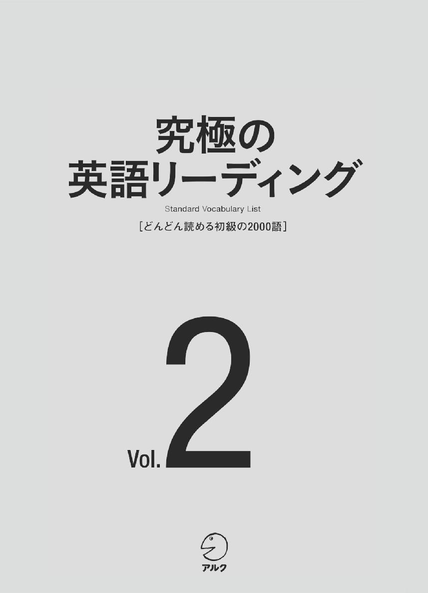
※参照項目から元の箇所に戻るには、お使いのビューワーの仕様に従ってください。または一旦目次を表示し、戻りたい箇所の近くの見出しをタップして戻ってください。
Foreword
はじめに
基本の1000語を使った英文で、英語が分かる楽しさが味わえる！
『究極の英語リーディング Vol.1』は、アルクが編集した「標準語彙水準12000」（Standard Vocabulary List［略称SVL 12000］）をベースにした、新しいタイプのリーディング教材です。
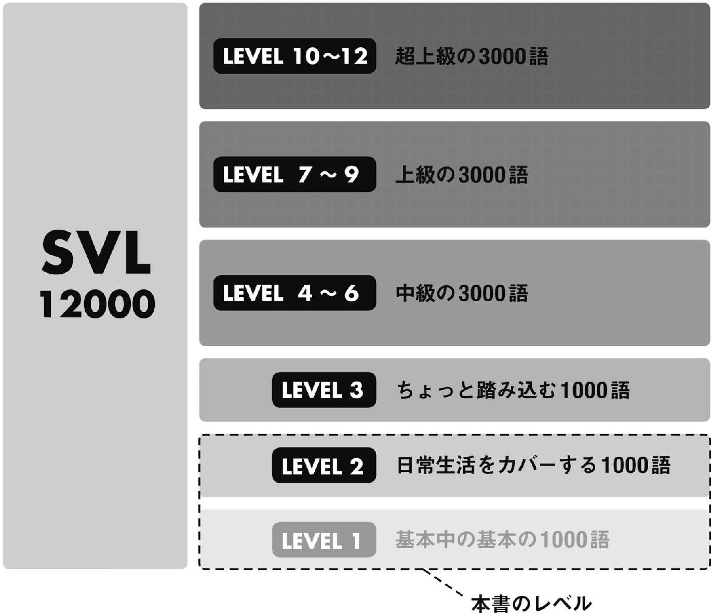
SVL 12000は、日本人英語学習者にとって有用な英単語、全12000語を、12段階にレベル分けした語彙リストです。本書の英文はSVLのLEVEL 2まで、つまり入門〜初級レベルの2000語をベースに書かれています。
LEVEL 2に属する1000語は主に、日常会話や生活における頻出語です。本書に収録されている英文は、こうした重要度は高くても身近な語彙で書かれているので、「英語が分かる楽しさ」を実感しながら読み進めることができます。一文一文を訳すようなつもりで取り組む必要はありません。分からない単語が出てきたら、飛ばして先へ進むか、分からないことがストレスになる場合には、語注や訳を参考にしてください。
また、さまざまなタイプの英文が収録されているのも本書の特長です。物語やエッセイ、記事、TOEIC テストにも出題されるような実用性の高い文書（広告、請求書、メニューなど）もあるので、これ1冊でさまざまなトピックやスタイルの英文に慣れることができます。
英語力をアップさせるには、英語に触れる機会を増やすことが効果的です。たくさんの英文を読めば、徐々に英語を理解するスピードが上がっていきます。それにより、リーディング力だけでなく、リスニング力、スピーキング力など、総合的な英語力の向上が期待できます。
「英語のリーディング力を伸ばしたい」「仕事や趣味で英語を読みたい」という人はもちろん、「英語力をアップさせたい」という人も、本書でリーディングに取り組み、ぜひ「英語が分かる楽しさ」を味わってください。
How to Use This Book
本書の使い方
本書では第1章、第2章、第3・4章でそれぞれ学習手順が少しずつ異なっています。ここでは第1章を見本にして、基本的な学習手順を紹介します。
一つの英文は3つのラウンドで学習します。各ラウンドで英文を1回読み、いくつかの課題と問題に取り組みましょう。
各章の詳しい学習手順は、それぞれ第1章、第2章、第3章の冒頭にあります。
ROUND1
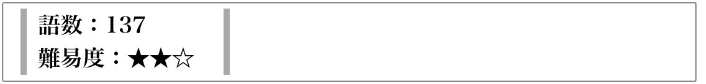
学習する英文の総語数と難易度です。難易度は以下の3段階に分かれています。
★☆☆：易しい
★★☆：普通
★★★：難しい
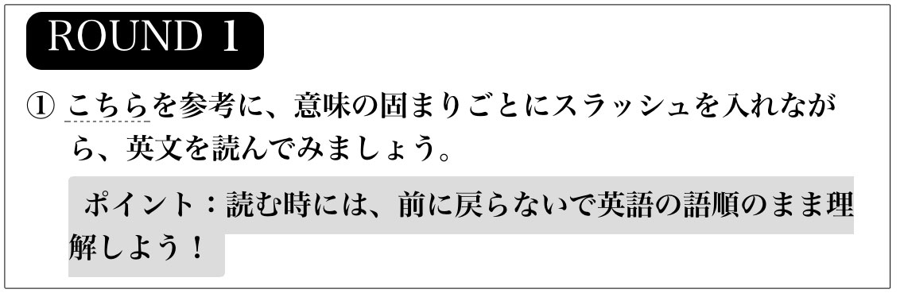
ROUND1 では「意味の固まりごとにスラッシュを入れる」「音声を聞く」などの課題を行いながら英文を読みます。
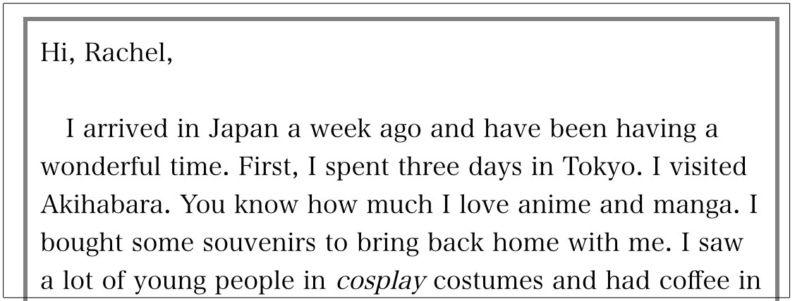
学習する英文です。読む時はできるだけ一度で概要をつかむようにしてください。英文の書体は変わることがあります。
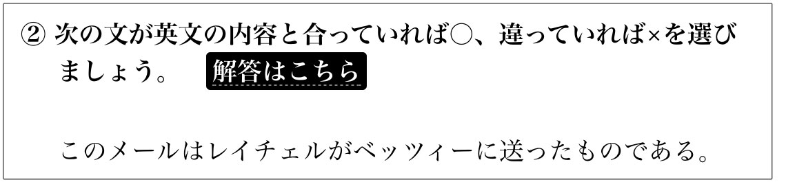
内容を理解したか確認する問題です。
学習のポイント
本書では「英文を前から理解していく」「時間を計って読む」などの方法で、読解スピードを上げることを目指します。英文を読む際には「できるだけ前に戻らずに読む」「一文一文訳すのではなく、内容を理解することを目標にする（分からない部分は飛ばす）」ように心掛けてください。
本書に収録されている英文は、エッセイ・物語・記事などの他、TOEICでよく出題される、ウェブサイト、メール、求人広告、告知などさまざまです。興味が持てないものを無理に読もうとすると、学習が続きません。面白く感じる内容や、理解しやすいものから学習しても構いません。
ROUND2
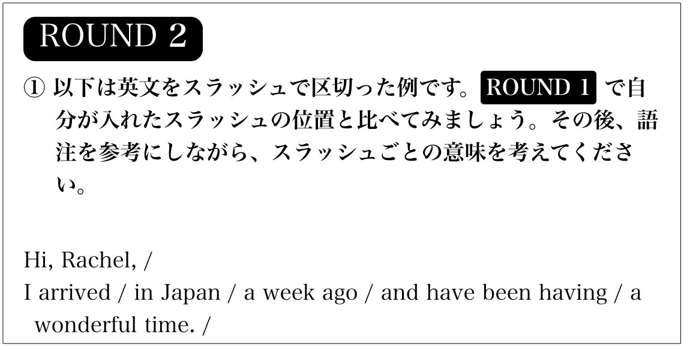
ここではROUND1 で入れたスラッシュの位置を確認したり、スラッシュごとの意味を考えたりする課題に取り組みます。
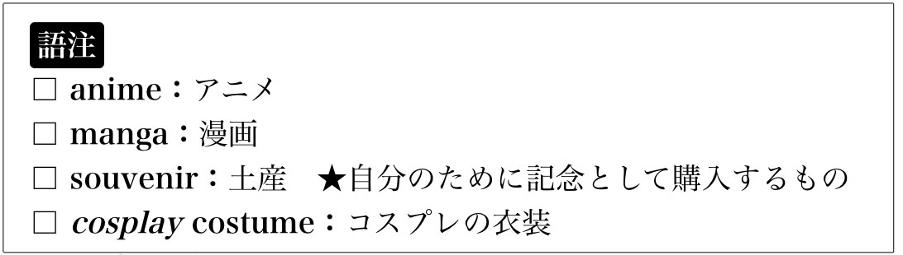
英文の語注です。意味の分からない語句を確認してください。
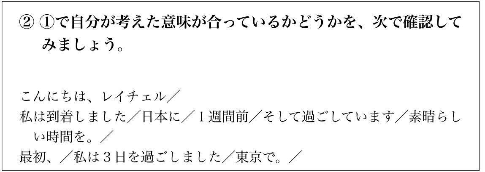
の課題の答えがここにあります。
＊第2～4章では、この後で時間を計りながら英文を読みます。
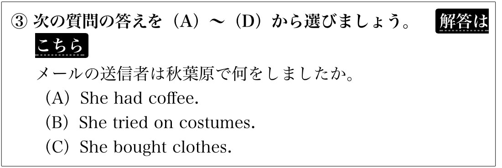
ROUND2 の問題です。内容を理解したか、ここで確認してみましょう。
ROUND3
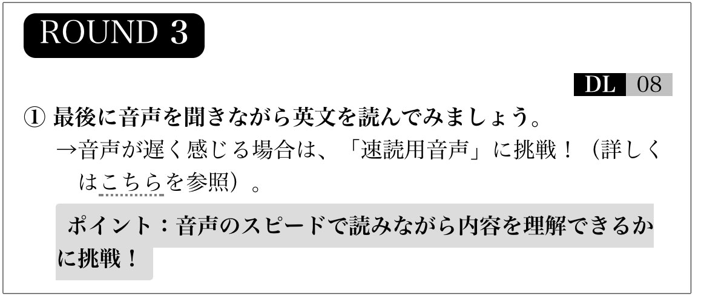
ROUND3 では学習用無料ダウンロード音声を聞きながら英文を読みます。
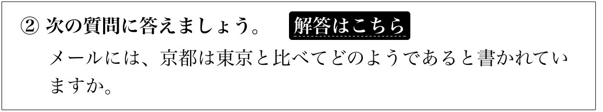
ROUND3 の問題です。内容を理解したか、ここで確認してみましょう。
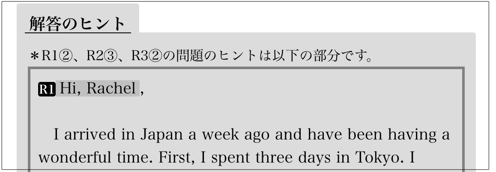
で出題された問題に解答するためのヒントが、英文中のどこにあったかを示しています。
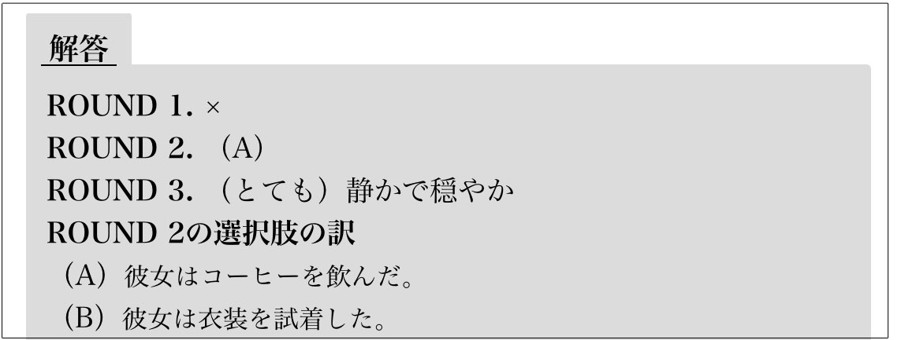
の問題の答えです。
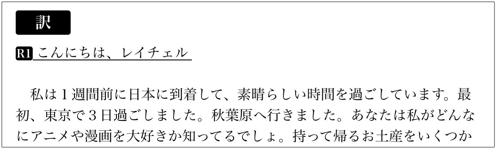
の英文の訳です。ここでも問題のヒントの位置が下線で示されます。
音声について
本書の英文を朗読した音声には、以下の2種類あります。
・通常音声（学習用無料ダウンロード音声）：100WPM程度（1分間に100語程度の速度）
・速読用音声（特典ダウンロード音声）：130WPM程度（1分間に130語程度の速度）
本書では、まず1分間に100語程度の速度で読むことを目標とし、学習用無料ダウンロード音声を使用して学習します。もしこの速度が遅く感じる場合は、ダウンロードした特典音声を学習にご使用ください。ダウンロード方法については、次ページにあります。
□
特典ダウンロード音声のお知らせ
本書に収録されている英文を学習用無料ダウンロード音声よりも速い速度で朗読した「速読用音声」が無料でダウンロードできます。
本書で音声を使用した学習を行う際に、学習用無料ダウンロード音声が遅く感じる場合は、「速読用音声」をダウンロードしてご活用ください。
特典ダウンロードはこちらにアクセス！（PC専用）
●ダウンロード先
ALC Download Center ダウンロードセンター
http://www.alc.co.jp/dl/
●ダウンロード手順
上記の「ダウンロードセンター」にアクセス
→『究極の英語リーディングVol.2』を選択
→表示される「申し込みフォーム」に必要事項を記入して、送信
→メールにてダウンロード先のURLが届くので、そこからダウンロード
●提供素材
・速読用音声（MP3音声）
＊ダウンロードしたファイルは、解凍ソフトで展開の上、ご使用ください。
□
学習用無料ダウンロード音声について
本書に対応する音声は、すべて無料でダウンロードしていただけます。下記URLにアクセスし、『究極の英語リーディングVol.2』学習用無料音声を選択、フォームに必要事項をご記入の上送信いただくと、ダウンロードページURLのご案内メールが届きます。
まずはこちらへアクセス！
ALC Download Centerダウンロードセンター
http://www.alc.co.jp/dl/
（2015年10月時点の情報。今後詳細が変更になる可能性があります）
ダウンロードした音声は「01-32」があります。
ダウンロードした音声ファイルはiTunesなどの音声再生ソフトで取りこんでご利用ください。音声再生ソフトでのファイルの取り込み方法や携帯音楽プレーヤーでの利用方法については、ソフトやプレーヤーに付属するマニュアルでご確認ください。
取り込んだ音声ファイルは、音声再生ソフトで次のように表示されます。
出版社名（アーティスト名）：「ALC PRESS INC.」と表示。
書名（アルバム名）：『究極の英語リーディングVol.2』
トラック名（曲名）：どの学習に必要な音声なのかがすぐわかるよう、トラック名は、[01_プライマリーテスト]のように曲名が表示されます。
本書では、ダウンロードした音声を使用する部分は
DL01 のように、ダウンロードした音声と同じトラック名で表示しています。該当のトラックを再生して学習してください。
□
プライマリーテスト
各章の学習を始める前に、まずテストに挑戦してください。読むのが難しく感じるかもしれませんが、力試しのつもりで取り組んでみましょう。
語数：211
難易度：★★☆
［物語］
宿題の言い訳
宿題をしてこなかった子どもの言い訳には、ジョークになるほど定番化したものがあります。その陰で無実の罪を着せられる気の毒な存在とは...
DL01
挑戦してみよう
① 時間を計りながら英文を読んでみましょう。かかった時間をこちらの「記録欄」のように書き留め、現在の読む速さを割り出しててください。続いて②の問題に答えましょう。余裕のある人は音声も聞いてください。
"The dog ate my homework," is an old excuse for not being able to turn in homework. Kids say that to their teachers in comics and on TV shows. I'm not sure how often dogs eat kids' homework in the real world, but they do seem to prevent kids from doing homework sometimes. Or, at least, that is what a number of young dog owners claim.
One day, my pupil Cathy didn't turn in her book report. She said her dog had knocked over her mother's coffee, and it had gone all over Cathy's book. As a result, she hadn't finished reading it, she explained. She even brought the wet brown book in a plastic bag to school as proof. Another day, Cathy said the dog had been sleeping on her textbook, so she hadn't had a chance to open the textbook until that morning. Here is another one: the dog had stolen and hidden her paintbrush somewhere, so she couldn't complete her art homework.
Soon afterward, I learned an interesting fact. Cathy's family dog Jessie was actually a good dog. In fact, she had received several prizes not only because her appearance was beautiful, but also because she was so well-behaved. Wasn't Cathy lucky to own such a wonderful dog?
② 次の問題の答えを（A）～（D）から選んでください。
「ジェシー」は実際にはどんな犬でしたか。
（A）She was a small dog.
（B）She was a lazy dog.
（C）She was a good dog.
（D）She was an old dog.
記録欄
① 読むのにかかった時間：（「秒」で出してください）
あなたの読む速さを計算しましょう。
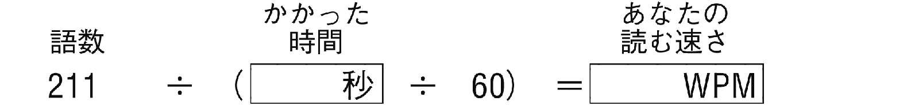
※WPM（word per minute）は1分当たりに読める単語数のことで、数値が大きいほど速いことになります。本書では100WPMを目標にしています。
※小数点以下は第二位を四捨五入してください。
例）語数211語、130秒（＝2分10秒）かかった場合
211 ÷ (130÷60) ＝ 211 ÷ 2.2 ＝ 95.9WPM
② 解答結果（どちらかに○）：（正解・不正解）
□
語注
□excuse：言い訳、弁解 ★old excuse で「お決まりの言い訳、おなじみの言い訳」の意味
□turn in ～：～を提出する
□comic：漫画
□be not sure ～：～なのか自信がない、～なのかは分からない
□in the real world：現実の世界で、実社会で
□do seem：本当に～のようだ、本当に～らしい ★ここでのdoはseemを強調している
□prevent ～ from -ing：～が...するのを妨げる
□at least：少なくとも
□a number of ～：多くの、いくつもの
□owner：持ち主、所有者 ★ここでは「飼い主」の意味
□claim：～だと主張する
□pupil：生徒
□book report：読書感想文
□knock over ～：～をひっくり返す
□all over ～：～の全体に
□as a result：結果として、結果的に
□plastic bag：ビニール袋、レジ袋
□proof：証拠、証し
□paintbrush：絵筆
□somewhere：どこかに、どこかへ
□afterward：後に、その後
□fact：事実
□actually：実際は、実は
□in fact：実際には、実のところ
□not only ～ but also ...：～だけでなく...も
□appearance：外見、見た目
□well-behaved：行儀の良い、しつけの良い
□own：～を所有する、～を持つ ★ここでは「～を飼う」の意味
訳 ＊②の解答のヒントは、以下の下線部です。
「犬が私の宿題を食べました」というのは、宿題を提出できないことに対するおなじみの言い訳です。漫画やテレビ番組で、子どもたちが教師に向かってそう言います。現実の世界では、犬がどれぐらいの頻度で子どもたちの宿題を食べるのか私には分かりませんが、犬たちは時に、子どもたちが宿題をするのを妨げてはいるようです。あるいは、少なくとも、それが多くの若い犬の飼い主たちの主張することです。
ある日、私の生徒のキャシーは読書感想文を提出しませんでした。彼女は、犬がお母さんのコーヒーをひっくり返し、それがキャシーの本の全面に広がってしまったのだと言いました。彼女は、ビニール袋にぬれた茶色い本を入れ、証拠として学校に持ってきさえしました。結果として、本を読み終えていないと彼女は説明しました。別の日、キャシーは、犬が彼女の教科書の上で眠っていたので、その日の朝まで教科書を開く機会が無かったと言いました。もう一つあります。犬が彼女の絵筆を奪いどこかに隠してしまったので、彼女は美術の宿題を完成させることができなかったというものです。
そのすぐ後、私は興味深い事実を知りました。キャシーの家の飼い犬、ジェシーは、実はいい子だったのです。 実際に彼女は、外見が美しいからというだけではなく、行儀が良いということからもいくつかの賞をもらっていました。そんな素晴らしい犬を飼えて、キャシーは幸運だったのではないでしょうか。
②の解答のヒント
＊②の解答のヒントは、以下の下線部です。
"The dog ate my homework," is an old excuse for not being able to turn in homework. Kids say that to their teachers in comics and on TV shows. I'm not sure how often dogs eat kids' homework in the real world, but they do seem to prevent kids from doing homework sometimes. Or, at least, that is what a number of young dog owners claim.
One day, my pupil Cathy didn't turn in her book report. She said her dog had knocked over her mother's coffee, and it had gone all over Cathy's book. As a result, she hadn't finished reading it, she explained. She even brought the wet brown book in a plastic bag to school as proof. Another day, Cathy said the dog had been sleeping on her textbook, so she hadn't had a chance to open the textbook until that morning. Here is another one: the dog had stolen and hidden her paintbrush somewhere, so she couldn't complete her art homework.
Soon afterward, I learned an interesting fact.Cathy's family dog Jessie was actually a good dog. In fact, she had received several prizes not only because her appearance was beautiful, but also because she was so well-behaved. Wasn't Cathy lucky to own such a wonderful dog?
□
②の解答
（C）
選択肢の訳
（A）彼女は小さい犬だった。
（B）彼女は怠けた犬だった。
（C）彼女は良い犬だった。
（D）彼女は年老いた犬だった。
□
CHAPTER 1
第１章
第1章の学習手順
第1章では、英文を意味のまとまりごとにスラッシュで区切りながら読む練習（スラッシュリーディング）をします。意味のまとまりごとに理解することで、英文を一語一語読んでいくよりも、読むスピードが速くなります。スラッシュリーディングは英文の読み方の基本となるテクニックなので、ぜひ身に付けてください。
ROUND１
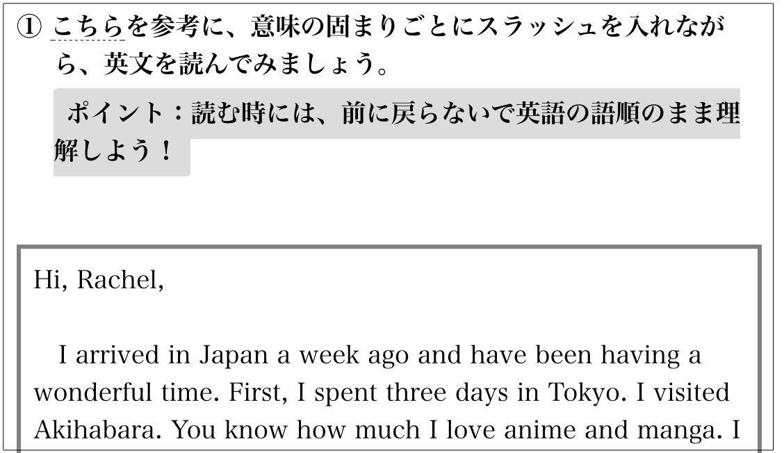
① 英文の固まりごとにスラッシュを入れながら読みます。区切る位置については以下の「スラッシュで区切る位置の目安」を参考にしてください。慣れてきたら、もっと大きな固まりで区切っても構いません。
スラッシュを入れるのが難しい場合は、ROUND2の②（スラッシュの入った英文）を読んでください。
学習のねらい 英文の頭から固まりごとに理解していくことで、文の途中で意味が分からなくなったり、前に戻って繰り返し読んだりすることが防げるため、速く読めるようになります。読む時には文頭から順に読んでいき、なるべく前に戻って読まないように注意してください。
スラッシュで区切る位置の目安
1）長い主語の後
2）長い目的語や補語の前
3）カンマ、コロン、セミコロン、ダッシュの後
4）前置詞の前
5）不定詞to、分詞の前
6）接続詞の前
7）関係詞の前
8）疑問詞節、that節の前
9）文末の副詞の前
② 続いて、問題②で内容を理解しているか確認するための問題に答えます。
ROUND２
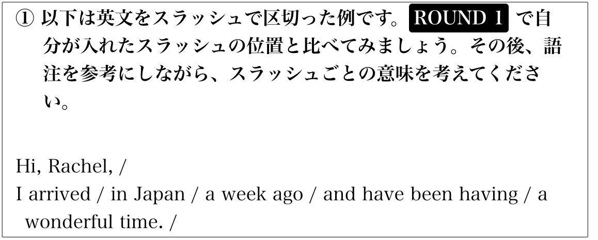
① ここではスラッシュの入れ方の例を紹介しています。ROUND1で自分で区切った位置と比べてみましょう。より大きなまとまりで区切るなど、同じ位置にスラッシュが入っていなくても、間違いというわけではありません。続いて、語注を参考に、スラッシュごとの意味を考えてください。
学習のねらい 英文の固まりごとに理解していくコツがつかめます。
② 問題②で、①のスラッシュごとの意味を確認しましょう。
③ 続いて、内容を理解しているか確認するための問題に答えます。
ROUND３
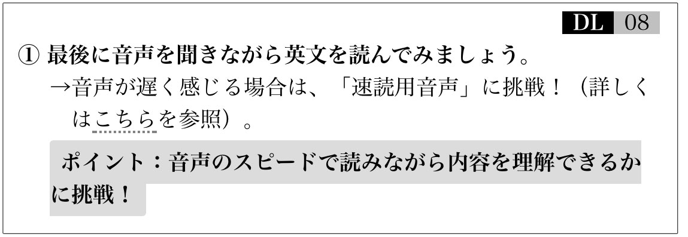
① 学習用無料ダウンロード音声を聞きながら、英文を読みます。
学習のねらい ここでは、学習用無料ダウンロード音声（1分間に100ワード［100WPM］程度）のスピードで読んで、英文が理解できるかどうかを試します。最初のうちは100WPM程度で読むことを目標としてください。
＊通常の音声のスピードが遅く感じる場合は、「速読用音声」を利用することができます。詳しくはこちらを参照してください。
② 続いて、内容を理解しているか確認するための問題に答えます。
語数：108
難易度：★☆☆
エッセイ①
私の好きなカフェ
まずは短いエッセイを読んでみましょう。
描写の内容から、お店の様子を思い浮かべてみましょう。
ROUND1
①こちらを参考に、意味の固まりごとにスラッシュを入れながら、英文を読んでみましょう。難しい場合はROUND2 にある英文を読んでも構いません。1回で文の概要をつかむようにしてください。
ポイント：読む時には、前に戻らないで英語の語順のまま理解しよう！
In my town, there is a small cafe that I love. It has soft seats with low tables. The lighting is soft, too, and there is always jazz music playing. The pictures hanging on the walls are from old nature magazines. One is a picture of a tiger. Another is a tall mountain covered with snow. My favorite is a picture of a flying bird. The coffee is delicious, and the food is the same kind that my mother cooked when I was a little girl. I love to sit in the comfortable chairs and talk with friends. It is also a perfect place to read a book.
② 次の文が英文の内容と合っていれば○、違っていれば×を選びましょう。 解答はこちら
そのカフェのコーヒーは筆者の好みではない。
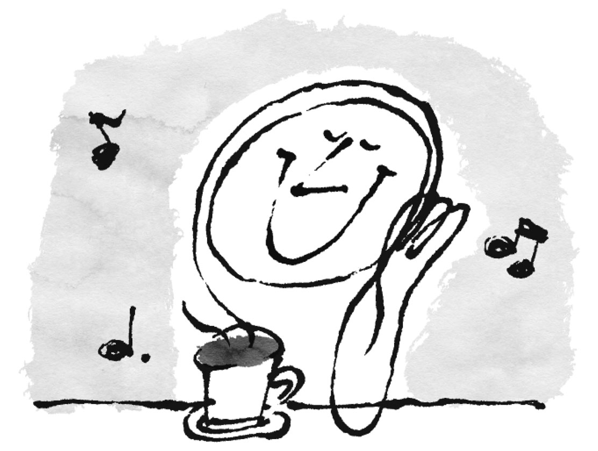
ROUND2
① 以下は英文をスラッシュで区切った例です。ROUND1 で自分が入れたスラッシュの位置と比べてみましょう。その後、語注を参考にしながら、スラッシュごとの意味を考えてください。
In my town, there is a small cafe that I love. /
It has soft seats / with low tables. /
The lighting is soft, too, / and there is always jazz music playing.
The pictures hanging on the walls are from old nature magazines.
One is a picture of a tiger.
Another is a tall mountain covered with snow.
My favorite is a picture of a flying bird.
The coffee is delicious, and the food is the same kind that my mother cooked when I was a little girl.
I love to sit in the comfortable chairs and talk with friends. /
It is also a perfect place / to read a book. /
読み方のヒント
ROUND1 の jazz music playing は「流れているジャズ音楽」の意味で、playing が jazz music を説明しています。pictures hanging on the walls は「壁に掛かっている写真」、a tall mountain covered with snow は「雪で覆われた高い山」という意味です。
□
語注
□lighting：照明
□jazz music：ジャズ音楽
□hang on ～：～に掛かる
② ①で自分が考えた意味が合っているかどうかを、次で確認してみましょう。
私の町には、／小さなカフェがあります／私が愛する。／
そこには柔らかい座席があります／低いテーブルと共に。／
照明もまた柔らかいです／そしていつもジャズ音楽があります／流れている。／
写真は／掛かっている／壁に／古い自然雑誌からのものです。／
一つは写真です／トラの。／
もう一つは高い山です／雪に覆われた。／
私のお気に入りは写真です／飛んでいる鳥の。／
コーヒーはおいしいです、／そして料理は同じ種類です／私の母が作った／私が少女だったころに。／
私は大好きです／腰掛けるのが／その座り心地の良いいすに／そして話すのが／友人たちと。／
そこは完ぺきな場所でもあります／本を読むのに。／
③ 次の質問の答えを（A）～（D）から選びましょう。 解答はこちら
このカフェではどんな音楽が流れていますか。
（A）Classical music
（B）Jazz music
（C）Country music
（D）Rock music
ROUND3
DL02
① 最後に音声を聞きながら英文を読んでみましょう。
→音声が遅く感じる場合は、「速読用音声」に挑戦！（詳しくはこちらを参照）。
ポイント：音声のスピードで読みながら内容を理解できるかに挑戦！
② 次の質問に答えましょう。 解答はこちら
このカフェは何に完ぺきな場所ですか。
解答のヒント
＊R1②、R2③、R3②の問題のヒントは以下の部分です。
In my town, there is a small cafe that I love. It has soft seats with low tables. The lighting is soft, too, andR2there is always jazz music playing. The pictures hanging on the walls are from old nature magazines. One is a picture of a tiger. Another is a tall mountain covered with snow. My favorite is a picture of a flying bird.R1The coffee is delicious, and the food is the same kind that my mother cooked when I was a little girl. I love to sit in the comfortable chairs and talk with friends.R3It is also a perfect place to read a book.
□
解答
ROUND 1. ×
ROUND 2. （B）
ROUND 3. 本を読む
ROUND 2の選択肢の訳
（A）クラシック音楽
（B）ジャズ音楽
（C）カントリー音楽
（D）ロック音楽
□
訳
私の町に私が愛する小さなカフェがあります。そこには柔らかい座席に低いテーブルがあります。照明も柔らかく、R2いつもジャズ音楽が流れています。壁に掛かっている写真は、古い自然雑誌からのものです。トラの写真があります。雪に覆われた高い山の写真もあります。私のお気に入りは飛んでいる鳥の写真です。R1コーヒーはおいしいし、料理は、私が少女だったころに母が作ってくれたのと同じ種類のものです。 私はその座り心地の良いいすに腰掛けて、友人たちと話すのが大好きです。R3そこは本を読むのに完ぺきな場所でもあります。
語数：109
難易度：★☆☆
エッセイ②
誕生日ケーキのろうそく
誕生日ケーキにろうそくを立てるのは日本でもすっかりおなじみですが、そのまますぐに吹き消してしまっていませんか。
ネイティブスピーカーに本場の「作法」を伝授してもらいましょう。
ROUND1
①こちらを参考に、意味の固まりごとにスラッシュを入れながら、英文を読んでみましょう。
ポイント：読む時には、前に戻らないで英語の語順のまま理解しよう！
In Western countries, there is a birthday tradition of putting the same number of candles on a cake as the birthday person's age. For example, if my sister is turning 12 today, we will put 12 candles on her birthday cake. We light the candles, she makes a secret wish, and then she blows out the candles. There is an interesting superstition that if she can blow out all of the candles, her wish will come true. But if she can't blow out all the candles, she won't get her wish. People also believe that if she tells anyone what her wish was before it comes true, it won't.
② 次の文が英文の内容と合っていれば○、違っていれば×を選びましょう。 解答はこちら
西洋諸国では、誕生日ケーキに立てるろうそくの数は、年齢に関係なく、12本と決まっている。
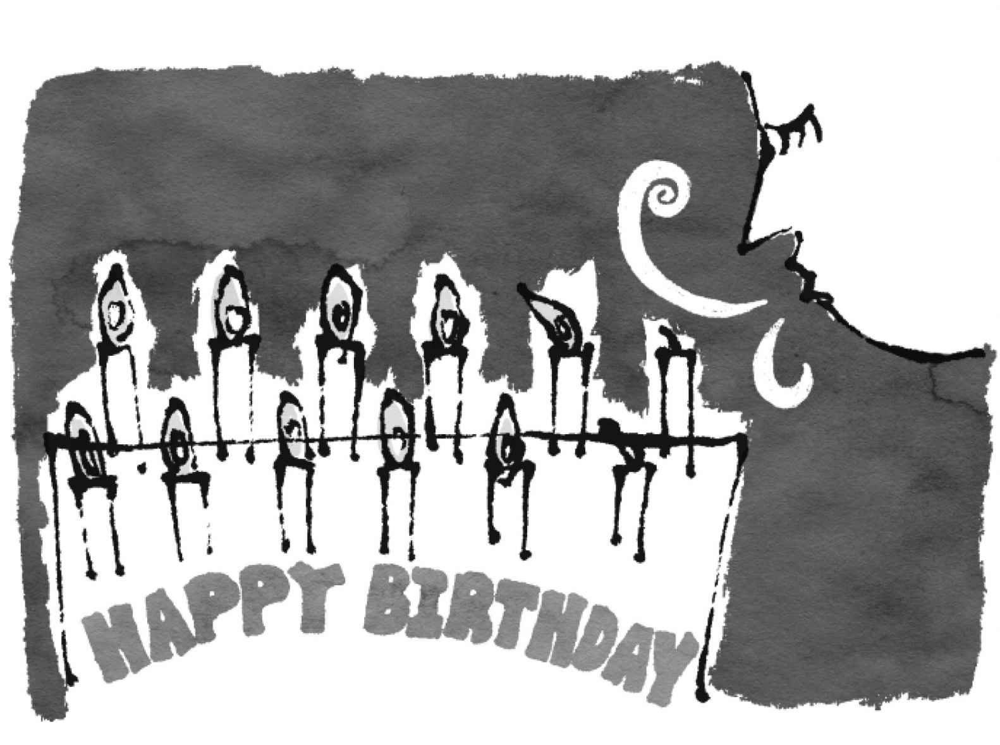
ROUND2
① 以下は英文をスラッシュで区切った例です。ROUND1 で自分が入れたスラッシュの位置と比べてみましょう。その後、語注を参考にしながら、スラッシュごとの意味を考えてください。
In Western countries, there is a birthday tradition of putting the same number of candles on a cake / as the birthday person's age. /
For example, if my sister is turning 12 today, we will put 12 candles on her birthday cake. /
We light the candles, / she makes a secret wish, and then she blows out the candles. /
There is an interesting superstition / that if she can blow out all of the candles, her wish will come true. /
But / if she can't blow out all the candles, she won't get her wish. /
People also believe / that if she tells anyone what her wish was before it comes true, / it won't. /
語注
□tradition：伝統、習慣
□turn：（ある年齢）になる
□light：～に火を付ける
□make a wish：願い事をする
□blow out 〜：〜を吹き消す
□superstition：迷信
□come true：本当になる、実現する
□get her wish：彼女の願いがかなう getone's wish で「願いがかなう、望み通りになる」の意味
② ①で自分が考えた意味が合っているかどうかを、次で確認してみましょう。
西洋諸国では、／誕生日の習慣があります／立てるという／同じ数のろうそくを／ケーキの上に／誕生日の人の年と。／
例えば、／私の妹が12歳になるとしたら／今日、／私たちは12本のろうそくを立てます／彼女の誕生日ケーキの上に。／
私たちはろうそくに火を付けます／彼女は秘密の願い事をします／そしてそれから／彼女はろうそくを吹き消します。／
興味深い迷信があります／もし彼女が吹き消すことができれば／全てのろうそくを／彼女の願いは実現するという。／
でも、／もし彼女が吹き消すことができなければ／全部のろうそくを／彼女が願いをかなえることはないでしょう。／
人々は〜も信じています／もし彼女が誰かに話せば／彼女の願い事がどんなものだったかを／それが実現する前に、／それは実現しない。／
③ 次の質問の答えを（A）～（D）から選びましょう。 解答はこちら
どんなことをすると願い事がかなわなくなると信じられていますか。
（A）Putting candles on a cake （B）Lighting candles
（C）Blowing out all the candles （D）Telling a wish
ROUND3
DL03
① 最後に音声を聞きながら英文を読んでみましょう。
→音声が遅く感じる場合は、「速読用音声」に挑戦！（詳しくはこちらを参照）。
ポイント：音声のスピードで読みながら内容を理解できるかに挑戦！
② 次の質問に答えましょう。 解答はこちら
ろうそくの火を吹き消す前にすべきことは何ですか。
解答のヒント
＊R1②、R2③、R3②の問題のヒントは以下の部分です。
R1In Western countries, there is a birthday tradition of putting the same number of candles on a cake as the birthday person's age. For example, if my sister is turning 12 today, we will put 12 candles on her birthday cake. We light the candles,R3she makes a secret wish, and then she blows out the candles. There is an interesting superstition that if she can blow out all of the candles, her wish will come true. But if she can't blow out all the candles, she won't get her wish. People also believe thatR2if she tells anyone what her wish was before it comes true, it won't.
□
解答
ROUND 1. ×
ROUND 2. （D）
ROUND 3. 秘密の願い事をすること
ROUND 2の選択肢の訳
（A）ケーキの上にろうそくを立てる
（B）ろうそくに火をつける
（C）全てのろうそくを吹き消す
（D）自分の願い事を話す
□
訳
R1西洋諸国では、ケーキの上に、誕生日の人の年と同じ数のろうそくを立てるという誕生日の習慣があります。 例えば、私の妹が今日12歳になるとしたら、私たちは彼女の誕生日ケーキの上に12本のろうそくを立てます。私たちはろうそくに火を付け、R3彼女は秘密の願い事をしてから、ろうそくを吹き消します。もし彼女が全てのろうそくを吹き消すことができれば、彼女の願いは実現するという興味深い迷信があります。でも、もし彼女が全てのろうそくを吹き消すことができなければ、彼女の願いはかなわないでしょう。人々はまた、R2もし彼女が、それが実現する前に、願い事がどんなものだったのかを誰かに話せば、それは実現しないとも信じています。
語数：93
難易度：★★★
記事①
気象予報
新聞に掲載されている気象予報の記事を読んでみましょう。
天気に関する表現に注意を払ってください。
ROUND1
①こちらを参考に、意味の固まりごとにスラッシュを入れながら、英文を読んでみましょう。
ポイント：読む時には、前に戻らないで英語の語順のまま理解しよう！
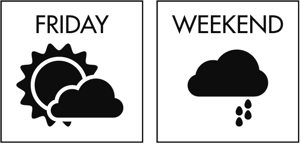
Portland weekend Weather:partly cloudy Friday, light rain on weekend
Portland can expect early morning fog and low clouds Friday. The fog should clear by midmorning, with partly cloudy conditions for the rest of the day. No rain is expected Friday. A storm is forming near the coast to the southwest. It should bring light showers tomorrow and Sunday. Friday and weekend temperatures are expected to fall as low as 10 degrees Celsius in the late night and early morning and increase to a peak of 24 degrees Celsius in the early afternoon.
② 次の文が英文の内容と合っていれば○、違っていれば×を選びましょう。 解答はこちら
予報では、金曜にポートランドで雨は降らない。
ROUND2
① 以下は英文をスラッシュで区切った例です。ROUND1 で自分が入れたスラッシュの位置と比べてみましょう。その後、語注を参考にしながら、スラッシュごとの意味を考えてください。
Portland weekend weather: partly cloudy Friday, light rain on weekend /
Portland can expect early morning fog / and low clouds Friday.
The fog should clear by midmorning, with partly cloudy conditions for the rest of the day.
No rain is expected Friday.
A storm is forming near the coast to the southwest. /
It should bring light showers / tomorrow and Sunday. /
Friday and weekend temperatures are expected / to fall as low as 10 degrees Celsius in the late night and early morning and increase to a peak of 24 degrees Celsius in the early afternoon.
語注
□partly：一部は
□fog：霧
□Friday：金曜日に ★副詞。on Friday でも同じ意味だが、その場合は「金曜日」という意味の名詞
□midmorning：午前半ば
□storm：嵐、暴風
□form：形を成す、生じる
□southwest：南西部
□temperature：温度、気温
□increase：増える、上昇する
□peak：頂点
□Celsius：セ氏 ★温度の単位
② ①で自分が考えた意味が合っているかどうかを、次で確認してみましょう。
ポートランドの週末の天気：／所により曇り／金曜は、／小雨／週末に／ポートランドは早朝の霧の見込みです／そして低い雲／金曜に。／
霧は晴れるでしょう／午前半ばまでに、／所により曇りの状態で／その日の残りは。／
雨は予想されていません／金曜に。／
嵐が発生中です／沿岸で／南西の。／
それが軽いにわか雨をもたらすでしょう／明日と日曜には。／
金曜と週末の気温は予想されます／下がることが／セ氏10度の低さまで／深夜と早朝に／そして上昇することが／最高セ氏24度まで／午後の早い時間には。／
③ 次の質問の答えを（A）～（D）から選びましょう。 解答はこちら
海岸近くでは何が発生していますか。
（A）A storm
（B）A heat wave
（C）A fog
（D）A snow cloud
ROUND3
DL04
① 最後に音声を聞きながら英文を読んでみましょう。
→音声が遅く感じる場合は、「速読用音声」に挑戦！（詳しくはこちらを参照）。
ポイント：音声のスピードで読みながら内容を理解できるかに挑戦！
② 次の質問に答えましょう。 解答はこちら
霧はいつごろまでに晴れそうですか。
解答のヒント
＊R1②、R2③、R3②の問題のヒントは以下の部分です。
Portland weekend Weather:
partly cloudy Friday, light rain on weekend
Portland can expect early morning fog and low clouds Friday.R3The fog should clear by midmorning, with partly cloudy conditions for the rest of the day.R1No rain is expected Friday.R2A storm is forming near the coast to the southwest. It should bring light showers tomorrow and Sunday. Friday and weekend temperatures are expected to fall as low as 10 degrees Celsius in the late night and early morning and increase to a peak of 24 degrees Celsius in the early afternoon.
□
解答
ROUND 1. ○
ROUND 2. （A）
ROUND 3. 金曜の午前半ば
ROUND 2の選択肢の訳
（A）嵐 （B）熱波 （C）霧 （D）雪雲
訳
ポートランドの週末の天気：金曜は所により曇り、週末に小雨
ポートランドは金曜には早朝の霧と低い雲の見込みです。R3霧は午前半ばまでに晴れて、その日の残りは所により曇りの状態となるでしょう。R1金曜に雨は予想されていません。R2嵐が南西の沿岸で発生中です。 それが明日と日曜には軽いにわか雨をもたらすでしょう。金曜と週末の気温は、深夜と早朝にはセ氏10度の低さまで下がり、午後の早い時間には最高セ氏24度まで上昇することが予想されます。
語数：133
難易度：★★☆
メール①
送別会のお知らせ
今回はメールを読んでみましょう。
職場で一斉に送信されるタイプのものですが、「告知」と「募集」から成っていることをしっかりつかみましょう。
ROUND1
①こちらを参考に、意味の固まりごとにスラッシュを入れながら、英文を読んでみましょう。
ポイント：読む時には、前に戻らないで英語の語順のまま理解しよう！
To: All Staff
From: Angela Pierson, Assistant Account ManagerSubject: Charlene's Goodbye Party
Charlene Brookes, our account manager of 17 years, has announced her retirement. Though she was originally scheduled to leave a month ago, she was kind enough to stay on for six extra weeks. With just two weeks to go before Charlene leaves us, I am planning a special goodbye party. It is scheduled for Charlene's final day at the office, which will be Friday, February 20. We will gather in Meeting Room No. 3 at 3:30 P.M., and the party will last until 4:30. I would like to ask for volunteers to prepare the room during lunchtime and clean up afterward. Please respond as soon as possible by replying to this email. Also, any gift ideas for Charlene are welcome.
② 次の文が英文の内容と合っていれば○、違っていれば×を選びましょう。 解答はこちら
シャーリーン・ブルックスさんは１カ月前に退社した。
ROUND2
① 以下は英文をスラッシュで区切った例です。ROUND1 で自分が入れたスラッシュの位置と比べてみましょう。その後、語注を参考にしながら、スラッシュごとの意味を考えてください。
To: All Staff
From: Angela Pierson, Assistant Account Manager /
Subject: / Charlene's Goodbye Party /
Charlene Brookes, / our account manager of 17 years, has announced her retirement. /
Though she was originally scheduled / to leave a month ago, she was kind enough to stay on for six extra weeks. /
With just two weeks / to go before Charlene leaves us, I am planning a special goodbye party.
It is scheduled / for Charlene's final day / at the office, which will be Friday, February 20. /
We will gather / in Meeting Room No. 3 at 3:30 P.M., and the party will last until 4:30.
I would like to ask for volunteers to prepare the room during lunchtime and clean up afterward.
Please respond as soon as possible by replying to this email.
Also, any gift ideas for Charlene are welcome.
語注
□staff：社員、職員
□assistant account manager：副経理部長
□subject：主題、テーマ ★ここではメールの「件名」の意味
□goodbye party：送別会
□announce：～を発表する、～を公表する
□retirement：退職
□though：～にもかかわらず
□be scheduled to 〜（動詞の原形）：〜する予定になっている
□originally：もともと
□stay on：居続ける、残る
□extra：余分の、追加の
□to go：（時間が）残って
□be scheduled for 〜：〜が予定されている、〜の予定になっている
□ask for 〜 to ...：〜に...するよう頼む
□volunteer：有志、ボランティア
□lunchtime：昼食の時間、昼休み
□afterward：後で、後ほど
□respond：返事をする
□as soon as possible：できるだけ早く
□reply to 〜：〜に返信する
② ①で自分が考えた意味が合っているかどうかを、次で確認してみましょう。
宛先：／全従業員／
送信者：／アンジェラ・ピアソン、／副経理部長／
件名：／シャーリーンの送別会／
シャーリーン・ブルックスさんが／われわれの経理部長だった／17年間／退職を発表しました。／
彼女はもともと予定でしたが／退社する／1カ月前に、／彼女は十分に親切でした／残るほど／追加の6週の間。／
わずか2週間となって／残すところ／シャーリーンが去るまで、／私は計画しています／特別な送別会を。／
それは予定されています／シャーリーンの最後の日に／職場での、／それは金曜日です／2月20日の。／
われわれは集まります／第3会議室に／午後3時半に／そしてパーティーは続きます／4時半まで。／
私はしたいと思います／有志を募集することを／部屋を準備する／昼休みの間に／そして片付ける／後ほど。／
お返事を下さい／できるだけ早く／返信によって／このメールへの。／
また、／どんな贈り物のアイデアも／シャーリーンへの／歓迎です。／
③ 次の質問の答えを（A）～（D）から選びましょう。 解答はこちら
ピアソンさんの役職は何ですか。
（A）CEO
（B）Assistant Account Manager （C）President
（D）Account Manager
ROUND3
DL05
① 最後に音声を聞きながら英文を読んでみましょう。
→音声が遅く感じる場合は、「速読用音声」に挑戦！（詳しくはこちらを参照）。
ポイント：音声のスピードで読みながら内容を理解できるかに挑戦！
② 次の質問に答えましょう。 解答はこちら
パーティーは何時間の予定ですか。
解答のヒント
＊R1②、R2③、R3②の問題のヒントは以下の部分です。
To: All StaffFrom:R2Angela Pierson, Assistant Account ManagerSubject: Charlene's Goodbye Party
Charlene Brookes, our account manager of 17 years, has announced her retirement.R1Though she was originally scheduled to leave a month ago, she was kind enough to stay on for six extra weeks. With just two weeks to go before Charlene leaves us, I am planning a special goodbye party. It is scheduled for Charlene's final day at the office, which will be Friday, February 20.R3We will gather in Meeting Room No. 3 at 3:30 P.M., and the party will last until 4:30. I would like to ask for volunteers to prepare the room during lunchtime and clean up afterward. Please respond as soon as possible by replying to this email. Also, any gift ideas for Charlene are welcome.
□
解答
ROUND 1. ×
ROUND 2. （B）
ROUND 3. 1時間
ROUND 2の選択肢の訳
（A）最高経営責任者
（B）副経理部長
（C）社長
（D）経理部長
□
訳
宛先：全従業員
送信者：R2アンジェラ・ピアソン、副経理部長
件名：シャーリーンの送別会
17年間われわれの経理部長だったシャーリーン・ブルックスさんが、退職を発表しました。R1彼女はもともと1カ月前に退社する予定でしたが、親切にも6週間長く残ってくれました。 シャーリーンが去るまで残りわずか2週間となり、私は特別な送別会を計画しています。会はシャーリーンの最終出社日である2月20日金曜日に予定されています。R3われわれは午後3時半に第3会議室に集まって、パーティーは4時半まで続きます。 昼休みの間に部屋を準備し、後ほど片付けをしてくれる有志を募集したいと思います。このメールへの返信で、できるだけ早くお返事を下さい。また、シャーリーンへの贈り物のどんなアイデアも歓迎です。
ROUND2
① 以下は英文をスラッシュで区切った例です。ROUND1 で自分が入れたスラッシュの位置と比べてみましょう。その後、語注を参考にしながら、スラッシュごとの意味を考えてください。
This day, I will marry my friend, the one I laugh with, live for, dream with, love. /
Ann and Stanley Osborne ask you / to join them at the wedding of their daughter, Julie Marie, to Michael Thomas, son of Jane and David Hampton /
Saturday, / the sixth of June, 2015 at three o'clock in the afternoon
First Baptist Church /
6400 / Huntington Street East Bay, Virginia /
The wedding will be followed / by a reception / at Vacarro's Italian restaurant / on Beaumont Street. /
読み方のヒント
招待状の冒頭にある This day, ... love. は、結婚式の招待状などによく引用される文です。
□
語注
□Baptist Church：バプテスト教会 ★バプテストは、キリスト教プロテスタントの教派の一つ
□be followed by ～：後に～がある
□reception：披露宴
② ①で自分が考えた意味が合っているかどうかを、次で確認してみましょう。
今日、／私は友と結婚します／その人／私が共に笑い、／生きがいとし、／共に夢を見て、／愛する。／
アンとスタンリー・オズボーンはあなたに求めます／彼らに加わることを／結婚式で／彼らの娘の／ジュリー＝マリー／マイケル＝トーマスとの、／子息／ジェーンとデービッド・ハンプトンの。／
土曜日／6月6日／2015年／3時／午後の／
第１バプテスト教会／
6400番地／ハンティントン通り／イーストベイ／バージニア州／
結婚式の後にあります／披露宴が／イタリアン・レストランの「バッカーロズ」で／ボーモント通りにある。／
③ 次の質問の答えを（A）～（D）から選びましょう。 解答はこちら
この招待状は誰からのものですか。
（A）Michael Thomas （B）Ann and Stanley Osborne （C）Jane and David Hampton （D）Julie Marie
ROUND3
DL06
① 最後に音声を聞きながら英文を読んでみましょう。
→音声が遅く感じる場合は、「速読用音声」に挑戦！（詳しくはこちらを参照）。
ポイント：音声のスピードで読みながら内容を理解できるかに挑戦！
② 次の質問に答えましょう。 解答はこちら
新郎の父親の名前は何ですか。
解答のヒント
＊R1②、R2③、R3②の問題のヒントは以下の部分です。
This day, I will marry my friend,
the one I laugh with, live for, dream with, love.
R2Ann and Stanley Osborne
ask you to join them at the wedding
of their daughter,
Julie Marie,
to
R3Michael Thomas,
son of
Jane and David Hampton
Saturday, the sixth of June, 2015
at three o'clock in the afternoon
R1First Baptist Church
6400 Huntington Street
East Bay, Virginia
R1The wedding will be followed by a reception at Vacarro's Italian restaurant on Beaumont Street.
□
解答
ROUND 1. ○
ROUND 2. （B）
ROUND 3. デービッド（・ハンプトン）
ROUND 2の選択肢の訳
（A）マイケル＝トーマス
（B）アンとスタンリー・オズボーン
（C）ジェーンとデービッド・ハンプトン
（D）ジュリー＝マリー
□
訳
今日、私は、私が共に笑い、生きがいとし、共に夢を見、愛する友と結婚します。
R2アン、スタンリー・オズボーンは
彼らの娘、ジュリー＝マリーと
R3ジェーン、デービッド・ハンプトン夫妻の子息、マイケル＝トーマスとの
結婚式にあなたのご出席を求めます。
2015年６月６日（土）
午後３時
R1第１バプテスト教会
バージニア州イーストベイ
ハンティントン通り6400番地
R1結婚式の後に、ボーモント通りにあるイタリアン・レストランの「バッカーロズ」で披露宴があります。
語数：133
難易度：★★☆
物語①
社会人１年生
今回は短めの物語を取り上げます。
社会人１年生、スーザンの成長の様子を追っていきましょう。
ROUND1
①こちらを参考に、意味の固まりごとにスラッシュを入れながら、英文を読んでみましょう。
ポイント：読む時には、前に戻らないで英語の語順のまま理解しよう！
When Susan finished college, she got a job working for a big company. At first, the work was very difficult. Susan had never worked in an office before, so she had to learn a lot of rules. She had to learn to be polite to all the company's customers, even when they were not being reasonable. She found it difficult to sit still at her desk all day and missed having a lot of free time to be with her friends.
But Susan was lucky. She had a very kind and understanding boss. He was very patient and took the time to explain how things worked in the office. In time, Susan got used to her work. Her boss often praised her, and soon she took great pride in doing a good job.
② 次の文が英文の内容と合っていれば○、違っていれば×を選びましょう。 解答はこちら
スーザンは社会人になって、友人たちと一緒にいる時間が減ったと考えられる。
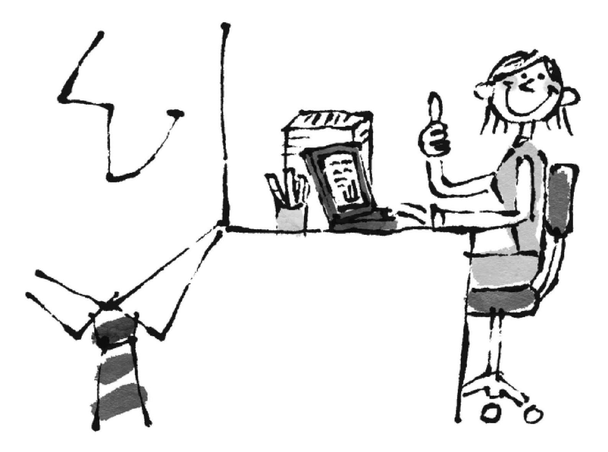
ROUND2
① 以下は英文をスラッシュで区切った例です。ROUND1 で自分が入れたスラッシュの位置と比べてみましょう。その後、語注を参考にしながら、スラッシュごとの意味を考えてください。
When Susan finished college, she got a job working for a big company.
At first, the work was very difficult.
Susan had never worked in an office before, so she had to learn a lot of rules. /
She had to learn / to be polite / to all the company's customers, / even when they were not being reasonable. /
She found it difficult / to sit still at her desk all day and missed having a lot of free time to be with her friends. /
But Susan was lucky. /
She had a very kind and understanding boss.
He was very patient and took the time to explain how things worked in the office. /
In time, / Susan got used to her work.
Her boss often praised her, and soon she took great pride in doing a good job. /
語注
□reasonable：分別がある、道理をわきまえている
□find it difficult to 〜（動詞の原形）：〜するのは難しいと思う、〜するのを苦手に感じる
□still：じっとして、動かないで
□miss -ing：〜していたのを懐かしく思う
□understanding：理解がある、物分かりの良い
□take the time to 〜（動詞の原形）：〜するための時間を割く
□in time：そのうちに、やがて
□get used to 〜：〜に慣れる
□praise：〜を褒める
□take pride in 〜：〜を誇りとする
② ①で自分が考えた意味が合っているかどうかを、次で確認してみましょう。
スーザンは大学を卒業すると、／彼女は職を得ました／働く／大企業で。／
最初、／仕事は非常に大変でした。／
スーザンは働いたことがありませんでした／会社で／前に／なので彼女は学ばなくてはなりませんでした／たくさんのルールを。／
彼女は学ばなくてはなりませんでした／礼儀正しくすることを／全ての会社の顧客に対して、／たとえ相手が道理をわきまえていないときでさえ。／
彼女は苦手に感じました／じっと座っているのが／机に向かって／一日中／そして多くの自由時間があったのを懐かしく思いました／友人たちと一緒にいる。／
それでもスーザンは幸運でした。／
彼女にはいました／とても親切で理解のある上司が。／
彼は非常に忍耐強かったのです／そして時間を割きました／説明するための／どのように物事が機能するのかを／会社で。／
やがて、／スーザンは慣れました／彼女の仕事に。／
彼女の上司は彼女のことをよく褒めました、／そしてすぐに彼女は誇りを持ちました／良い仕事をすることに。／
③ 次の質問の答えを（A）～（D）から選びましょう。 解答はこちら
次のうち、スーザンの上司について述べられていないのはどれですか。
（A）He was kind.
（B）He was understanding.
（C）He was lucky.
（D）He was patient.
ROUND3
DL07
① 最後に音声を聞きながら英文を読んでみましょう。
→音声が遅く感じる場合は、「速読用音声」に挑戦！（詳しくはこちらを参照）。
ポイント：音声のスピードで読みながら内容を理解できるかに挑戦！
② 次の質問に答えましょう。 解答はこちら
スーザンが誇りにするようになったのはどんなことですか。
解答のヒント
＊R1②、R2③、R3②の問題のヒントは以下の部分です。
When Susan finished college, she got a job working for a big company. At first, the work was very difficult. Susan had never worked in an office before, so she had to learn a lot of rules. She had to learn to be polite to all the company's customers, even when they were not being reasonable. She found it difficult to sit still at her desk all day andR1missed having a lot of free time to be with her friends.
But Susan was lucky.R2She had a very kind and understanding boss.R2He was very patient and took the time to explain how things worked in the office. In time, Susan got used to her work. Her boss often praised her, and soonR3she took great pride in doing a good job.
□
解答
ROUND 1. ○
ROUND 2. （C）
ROUND 3. 良い仕事をすること
ROUND 2の選択肢の訳
（A）彼は親切だった。
（B）彼は理解があった。
（C）彼は幸運だった。
（D）彼は忍耐強かった。
□
訳
スーザンは大学を卒業すると、大企業で働く職を得ました。最初、仕事は非常に大変でした。スーザンはこれまでに会社で働いたことがなかったので、たくさんのルールを学ばなくてはなりませんでした。彼女は、たとえ相手が道理をわきまえていないときでさえ、全ての会社の顧客に対して礼儀正しくすることを学ばなくてはなりませんでした。彼女は一日中机に向かってじっと座っているのを苦手に感じ、R1友人たちと一緒にいる自由時間が多くあったのを懐かしく思いました。
それでもスーザンは幸運でした。R2彼女にはとても親切で理解のある上司がいました。R2彼は非常に忍耐強く、会社で物事がどのように機能するのか説明するための時間を割いてくれました。やがて、スーザンは仕事に慣れました。彼女の上司は彼女のことをよく褒め、すぐにR3彼女は良い仕事をすることに誇りを持ちました。
語数：137
難易度：★★☆
メール②
ただ今日本を満喫中
海外旅行中のアメリカ人女性が母国の友人に送ったメールです。
念願の日本旅行が実現して、各地をエネルギッシュに回っている様子が伝わってきます。
ROUND1
①こちらを参考に、意味の固まりごとにスラッシュを入れながら、英文を読んでみましょう。
ポイント：読む時には、前に戻らないで英語の語順のまま理解しよう！
Hi, Rachel,
I arrived in Japan a week ago and have been having a wonderful time. First, I spent three days in Tokyo. I visited Akihabara. You know how much I love anime and manga. I bought some souvenirs to bring back home with me. I saw a lot of young people incosplay costumes and had coffee in a "maid café". I also went to Shibuya to check the latest fashions. I wanted to buy some things, but everything is so expensive in Tokyo! It's also crowded and noisy, but that's part of the fun.
After Tokyo, I went to Kyoto. I looked at lots of old buildings, including several temples and a palace. Compared to Tokyo, Kyoto is very quiet and peaceful.
I'm flying back home in a couple of days. See you then!
ROUND2
① 以下は英文をスラッシュで区切った例です。ROUND1 で自分が入れたスラッシュの位置と比べてみましょう。その後、語注を参考にしながら、スラッシュごとの意味を考えてください。
Hi, Rachel, /
I arrived / in Japan a week ago and have been having a wonderful time.
First, I spent three days in Tokyo. /
I visited Akihabara. /
You know how much I love anime and manga. /
I bought some souvenirs / to bring back home with me.
I saw a lot of young people / incosplay costumes / and had coffee in a "maid café."
I also went to Shibuya to check the latest fashions.
I wanted to buy some things, but everything is so expensive in Tokyo! /
It's also crowded and noisy, / but that's part of the fun.
After Tokyo, I went to Kyoto.
I looked at lots of old buildings, including several temples and a palace. /
Compared to Tokyo, / Kyoto is very quiet and peaceful. /
I'm flying back home / in a couple of days. /
See you then! /
Betsy /
読み方のヒント
I'm flying back home では現在進行形が用いられていますが、「（今）〜している」ではなく、「（もうすぐ）〜する」という意味です。このように、現在進行形は近い未来のことを表すのにも用いられます。
□
語注
□anime：アニメ
□manga：漫画
□souvenir：土産 ★自分のために記念として購入するもの
□cosplay costume：コスプレの衣装
□maid café：メイドカフェ
□including：〜を含む、〜を入れて
□temple：寺院
□palace：宮殿、宮廷 ★ここでは京都御所のこと
□compared to 〜：〜と比べて
□peaceful：平穏な、落ち着いた
□fly back home：（飛行機で）帰る
□a couple of 〜：２〜３の ★a couple of days は「２〜３日、数日」
② ①で自分が考えた意味が合っているかどうかを、次で確認してみましょう。
こんにちは、レイチェル／
私は到着しました／日本に／１週間前／そして過ごしています／素晴らしい時間を。／
最初、／私は３日を過ごしました／東京で。／
秋葉原へ行きました。／
あなたは知っています／私がどんなに大好きか／アニメや漫画を。／
私はいくつかのお土産を買いました／家に持って帰る／私と一緒に。／
私はたくさんの若い人たちを見ました／コスプレの衣装を着ている／そしてコーヒーを飲みました／「メイドカフェ」で。／
私は渋谷にも行きました／最新のファッションをチェックしに。／
私は何か買いたかったです、／でも全てがとても高いのです／東京では！／
そこはまた混雑していて騒がしいです、／でもそれは一部です／楽しみの。／
東京の後、／私は京都へ行きました。／
私は見ました／たくさんの古い建造物を、／いくつかの寺院や宮廷を含む。／
東京と比べると、／京都はとても静かで穏やかです。／
私は帰ります／数日後には。／
じゃあね！／
ベッツィー／
③ 次の質問の答えを（A）～（D）から選びましょう。 解答はこちら
メールの送信者は秋葉原で何をしましたか。
（A）She had coffee.
（B）She tried on costumes.
（C）She bought clothes.
（D）She looked at temples.
ROUND3
DL08
① 最後に音声を聞きながら英文を読んでみましょう。
→音声が遅く感じる場合は、「速読用音声」に挑戦！（詳しくはこちらを参照）。
ポイント：音声のスピードで読みながら内容を理解できるかに挑戦！
② 次の質問に答えましょう。 解答はこちら
メールには、京都は東京と比べてどのようであると書かれていますか。
解答のヒント
＊R1②、R2③、R3②の問題のヒントは以下の部分です。
R1Hi, Rachel,
I arrived in Japan a week ago and have been having a wonderful time. First, I spent three days in Tokyo. I visited Akihabara. You know how much I love anime and manga. I bought some souvenirs to bring back home with me. I saw a lot of young people incosplay costumes andR2had coffee in a "maid café." I also went to Shibuya to check the latest fashions. I wanted to buy some things, but everything is so expensive in Tokyo! It's also crowded and noisy, but that's part of the fun.
After Tokyo, I went to Kyoto. I looked at lots of old buildings, including several temples and a palace.R3Compared to Tokyo, Kyoto is very quiet and peaceful.
I'm flying back home in a couple of days. See you then!
R1Betsy
□
解答
ROUND 1. ×
ROUND 2. （A）
ROUND 3. （とても）静かで穏やか
ROUND 2の選択肢の訳
（A）彼女はコーヒーを飲んだ。
（B）彼女は衣装を試着した。
（C）彼女は服を買った。
（D）彼女は寺院を見た。
□
訳
R1こんにちは、レイチェル
私は１週間前に日本に到着して、素晴らしい時間を過ごしています。最初、東京で３日過ごしました。秋葉原へ行きました。あなたは私がどんなにアニメや漫画を大好きか知ってるでしょ。持って帰るお土産をいくつか買いました。コスプレの衣装を着た若者をたくさん見たし、R2「メイドカフェ」でコーヒーを飲みました。最新のファッションをチェックしに渋谷へも行きました。何か買いたかったけど、東京では何もかもすごく高いの！それに混雑していて騒がしいけど、そこがまたいいのよね。
東京の後は京都へ行きました。いくつかの寺院や宮廷を含む、たくさんの古い建造物を見ました。R3東京と比べると、京都はとても静かで穏やかです。
数日後には帰ります。じゃあね！
R1ベッツィー
CHAPTER 2
第２章
第2章の学習手順
第2章では、音声を聞きながら英文を読むことで、一定以上のスピードで英文を読む力を身に付けます。TOEICやビジネスの場では、英文を短時間で読むことが求められます。なるべく速く読めるよう意識しながら、学習に取り組んでください。
ROUND１
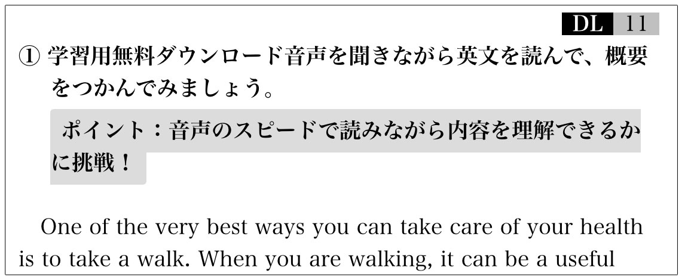
① 学習用無料ダウンロード音声を聞きながら、英文を読みます。なるべく1回で文の概要をつかみましょう。
学習のねらい ここでは、学習用無料ダウンロード音声（1分間に100ワード［100WPM］程度）のスピードで読んで、英文が理解できるかどうかを試します。最初のうちは100WPMで読むことを目標とし、通常の音声のスピードが遅く感じたり、慣れたりしたら「速読用音声」を利用してください。
＊「速読用音声」についてはこちらを参照してください。
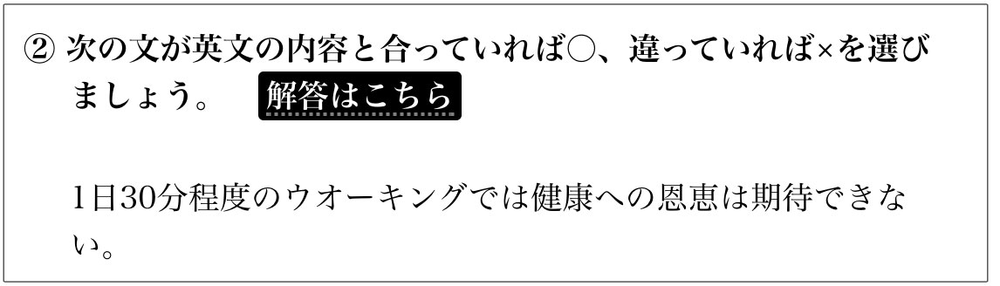
② 続いて、問題②で内容を理解しているか確認するための問題に答えます。
ROUND２
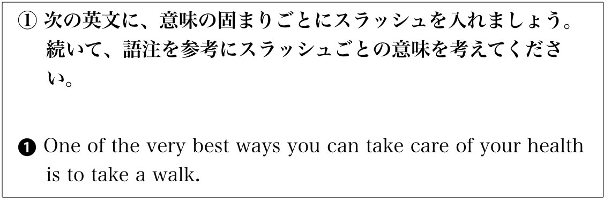
① 抜き出された英文にスラッシュを入れ、文の構造を確認します。続いて、語注を参考に、スラッシュごとの意味を考えてください。
学習のねらい 英文の固まりごとに理解していくコツがつかめます。
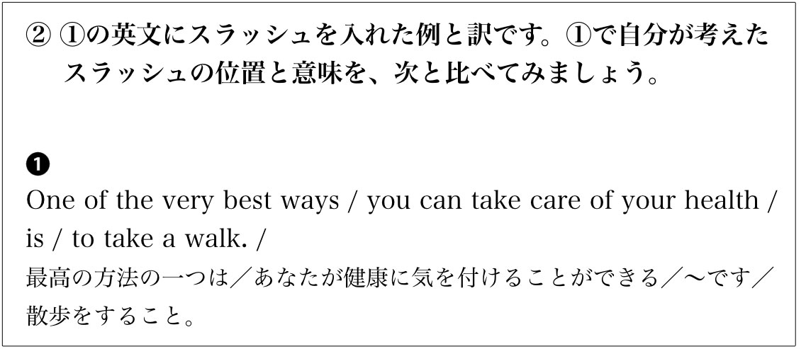
② 問題②で、スラッシュの位置とスラッシュごとの意味を確認しましょう。より大きなまとまりで区切るなど、同じ位置にスラッシュが入っていなくても、間違いというわけではありません。
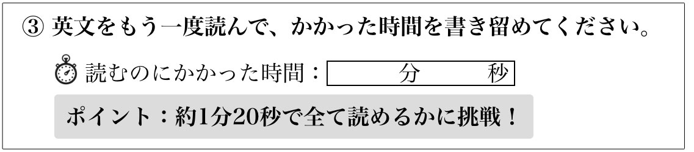
③ 時間を計りながら英文を読んで、かかった時間を書き留めます。
学習のねらい 時間を計って読むことで、自分がどのくらいのスピードで英文を読んでいるかが分かります。最初のうちは「ポイント」に書かれている時間（100WPM程度で読んだ場合にかかる時間）を目標にして、慣れてきたら、できるだけ速く読みながら、内容を理解するようにしてください。
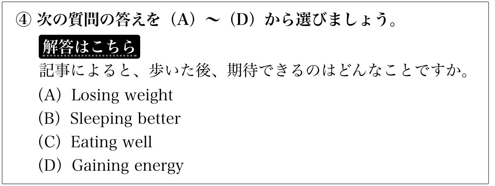
④ 続いて、内容を理解しているか確認するための問題に答えます。
ROUND３
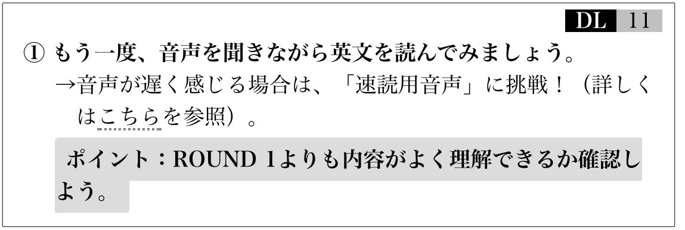
① もう一度、学習用無料ダウンロード音声を聞きながら英文を読みます。
学習のねらいROUND1 で読んだ時よりも、内容がより理解できるようになっているかどうかを確認します。
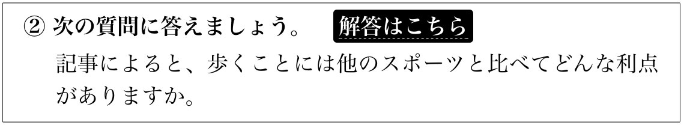
② 続いて、内容を理解しているか確認するための問題に答えます。
語数：137
難易度：★☆☆
エッセイ③
虹は何色？
虹を7色だと思っている人は多いですが、それは文化によっても違います。
ここでは「7色」派と「6色」派の異なる主張を紹介しています。
ROUND1
DL09
① 学習用無料ダウンロード音声を聞きながら英文を読んで、概要をつかんでみましょう。
ポイント：音声のスピードで読みながら内容を理解できるかに挑戦！
Most people believe that there are seven colors in a rainbow: red, orange, yellow, green, blue, indigo and violet. They are easy to remember if you think of a man named Roy G. Biv. On the other hand, some people say there are only six colors in a rainbow because indigo and violet are almost the same color. Those people sometimes say "purple" instead of indigo and violet. A natural rainbow is made up of almost all of the colors we know and even some other colors the human eye cannot see. A natural rainbow is one of the loveliest gifts of nature as it goes across the sky after it rains. Once in a long while, nature makes a special gift of a double rainbow. If you're really, really lucky, one day you may see one.
② 次の文が英文の内容と合っていれば○、違っていれば×を選びましょう。 解答はこちら
虹には人間の目には見えない色もある。
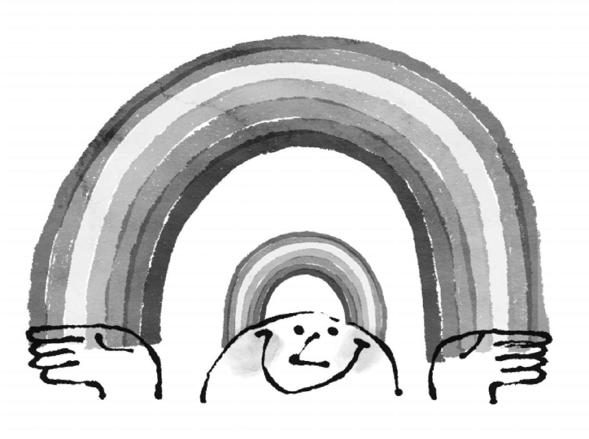
ROUND2
① 次の英文に、意味の固まりごとにスラッシュを入れましょう。続いて、語注を参考にスラッシュごとの意味を考えてください。
 They are easy to remember if you think of a man named Roy G. Biv.
They are easy to remember if you think of a man named Roy G. Biv.
On the other hand, some people say there are only six colors in a rainbow because indigo and violet are almost the same color.
 A natural rainbow is made up of almost all of the colors we know and even some other colors the human eye cannot see.
A natural rainbow is made up of almost all of the colors we know and even some other colors the human eye cannot see.
読み方のヒント
記号「:」は「コロン」と呼ばれるものです。ここではその直前の情報（seven colors in a rainbow）をred,orange,yellow,green,blue,indigo and violedと具体的に説明するために用いられています。「つまり」と訳してもよいでしょう。
□
語注
□indigo：藍色
□violet：すみれ色、青紫色
□man named ～：～という名前の男性
□Roy G. Biv：ロイ・G・ビブ ★虹の７色の頭文字を並べて作った架空の人名。Roy が名で、G.がミドルネーム、Biv が姓に当たる
□on the other hand：一方、それに対して
□be made up of 〜：〜から成る、〜で構成されている
□once in a long while：ごくまれに
□one day：いつか
② ①の英文にスラッシュを入れた例と訳です。①で自分が考えたスラッシュの位置と意味を、次と比べてみましょう。
They are easy to remember if you think of a man named Roy G. Biv. /
それらは簡単です 覚えるのは 思い浮かべれば 男性を ロイ・G・ビブという名前の。
On the other hand, / some people say there are only six colors in a rainbow because indigo and violet are almost the same color. /
それに対して ある人々は言います 6色しかないと 虹には なぜなら 藍色と青紫はほとんど同じ色だから。
A natural rainbow is made up of / almost all of the colors we know and even some other colors the human eye cannot see.
自然の虹は構成されています ほぼ全ての色で 私たちが知る そしてその他の色さえ 人間の目には見えない。
③ 英文をもう一度読んで、かかった時間を書き留めてください。
読むのにかかった時間：
ポイント：約1分25秒で全て読めるかに挑戦！
④ 次の質問の答えを（A）～（D）から選びましょう。
よほど運が良くないと見られないのはどんな虹ですか。
（A）A natural rainbow
（B）A long rainbow
（C）A circle rainbow
（D）A double rainbow
ROUND3
DL09
① もう一度、音声を聞きながら英文を読んでみましょう。
→音声が遅く感じる場合は、「速読用音声」に挑戦！（詳しくはこちらを参照）。
ポイント：ROUND 1よりも内容がよく理解できるか確認しよう。
② 次の質問に答えましょう。 解答はこちら
自然の虹が空に架かるのはどんな条件のときですか。
解答のヒント
＊R1②、R2③、R3②の問題のヒントは以下の部分です。
Most people believe that there are seven colors in a rainbow: red, orange, yellow, green, blue, indigo and violet. They are easy to remember if you think of a man named Roy G Biv. On the other hand, some people say there are only six colors in a rainbow because indigo and violet are almost the same color. Those people sometimes say "purple" instead of indigo and violet.R1A natural rainbow is made up of almost all of the colors we know and even some other colors the human eye cannot see. A natural rainbow is one of the loveliest gifts of nature asR3it goes across the sky after it rains.R2Once in a long while, nature makes a special gift of a double rainbow. If you're really, really lucky, one day you may see one.
□
解答
ROUND 1. ○
ROUND 2. (D)ROUND 3. 雨が降った後
ROUND 2の選択肢の訳
（A）自然の虹
（B）長い虹
（C）円形の虹
（D）二重の虹
□
訳
大抵の人は虹の中には7つの色があると考えています。つまり、赤、オレンジ、黄、緑、青、藍色、青紫です。それらはロイ・G・ビブという名前の男性を思い浮かべれば、覚えやすいです。それに対して、藍色と青紫はほとんど同じ色だから、虹には6色しかないと言う人もいます。そのような人たちは、藍色と青紫の代わりに「紫」と言うこともあります。R1自然の虹は、私たちが知るほぼ全ての色と人間の目には見えないその他の色からさえ構成されています。R3雨が降った後で空に掛かる自然の虹は、自然の最も美しい贈り物の一つです。R2ごくまれに、自然は二重の虹という特別な贈り物をしてくれます。 もしあなたがとてもとても幸運なら、いつか見ることがあるかもしれませんね。
語数：118
難易度：★★★
広告
今回は、新聞でよく見掛けるタイプの広告に挑戦します。
広告特有の表現や車に関する用語も登場するので、難易度は高めです。
ROUND1
DL10
① 学習用無料ダウンロード音声を聞きながら英文を読んで、概要をつかんでみましょう。
ポイント：音声のスピードで読みながら内容を理解できるかに挑戦！
FOR SALE：One used 2006 Alliance Spectro IV sport-utility vehicle (SUV). Price: $17,250 or best offer. This great four-wheel-drive car has comfortable seating for five, and plenty of space for carrying things. The Spectro IV is the most popular SUV ever. It can handle off-road conditions and city streets with the same ease, comfort and safety. It has had just one owner, who took loving care of it. And it has been driven less than 100,000 kilometers. Recent work includes tune-ups and repairs to brakes. It has a perfect paint job in a beautiful brick red color. No bodywork needed. See it and believe it! Call (555) 951-5555 or email randoy9877@zlazcom.com. Hurry. Cars like this are sold quickly.
② 次の文が英文の内容と合っていれば○、違っていれば×を選びましょう。 解答はこちら
広告の車はこれまでに複数の所有者の手を渡ってきた。
ROUND2
① 次の英文に、意味の固まりごとにスラッシュを入れましょう。続いて、語注を参考にスラッシュごとの意味を考えてください。
This great four-wheel-drive car has comfortable seating for five, and plenty of space for carrying things.
It can handle off-road conditions and city streets with the same ease, comfort and safety.
Cars like this are sold quickly.
読み方のヒント
No bodywork needed. は、No bodyworkis needed. が正しい形です。スペースが限られている記事の見出しや広告などでは、このように be 動詞が省略されることがよくあります。
□
語注
□sport-utility vehicle：スポーツ用多目的車 ★SUV はその略。vehicleは「車」の意味
□or best offer：または最高の付け値で、応相談 ★広告の決まり文句
□four-wheel-drive：四輪駆動の
□handle：～を扱う、～に対処する
□off-road：未舗装（道路）の、オフロードの
□with the same ease, comfort and safety：同じぐらい容易に、快適に、安全に ★ease は「簡単さ」、comfortは「快適さ」、safetyは「安全」の意味。with＋抽象名詞で「～で、～に」という副詞の意味になる
□loving：愛情のこもった ★take loving care of 〜 で「〜を大切に扱う」
□recent：最近の
□work：作業、修理
□tune-up：調整、チューンアップ
□repair：修理、修繕
□brake：ブレーキ
□paint job：塗装作業
□brick red color：赤れんが色
□bodywork：車体の修理
② ①の英文にスラッシュを入れた例と訳です。①で自分が考えたスラッシュの位置と意味を、次と比べてみましょう。
This great four-wheel-drive car has comfortable seating for five, and plenty of space for carrying things. /
この素晴らしい四輪駆動車には ゆったりした座席があります 5人用の それに十分なスペース 物を運搬するための。
It can handle / off-road conditions and city streets with the same ease, comfort and safety.
それは対処できます 未舗装の状況と街中の道路に 同じぐらい簡単に、快適に、安全に。
Cars like this are sold quickly. /
このような車は 売れます すぐに。
③ 英文をもう一度読んで、かかった時間を書き留めてください。
読むのにかかった時間：
ポイント：約1分15秒で全て読めるかに挑戦！
④ 次の質問の答えを（A）～（D）から選びましょう。
広告の車の特長として正しくないのはどれですか。
（A）It is a sport-utility vehicle.
（B）It has seating for five people.
（C）It needs some bodywork.
（D）It is a four-wheel-drive car.
ROUND3
DL10
① もう一度、音声を聞きながら英文を読んでみましょう。
→音声が遅く感じる場合は、「速読用音声」に挑戦！（詳しくはこちらを参照）。
ポイント：ROUND 1よりも内容がよく理解できるか確認しよう。
② 次の質問に答えましょう。 解答はこちら
広告の車に関心を持った人はどんな手段で連絡をすべきですか。
解答のヒント
＊R1②、R2③、R3②の問題のヒントは以下の部分です。
FOR SALE: One used 2006 Alliance Spectro IVR2sport-utility vehicle (SUV). Price: $17,250 or best offer.R2This great four-wheel-drive car has comfortable seating for five, and plenty of space for carrying things. The Spectro IV is the most popular SUV ever. It can handle off-road conditions and city streets with the same ease, comfort and safety.R1It has had just one owner, who took loving care of it. And it has been driven less than 100,000 kilometers. Recent work includes tune-ups and repairs to brakes. It has a perfect paint job in a beautiful brick red color.R2No bodywork needed. See it and believe it!R3Call (555) 951-5555 or email randoy9877@zlazcom.com. Hurry. Cars like this are sold quickly.
□
解答
ROUND 1. ×
ROUND 2. (C)ROUND 3. 電話またはメールで
ROUND 2の選択肢の訳
（A）それはスポーツ用多目的車だ。
（B）それには５人用の座席がある。
（C）いくらか車体の修理が必要だ。
（D）それは四輪駆動車だ。
□
訳
売ります：中古の2006年製の「アライアンス・スペクトロIV」R2スポーツ用多目的車（SUV）。価格：1万7250ドル、または最高の付け値で。R2この素晴らしい四輪駆動車には、５人用のゆったりした座席と物を運搬するための十分なスペースがあります。スペクトロIVはこれまでで最も人気のあるSUVです。未舗装の状況も街中の道路も、同じぐらい容易に、快適に、安全に対処することができます。R1一人の持ち主しかおらず、その人物はこの車を大切に扱いました。それに10万キロ未満の運転です。最近行われた作業には、チューンアップとブレーキ修理があります。美しい赤れんが色に完ぺきな塗装作業がなされています。R2車体の修理は必要ありません。 ご覧になれば信じていただけます！ R3(555) 951-5555に電話するか、randoy9877@zlazcom.com にメールをお送りください。お急ぎください。このような車はすぐに売れます。
語数：135
難易度：★★☆
記事②
散歩のススメ
今回は身近な健康の話題を取り上げた記事を読んでみましょう。
歩くことにはどのような恩恵が期待できるでしょうか。
ROUND1
DL11
① 学習用無料ダウンロード音声を聞きながら英文を読んで、概要をつかんでみましょう。
ポイント：音声のスピードで読みながら内容を理解できるかに挑戦！
One of the very best ways you can take care of your health is to take a walk. When you are walking, it can be a useful time to figure out how to deal with problems or just look around. You may notice interesting buildings or parks or businesses in your neighborhood. If you make a plan to walk 30 minutes a day, and do it every day, your heart will grow stronger. As well as that, your blood will flow better through your body, and that's good for your brain. Walking also helps get rid of stress and helps you relax. After walking, you'll sleep better. It is a much safer exercise than most sports, too. So what are you waiting for? Put on a pair of comfortable shoes and go for a walk!
② 次の文が英文の内容と合っていれば○、違っていれば×を選びましょう。 解答はこちら
1日30分程度のウオーキングでは健康への恩恵は期待できない。
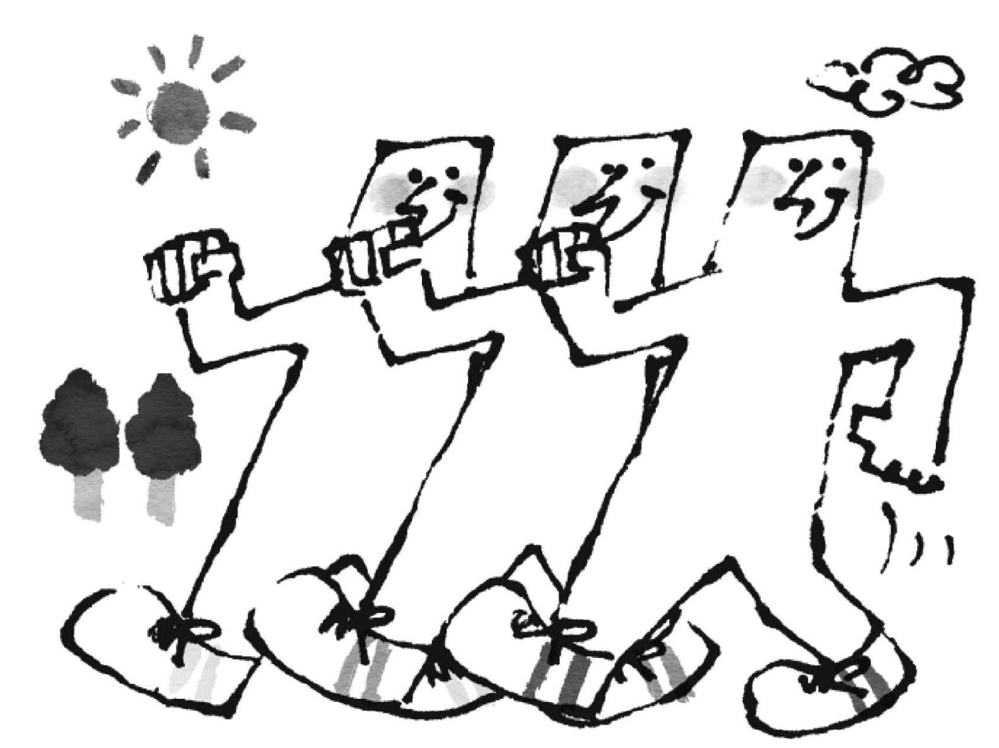
ROUND2
① 次の英文に、意味の固まりごとにスラッシュを入れましょう。続いて、語注を参考にスラッシュごとの意味を考えてください。
One of the very best ways you can take care of your health is to take a walk.
You may notice interesting buildings or parks or businesses in your neighborhood.
Put on a pair of comfortable shoes and go for a walk!
読み方のヒント
30 minutes a day の a は、「〜につき」の意味です。30 minutes a week なら「1週間につき30分」という意味になります。
□
語注
□very best：最高の
□figure out 〜：〜を考え出す、〜を見つけ出す
□how to ～（動詞の原形）：～する方法、どう～すべきか
□deal with：～に対処する
□business：商店
□neighborhood：近所
□make a plan to 〜（動詞の原形）：〜する計画を立てる
□get rid of 〜：〜を取り除く
□stress：ストレス、緊張
□help 〜 ...（動詞の原形）：〜が...するのを助ける
□relax：リラックスする、くつろぐ
□what are you waiting for?：何をぐずぐずしているのですか。 ★相手に行動を促す表現。直訳は「何を待っているのですか」
② ①の英文にスラッシュを入れた例と訳です。①で自分が考えたスラッシュの位置と意味を、次と比べてみましょう。
One of the very best ways you can take care of your health is to take a walk.
最高の方法の一つは あなたが健康に気を付けることができる 〜です 散歩をすること。
You may notice interesting buildings or parks or businesses in your neighborhood. /
あなたは気が付くかもしれません 興味深い建物 または公園 またはお店 あなたの近所に。
Put on / a pair of comfortable shoes and go for a walk!
履きましょう 1足の楽な靴を そして散歩に出掛けましょう！
③ 英文をもう一度読んで、かかった時間を書き留めてください。
読むのにかかった時間：
ポイント：約1分20秒で全て読めるかに挑戦！
④ 次の質問の答えを（A）～（D）から選びましょう。
記事によると、歩いた後、期待できるのはどんなことですか。
（A）Losing weight
（B）Sleeping better
（C）Eating well
（D）Gaining energy
ROUND3
DL11
① もう一度、音声を聞きながら英文を読んでみましょう。
→音声が遅く感じる場合は、「速読用音声」に挑戦！（詳しくはこちらを参照）。
ポイント：ROUND 1よりも内容がよく理解できるか確認しよう。
② 次の質問に答えましょう。 解答はこちら
記事によると、歩くことには他のスポーツと比べてどんな利点がありますか。
解答のヒント
＊R1②、R2③、R3②の問題のヒントは以下の部分です。
One of the very best ways you can take care of your health is to take a walk. When you are walking, it can be a useful time to figure out how to deal with problems or just look around. You may notice interesting buildings or parks or businesses in your neighborhood.R1If you make a plan to walk 30 minutes a day, and do it every day, your heart will grow stronger. As well as that, your blood will flow better through your body, and that's good for your brain. Walking also helps get rid of stress and helps you relax.R2After walking, you'll sleep better.R3It is a much safer exercise than most sports, too. So what are you waiting for? Put on a pair of comfortable shoes and go for a walk!
□
解答
ROUND 1. ×
ROUND 2. (B)ROUND 3. 安全である。
ROUND 2の選択肢の訳
（A）体重が減ること
（B）よく眠ること
（C）きちんと食事をすること
（D）活力を得ること
□
訳
健康に気を付けることができる最高の方法の一つが散歩をすることです。歩いていると、問題の対処法を見つけ出したり、ただ周りを見て回ったりするのに有益な時間となり得ます。近所にある興味深い建物や公園やお店に気が付くかもしれません。R11日30分歩く計画を立て、毎日それを実行すれば、心臓がより強くなるでしょう。 それだけでなく、血液が全身によく循環するようになり、脳にも良いのです。ウオーキングはストレスを取り除き、リラックスするのを助けます。R2歩いた後は、よく眠れるでしょう。R3大抵のスポーツよりはずっと安全でもあるのです。 さあ、何をぐずぐずしているのですか。楽な靴を履いて、散歩に出掛けましょう！
語数：150
難易度：★★★
記事③
書評
今回は書評記事を読んでみましょう。
評者はこの本について、どのような意見を持っているのでしょうか。
ROUND1
DL12
① 学習用無料ダウンロード音声を聞きながら英文を読んで、概要をつかんでみましょう。
ポイント：音声のスピードで読みながら内容を理解できるかに挑戦！
Book review："Speaking for Success: Skills That Bring Success in Business"
By Roger Rosen
Kipner Publishing, 322 pages
"Speaking for Success" is the latest book by self-styled "Success Guide" Roger Rosen. It promises to teach readers how to be more successful in business by getting their ideas across effectively. In this book, Rosen covers 16 areas, such as "Idea Building," "Thought Broadcasting" and "Vocabularies of Success."
Rosen tries hard to make his ideas and methods sound new. But in fact, they are all well-known. Rosen's books are popular partly because of his ability to make old ideas seem new. But he is also a very good teacher. He gives clear and effective explanations. If you are a young businessperson and are hoping to improve your language skills, this book is a good place to start. Do not expect, however, that it will guarantee success. You'll have to get that yourself.
② 次の文が英文の内容と合っていれば○、違っていれば×を選びましょう。 解答はこちら
『成功のための話し方』は、言語の技能を向上させる手始めに適した本である。
ROUND2
① 次の英文に、意味の固まりごとにスラッシュを入れましょう。続いて、語注を参考にスラッシュごとの意味を考えてください。
"Speaking for Success" is the latest book by self-styled "Success Guide" Roger Rosen.
It promises to teach readers how to be more successful in business by getting their ideas across effectively.
Rosen tries hard to make his ideas and methods sound new.
語注
□skill：技術
□publishing：出版（業）
□latest：最新の、最近の
□self-styled：自称の
□get 〜 across：〜を理解させる
□effectively：効果的に、効率的に
□make 〜 sound ...：〜が...に聞こえるようにする
□in fact：実際には
□well-known：よく知られた、有名な
□give explanation：説明をする
□businessperson：ビジネスパーソン ★性別に関係なく使うことができる
□improve：〜を向上させる
□a good place to start：手始めにもってこいの場
□however：けれども、しかしながら
□guarantee：〜を保証する
② ①の英文にスラッシュを入れた例と訳です。①で自分が考えたスラッシュの位置と意味を、次と比べてみましょう。
"Speaking for Success" is the latest book by self-styled "Success Guide" Roger Rosen.
『成功のための話し方』は最新書である 自称「成功案内人」ロジャー・ローゼンによる。
It promises to teach readers how to be more successful in business by getting their ideas across effectively.
それは約束する 読者に教えることを もっと成功する方法を ビジネスで 彼らのアイデアを理解させることによって 効果的に。
Rosen tries hard to make his ideas and methods sound new.
ローゼンは懸命に努力する 〜させようと 自分のアイデアと手法を 新しく聞こえる。
③ 英文をもう一度読んで、かかった時間を書き留めてください。
読むのにかかった時間：
ポイント：約1分30秒で全て読めるかに挑戦！
④ 次の質問の答えを（A）～（D）から選びましょう。
著者ローゼン氏について述べられていることはどれですか。
（A）He is a new writer.
（B）He is an excellent leader.
（C）He is a young businessperson.
（D）He is a good teacher.
By Roger Rosen
Kipner Publishing, 322 pages
"Speaking for Success" is the latest book by self-styled "Success Guide" Roger Rosen. It promises to teach readers how to be more successful in business by getting their ideas across effectively. In this book, Rosen covers 16 areas, such as "Idea Building," "Thought Broadcasting" and "Vocabularies of Success."
Rosen tries hard to make his ideas and methods sound new. But in fact,R3they are all well-known. Rosen's books are popular partly because of his ability to make old ideas seem new. ButR2he is also a very good teacher. He gives clear and effective explanations.R1If you are a young businessperson and are hoping to improve your language skills, this book is a good place to start. Do not expect, however, that it will guarantee success. You'll have to get that yourself.
□
解答
ROUND 1. ○
ROUND 2. (D)ROUND 3. 全てよく知られている。
ROUND 2の選択肢の訳
（A）彼は新しい作家である。
（B）彼は優れたリーダーである。
（C）彼は若いビジネスパーソンである。
（D）彼は良い教師である。
□
訳
書評：『成功のための話し方：ビジネスに成功をもたらす技術』
ロジャー・ローゼン著
キプナー出版、322ページ
『成功のための話し方』は、自称「成功案内人」ロジャー・ローゼンによる最新書である。それは、自分のアイデアを効果的に理解させることによって、ビジネスでもっと成功する方法を読者に教えることを約束する。この本の中で、ローゼンは「アイデアの構築」「考えの発信」「成功の語彙」といった16の分野を取り上げている。
ローゼンは自分のアイデアと手法が目新しく聞こえるようにしようと懸命に努力している。しかし実際には、R3それらは全てよく知られている。ローゼンの著書が人気を博している理由の一つには、古い考えを新しく見せる彼の能力がある。しかしながらR2彼は非常に優れた教師でもある。彼は分かりやすく効果的な説明をする。R1もしあなたが若いビジネスパーソンで言語の技能を向上させたいと思っているのなら、この本は手始めにもってこいである。しかし、成功を保証してくれるだろうとは期待しないように。それは自分自身で獲得しなくてはならない。
語数：114
難易度：★★☆
エッセイ④
ラベンダー
今回は短めのエッセイを読んでみましょう。
日本でも人気の高いハーブ、「ラベンダー」。その楽しみ方や役立て方を紹介しています。
ROUND1
DL13
① 学習用無料ダウンロード音声を聞きながら英文を読んで、概要をつかんでみましょう。
ポイント：音声のスピードで読みながら内容を理解できるかに挑戦！
Lavender is not just a beautiful flower with a wonderful smell. It looks very nice in gardens but also has many uses in the kitchen and the bathroom. Lavender flowers and lavender oil can be used in salads and cakes. And the honey from lavender flowers is especially delicious. Lavender is also used in soaps and shampoos.
Lavender also has medical uses. It is used for insect bites, burns and headaches. Many people believe that if we put lavender flowers in our pillows or drink lavender tea before bed, we will be able to relax and sleep deeply. If you are feeling nervous, try drinking some lavender tea. It might help you feel better.
② 次の文が英文の内容と合っていれば○、違っていれば×を選びましょう。 解答はこちら
ラベンダーは幅広く用いられているが、食用には向かない。
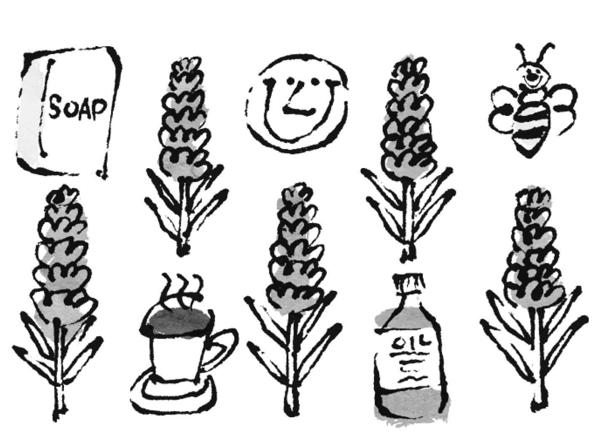
ROUND2
① 次の英文に、意味の固まりごとにスラッシュを入れましょう。続いて、語注を参考にスラッシュごとの意味を考えてください。
It looks very nice in gardens but also has many uses in the kitchen and the bathroom.
And the honey from lavender flowers is especially delicious.
Many people believe that if we put lavender flowers in our pillows or drink lavender tea before bed, we will be able to relax and sleep deeply.
語注
□lavender：ラベンダー ★香りと紫色の花が特徴的なシソ科の植物
□insect bite：虫刺され
□burn：やけど
□headache：頭痛
□before bed：就寝前に
② ①の英文にスラッシュを入れた例と訳です。①で自分が考えたスラッシュの位置と意味を、次と比べてみましょう。
It looks very nice in gardens but also has many uses in the kitchen and the bathroom.
それはとてもきれいに見えます 庭では しかしまたたくさんの使い道があります 台所やバスルームでも。
And the honey from lavender flowers is especially delicious.
そしてラベンダーの花から取った蜂蜜は 特においしいです。
Many people believe that if we put lavender flowers in our pillows or drink lavender tea before bed, we will be able to relax and sleep deeply. /
多くの人が信じています もしラベンダーの花を入れれば 枕に、 またはラベンダー茶を飲めば 就寝前に、 私たちはできるようになるだろうと リラックスしてぐっすり眠る。
③ 英文をもう一度読んで、かかった時間を書き留めてください。
読むのにかかった時間：
ポイント：約1分10秒で全て読めるかに挑戦！
④ 次の質問の答えを（A）～（D）から選びましょう。
ROUND3
DL13
① もう一度、音声を聞きながら英文を読んでみましょう。
→音声が遅く感じる場合は、「速読用音声」に挑戦！（詳しくはこちらを参照）。
ポイント：ROUND 1よりも内容がよく理解できるか確認しよう。
② 次の質問に答えましょう。 解答はこちら
落ち着かない気分のときには、どうすることが勧められていますか。
解答のヒント
＊R1②、R2③、R3②の問題のヒントは以下の部分です。
Lavender is not just a beautiful flower with a wonderful smell. It looks very nice in gardens but also has many uses in the kitchen and the bathroom.R1Lavender flowers and lavender oil can be used in salads and cakes. And the honey from lavender flowers is especially delicious. Lavender is also used in soaps and shampoos.
Lavender also has medical uses.R2It is used for insect bites, burns and headaches. Many people believe that if we put lavender flowers in our pillows or drink lavender tea before bed, we will be able to relax and sleep deeply.R3If you are feeling nervous, try drinking some lavender tea. It might help you feel better.
□
解答
ROUND 1. ×
ROUND 2. (A)ROUND 3. ラベンダー茶を飲むこと
ROUND 2の選択肢の訳
（A）風邪 （B）虫刺され （C）やけど （D）頭痛
□
訳
ラベンダーは素晴らしい香りがするただの美しい花ではありません。それは庭ではとてもきれいに見えますが、台所やバスルームでもたくさんの使い道があります。R1ラベンダーの花とラベンダーオイルは、サラダやケーキに用いることができます。そしてラベンダーの花から取った蜂蜜は特においしいです。ラベンダーはせっけんやシャンプーにも用いられます。
ラベンダーには医学的な用途もあります。R2それは虫刺されや、やけど、頭痛に用いられます。 多くの人が、ラベンダーの花を枕に入れるか、就寝前にラベンダー茶を飲めば、リラックスしぐっすり眠ることができると信じています。R3あなたが落ち着かない気分なら、ラベンダー茶を飲んでみてください。 楽な気持ちになるのを助けてくれるかもしれませんよ。
語数：165
難易度：★★☆
告知
今回はイベントの告知に挑戦します。
参加者になったつもりで、申し込みに必要な情報を収集しましょう。
ROUND1
DL14
① 学習用無料ダウンロード音声を聞きながら英文を読んで、概要をつかんでみましょう。
ポイント：音声のスピードで読みながら内容を理解できるかに挑戦！
Get ready! Get set! ... Have fun!
Join in the 20th Annual Fun Run for Children July 18 at Bayfront Stadium
The fun begins at 10:00 a.m.
Get your body in shape and help raise money for needy children around the world. This event is for anyone who loves fresh air, sunshine and the good feeling of helping others.
Program includes:
5-Kilometer Walk for Children
5-Kilometer Run for Children
10-Kilometer Run for Children
Visit us on the web (www.afrcfunrun.com) to sign up. Then have all your friends promise to be your sponsors and pay $1, $5, $10 or more per kilometer that you walk or run. All of the money raised goes directly to Children's Global Help (CGH). CGH provides poor children around the world with food, medicine and safe drinking water.
Don't have time to sign up? No problem! Just put on your running shoes and be at Bayfront Stadium at 9:30 a.m. on July 18. You'll be matched with sponsors and ready to go.
② 次の文が英文の内容と合っていれば○、違っていれば×を選びましょう。 解答はこちら
このイベントの目的は、困窮している子どもたちのためにお金を集めることである。
ROUND2
① 次の英文に、意味の固まりごとにスラッシュを入れましょう。続いて、語注を参考にスラッシュごとの意味を考えてください。
This event is for anyone who loves fresh air, sunshine and the good feeling of helping others.
Then have all your friends promise to be your sponsors and pay $1, $5, $10 or more per kilometer that you walk or run.
All of the money raised goes directly to Children's Global Help (CGH).
語注
□get ready：準備をする ★競技の場ではスタート時の「位置について」の意味で使われる
□get set：準備をする ★競技の場では、スタート前の掛け声「用意」の意味で使われる
□have fun：楽しむ
□join in 〜：〜に参加する
□annual：年に一度の、毎年恒例の
□fun run：市民参加マラソン
□get 〜 in shape：〜の調子を整える、〜を鍛える
□raise money：金を集める
□needy：困窮している、貧しい
□program：予定、日程
□5-kilometer：5キロの ★5とkilometerをハイフンでつなぐと、「5キロの」という意味の形容詞になる。10-kilometerも同様
□sign up：登録する、申し込む
□have ～ ... （動詞の原形）：～に...させる
□sponsor：スポンサー、身元引受人
□per：〜につき、〜ごとに
□global：地球規模の、国際的な
□provide 〜 with ...：〜に...を供給する、〜に...を与える
□match 〜 with ...：〜と...（の仲）を取り持つ、〜を...と組み合わせる
② ①の英文にスラッシュを入れた例と訳です。①で自分が考えたスラッシュの位置と意味を、次と比べてみましょう。
This event is for anyone who loves fresh air, sunshine and the good feeling of helping others.
このイベントは〜です あらゆる人のための 新鮮な空気を愛する 日光 そして良い気分 人を助ける。
Then have all your friends promise to be your sponsors and pay $1, $5, $10 or more per kilometer that you walk or run.
それから、 全てのあなたの友人に約束させてください あなたのスポンサーになることを そして1ドル、5ドル、10ドル、もしくはそれ以上を払うことを 1キロごとに あなたが歩くか走る。
All of the money raised goes directly / to Children's Global Help (CGH). /
全てのお金は 集められた 直接行きます 子ども国際援助（CGH）へ。
③ 英文をもう一度読んで、かかった時間を書き留めてください。
読むのにかかった時間：
ポイント：約1分45秒で全て読めるかに挑戦！
④ 次の質問の答えを（A）～（D）から選びましょう。
ROUND3
DL14
① もう一度、音声を聞きながら英文を読んでみましょう。
→音声が遅く感じる場合は、「速読用音声」に挑戦！（詳しくはこちらを参照）。
ポイント：ROUND 1よりも内容がよく理解できるか確認しよう。
② 次の質問に答えましょう。 解答はこちら
子ども国際援助（CGH）は貧しい子どもたちに何を与えますか。
解答のヒント
＊R1②、R2③、R3②の問題のヒントは以下の部分です。
Get ready! Get set! ... Have fun!
Join in the 20th Annual Fun Run for Children
July 18 at Bayfront Stadium
The fun begins at 10:00 a.m.
Get your body in shape andR1help raise money for needy children around the world. This event is for anyone who loves fresh air, sunshine and the good feeling of helping others.
Program includes:
5-Kilometer Walk for Children
5-Kilometer Run for Children
10-Kilometer Run for Children
Visit us on the web (www.afrcfunrun.com) to sign up. Then have all your friends promise to be your sponsors and pay $1, $5, $10 or more per kilometer that you walk or run. All of the money raised goes directly to Children's Global Help (CGH).R3CGH provides poor children around the world with food, medicine and safe drinking water.
Don't have time to sign up? No problem!R2Just put on your running shoes and be at Bayfront Stadium at 9:30 a.m. on July 18. You'll be matched with sponsors and ready to go.
□
解答
ROUND 1. ○
ROUND 2. (B)ROUND 3. 食料、薬、安全な飲み水
ROUND 2の選択肢の訳
（A）お金 （B）ランニングシューズ （C）タオル （D）水
□
訳
位置について！ 用意！...楽しもう！
第20回毎年恒例子どもマラソンに参加を
7月18日 ベイフロント競技場にて
お楽しみは午前10時に始まります
体を鍛え、R1世界中の困窮した子どもたちのためにお金を集めるのを助けましょう。このイベントは、新鮮な空気と日光と人を助けることによるいい気分が大好きなあらゆる人のためのものです。
プログラムには次のようなものがあります：
子ども5キロウオーク
子ども5キロマラソン
子ども10キロマラソン
われわれのウェブサイト（www.afrcfunrun.com）にアクセスし、登録してください。そして、全ての友人に、あなたのスポンサーになって、あなたが1キロ歩くか走るごとに、1ドル、5ドル、10ドル、もしくはそれ以上を払うことを約束してもらってください。集められたお金は全額、子ども国際援助（CGH）へ直接行きます。R3CGH は世界中の貧しい子どもたちに食料や薬、安全な飲み水を供給します。
登録する時間がない？ 問題ありません！ R2ランニングシューズを履いて、7月18日の午前9時半にベイフロント競技場にお越しください。 あなたはスポンサーと組まされ、出走する準備が整います。
語数：140
難易度：★★☆
記事④
秘境の国ブータン
今回は多くの旅人を魅了する国、ブータンを紹介する記事を読んでみましょう。
ブータンの魅力とはどんなところにあるのでしょうか。
ROUND1
DL15
① 学習用無料ダウンロード音声を聞きながら英文を読んで、概要をつかんでみましょう。
ポイント：音声のスピードで読みながら内容を理解できるかに挑戦！
Bhutan is a small, interesting country that lies between China and India. As of 2014, its king was only 34 years old. Fewer than one million people live in Bhutan. It is not a rich country in terms of money, but in 2006,Business Week magazine rated Bhutan as the happiest country in Asia. Bhutan has a policy of Gross National Happiness. The idea is that the happiness of the people is more important than making a lot of money. Bhutan plans to become the first country in the world to do 100 percent organic farming.
There are many unusual animals living in Bhutan's beautiful forests and mountains. Many tourists want to visit Bhutan, but because of Bhutan's "High Value, Low Impact" policy, tourists must book their tours through particular travel agencies. This helps to protect Bhutan's nature and culture.
② 次の文が英文の内容と合っていれば○、違っていれば×を選びましょう。 解答はこちら
ブータンは小さい国だが、経済的には豊かである。
ブータンの子どもたち。国王結婚式のリハーサルにて。
写真：AP/アフロ
ROUND2
① 次の英文に、意味の固まりごとにスラッシュを入れましょう。続いて、語注を参考にスラッシュごとの意味を考えてください。
The idea is that the happiness of the people is more important than making a lot of money.
Bhutan plans to become the first country in the world to do 100 percent organic farming.
Many tourists want to visit Bhutan, but because of Bhutan's "High Value, Low Impact" policy, tourists must book their tours through particular travel agencies.
語注
□as of 〜：〜時点で
□in terms of 〜：〜の観点では、〜の点では
□rate 〜 as ...：〜を...と評価する、〜を...と見なす
□Gross National Happiness：国民総幸福量 ★国の経済規模を測るGross National Product（国民総生産、GNP）に対し、精神的な豊かさを基に国民全体の幸福度を示すっもの。ブータンはその拡大を政策に掲げている
□the idea is that 〜：それは〜ということである
□the people：その国民 ★ここでの people は「国民」の意味
□organic farming：有機農業、有機農法
□unusual：珍しい、変わった
□"High Value, Low Impact" policy：「高価格、低負荷」政策 ★ブータンの観光政策。高額な旅行先となることで観光客の数を制限し、国外からの影響を抑えようというもの
□book：〜を予約する
□particular：特定の
□travel agency：旅行代理店
② ①の英文にスラッシュを入れた例と訳です。①で自分が考えたスラッシュの位置と意味を、次と比べてみましょう。
The idea is that the happiness of the people is more important than making a lot of money. /
それは〜です 幸福は 国民の もっと重要である お金をたくさんかせぐことよりも。
Bhutan plans / to become the first country in the world to do 100 percent organic farming.
ブータンは計画しています 初めての国になることを 世界で 行う 完全有機農業を。
Many tourists want to visit Bhutan, but because of Bhutan's "High Value, Low Impact" policy, tourists must book their tours through particular travel agencies. /
多くの観光客が思っています ブータンを訪れたいと しかし、ブータンの「高価格、低負荷」政策のため、 観光客は旅行を予約しなくてはなりません 特定の旅行代理店を通じて。
③ 英文をもう一度読んで、かかった時間を書き留めてください。
読むのにかかった時間：
ポイント：約1分25秒で全て読めるかに挑戦！
④ 次の質問の答えを（A）～（D）から選びましょう。
ブータンのことを「アジアで最も幸福な国」と評価したのは、次のどれですか？
（A）A newspaper
（B）A bank
（C）A magazine
（D）A travel agency
ROUND3
DL15
① もう一度、音声を聞きながら英文を読んでみましょう。
→音声が遅く感じる場合は、「速読用音声」に挑戦！（詳しくはこちらを参照）。
ポイント：ROUND 1よりも内容がよく理解できるか確認しよう。
② 次の質問に答えましょう。 解答はこちら
ブータンが国を挙げて取り組んでいるのはどんな農業ですか。
解答のヒント
＊R1②、R2③、R3②の問題のヒントは以下の部分です。
Bhutan is a small, interesting country that lies between China and India. As of 2014, its king was only 34 years old. Fewer than one million people live in Bhutan.R1It is not a rich country in terms of money, but in 2006,R2Business Week magazine rated Bhutan as the happiest country in Asia. Bhutan has a policy of Gross National Happiness. The idea is that the happiness of the people is more important than making a lot of money.R3Bhutan plans to become the first country in the world to do 100 percent organic farming.
There are many unusual animals living in Bhutan's beautiful forests and mountains. Many tourists want to visit Bhutan, but because of Bhutan's "High Value, Low Impact" policy, tourists must book their tours through particular travel agencies. This helps to protect Bhutan's nature and culture.
□
解答
ROUND 1. ×
ROUND 2. (C)ROUND 3. （完全）有機農業
ROUND 2の選択肢の訳
（A）新聞 （B）銀行 （C）雑誌 （D）旅行代理店
□
訳
ブータンは、中国とインドの間にある、小さくて興味深い国です。2014年の時点で、その国王はまだ34歳でした。ブータンには100万人に満たない人々が暮らしています。R1お金という観点では豊かな国ではありませんが、2006年、R2『ビジネス・ウィーク』誌はブータンをアジアで最も幸福な国と評価しました。ブータンには国民総幸福量という政策があります。それは、国民の幸福はお金をたくさんかせぐことよりもっと重要だということなのです。R3ブータンは、完全有機農業を行う世界で初めての国になろうと計画しています。
ブータンの美しい森や山には多くの珍しい動物が生息しています。多くの観光客がブータンを訪れたいと思っていますが、ブータンの「高価格、低負荷」政策のため、観光客は特定の旅行代理店を通じて旅行を予約しなくてはなりません。これはブータンの自然と文化を保護することに役立っています。
CHAPTER 3
第３章
第3章・4章の学習手順
第3章・4章では、時間を計りながら英文を読む練習をします。そうすることで、自分がどれだけのスピードで英文を読めるかが分かります。さらに、もう一度時間を計って同じ英文を読み、より速く読めるかに挑戦してください。
ROUND１
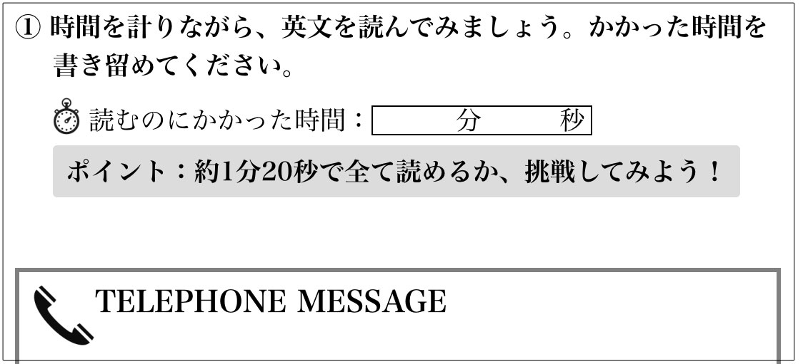
① 時間を計りながら英文を読んで、かかった時間を書き留めます。なるべく1回で文の概要をつかみましょう。
学習のねらい 時間を計って読むことで、自分がどのくらいのスピードで英文を読んでいるかが分かります。最初のうちは「ポイント」に書かれている時間（1分間100ワード［100WPM］程度で読んだ場合にかかる時間）を目標にして、慣れてきたら、できるだけ速く読みながら、内容を理解するようにしてください。
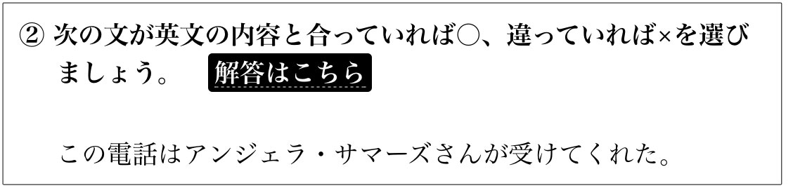
② 続いて、内容を理解しているか確認するための質問に答えます。
ROUND２
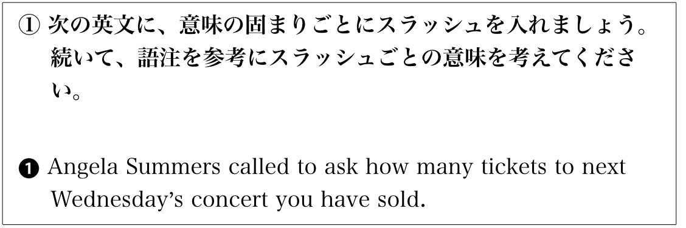
① 抜き出された文にスラッシュを入れ、文構造を確認します。続いて、語注を参考に、スラッシュごとの意味を考えてください。
学習のねらい 英文の固まりごとに理解していくコツがつかめます。
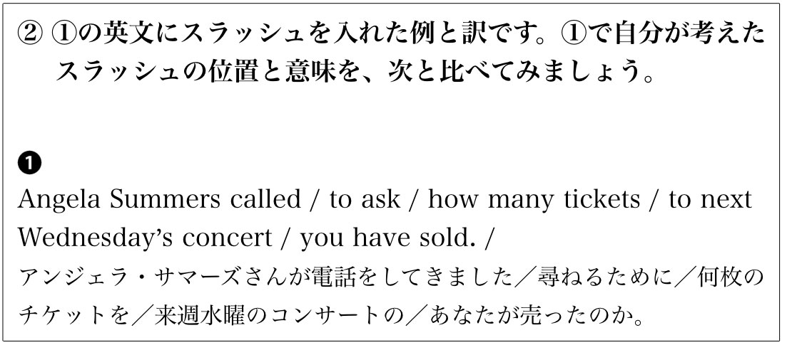
② 問題②で、スラッシュの位置とスラッシュごとの意味を確認しましょう。ただし、より大きなまとまりで区切るなど、同じ位置にスラッシュが入っていなくても、間違いというわけではありません。
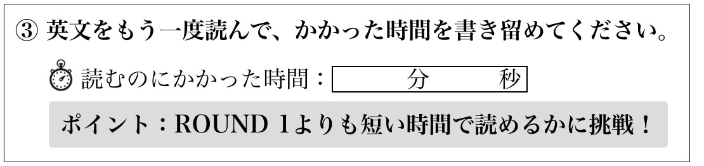
③ もう一度、時間を計りながら英文を読んで、かかった時間を書き留めます。
学習のねらいROUND1 で読んだ時よりも、短い時間で読めるかに挑戦します。
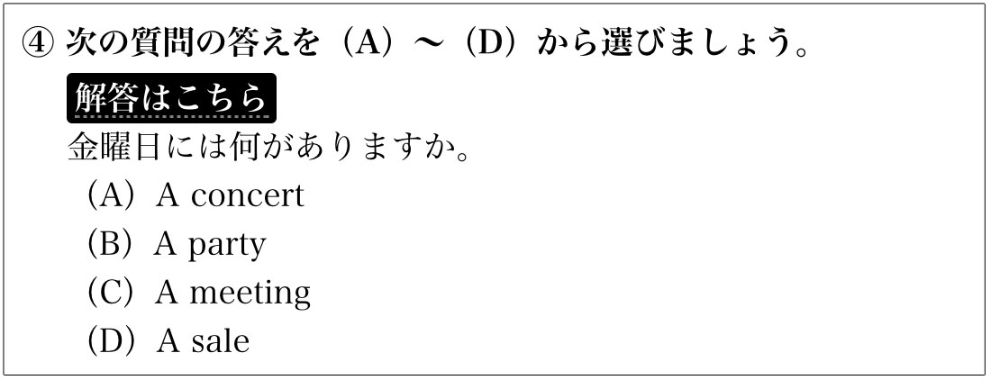
④ 続いて、内容を理解しているか確認するための問題に答えます。
ROUND３
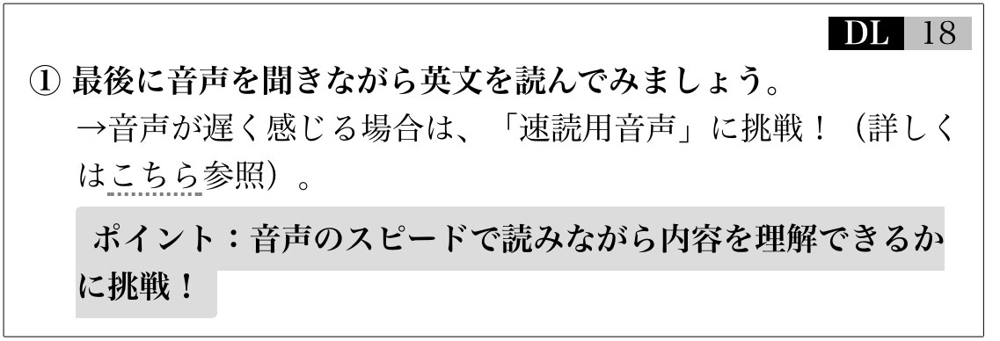
① 学習用無料ダウンロード音声を聞きながら、英文を読みます。
学習のねらい ここでは、学習用無料ダウンロード音声（100WPM程度）のスピードで読んで、英文が理解できるかどうかを試します。最初のうちは100WPM程度で読むことを目標とし、通常の音声のスピードが遅く感じたり、慣れたりしたら下記の「速読用音声」を利用してください。
＊「速読用音声」についてはこちらを参照してください。
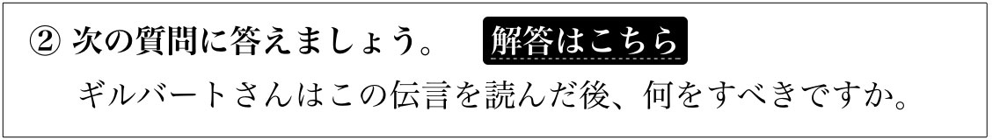
②続いて、内容を理解しているか確認するための問題に答えます。
語数：187
難易度：★★★
メール③
採用面接
今回はビジネスメールに挑戦します。
語数や語彙に臆することなく、スピーディーに読み進めていきましょう。
ROUND1
① 時間を計りながら、英文を読んでみましょう。かかった時間を書き留めてください。
読むのにかかった時間：
ポイント：約1分55秒で全て読めるか、挑戦してみよう！
To: Helen Smith
From: Tom Masterson, Personnel Manager, Tri-City Insurance
Subject: Assistant Account Manager Position
Thank you for applying for the position of Assistant Account Manager. We believe that your education and work experience are well suited to the position and invite you to move forward to the next step in the process.
We would like to meet with you to discuss the possibility that you might be the right person for the job. Will you be available for 90 minutes next Tuesday or Wednesday afternoon between noon and 5:00 P.M.? We would like to hear from you as soon as possible. You will be asked to answer some questions in writing and meet with our Human Capital Team to discuss your abilities.
We have chosen your application along with several others. We expect that we will be able to make a final decision two to three days after we meet with everyone. We will let you know within one week of your interview whether you have been chosen for the position.
We look forward to meeting you in person.
Sincerely,
Tom Masterson
Personnel Manager
Tri-City Insurance
② 次の文が英文の内容と合っていれば○、違っていれば×を選びましょう。 解答はこちら
スミスさんは、トライシティ保険の従業員である。
ROUND2
① 次の英文に、意味の固まりごとにスラッシュを入れましょう。続いて、語注を参考にスラッシュごとの意味を考えてください。
We would like to meet with you to discuss the possibility that you might be the right person for the job.
Will you be available for 90 minutes next Tuesday or Wednesday afternoon between noon and 5:00 P.M.?
We expect that we will be able to make a final decision two to three days after we meet with everyone.
読み方のヒント
let you know は「あなたに知らせる」という意味です。「人に〜させる」という意味の「let＋人＋動詞の原形 」の形になっています。
□
語注
□personnel manager：人事部長
□insurance：保険
□assistant account manager：副経理部長
□position：立場、身分 ★ここでは「職（位）」の意味
□apply for 〜：〜に申し込む、〜に応募する
□education：教育、教養
□work experience：職歴
□be suited to 〜：〜に適している
□move forward to 〜：〜へと進む
□process：過程、プロセス
□discuss：〜について話し合う
□available：会うことができる、話をする時間がある
□human capital：人的資源、人材
□ability：能力 ★abilities は複数形
□application：申込（書）、応募（書類）
□along with 〜：〜と一緒に、〜と共に
□within：〜以内に
□interview：面接、面会
□whether：〜かどうか
□look forward to -ing：〜するのを楽しみにする
□in person：じかに ★ここでは本人に直接会うことを意味している
□sincerely：心から、誠実に ★手紙やメールの結びの言葉として用いられるときは、「敬具」「よろしくお願いします」ぐらいの意味
② ①の英文にスラッシュを入れた例と訳です。①で自分が考えたスラッシュの位置と意味を、次と比べてみましょう。
We would like to meet with you to discuss the possibility that you might be the right person for the job. /
われわれは思います あなたにお会いしたいと 可能性について話し合うために あなたがふさわしい人物かもしれないという その仕事に。
Will you be available / for 90 minutes next Tuesday or Wednesday afternoon between noon and 5:00 P.M.?
お時間はありますか 90分 来週の火曜の または水曜の午後、 正午から午後5時の間で。
We expect that we will be able to make a final decision two to three days after we meet with everyone. /
われわれは予想します われわれはできるだろうと 最終決定を下すことが 2、3日で われわれが全員とお会いした後。
③ 英文をもう一度読んで、かかった時間を書き留めてください。
読むのにかかった時間：
ポイント：ROUND 1よりも短い時間で読めるかに挑戦！
④ 次の質問の答えを（A）～（D）から選びましょう。
マスターソンさんは何を望んでいますか。
（A）To apply for a job
（B）To meet with Ms. Smith
（C）To answer some questions
（D）To become a manager
ROUND3
DL16
① 最後に音声を聞きながら英文を読んでみましょう。
→音声が遅く感じる場合は、「速読用音声」に挑戦！（詳しくはこちら参照）。
ポイント：音声のスピードで読みながら内容を理解できるかに挑戦！
② 次の質問に答えましょう。 解答はこちら
スミスさんは面接からどれぐらいで結果を知らされますか。
解答のヒント
＊R1②、R2③、R3②の問題のヒントは以下の部分です。
R1To: Helen Smith
From: Tom Masterson, Personnel Manager, Tri-City Insurance
Subject: Assistant Account Manager Position
Thank you for applying for the position of Assistant Account Manager. We believe that your education and work experience are well suited to the position and invite you to move forward to the next step in the process.
R2We would like to meet with you to discuss the possibility that you might be the right person for the job. Will you be available for 90 minutes next Tuesday or Wednesday afternoon between noon and 5:00 P.M.? We would like to hear from you as soon as possible. You will be asked to answer some questions in writing and meet with our Human Capital Team to discuss your abilities.
We have chosen your application along with several others. We expect that we will be able to make a final decision two to three days after we meet with everyone.R3We will let you know within one week of your interview whether you have been chosen for the position.
We look forward to meeting you in person.
Sincerely,
Tom Masterson
Personnel Manager
Tri-City Insurance
□
解答
ROUND 1. ×
ROUND 2. （B）
ROUND 3. 1週間以内
ROUND 2の選択肢の訳
（A）仕事に応募すること
（B）スミスさんと会うこと
（C）質問に答えること
（D）部長になること
□
訳
R1宛先：ヘレン・スミス
送信者：トム・マスターソン、人事部長、トライシティ保険
件名：経理部次長の職
経理部次長の職にご応募いただきありがとうございます。あなたの教養と職歴は、職位に大変適していると思いますので、（選考）過程における次なる段階へと進んでいただきたいと存じます。
R2あなたがその仕事にふさわしい人物であるかもしれないという可能性について話し合うために、われわれはあなたにお会いしたいと思います。 来週の火曜か水曜の午後、正午から午後5時の間で、90分お時間はございますか。なるべく早くお返事をいただければ幸いです。筆記でいくつかの質問に答え、あなたの能力について話をするため、われわれの人材チームと面談していただくことになるでしょう。
われわれは、ほか数名の方の書類と共にあなたの応募書類を選びました。われわれが全員とお会いした後２、３日で最終決定を下すことができると思います。R3あなたの面接から１週間以内に、あなたがその職に選ばれたかどうかをお知らせします。
直接お会いするのを楽しみにしております。
敬具
トム・マスターソン
人事部長
トライシティ保険
語数：146
難易度：★★☆
製品ラベル
今回は薬のラベルを読んでみましょう。
用法や注意事項など、重要度の高い情報は特に細部まで読み取ってください。
ROUND1
① 時間を計りながら、英文を読んでみましょう。かかった時間を書き留めてください。
読むのにかかった時間：
ポイント：約1分30秒で全て読めるか、挑戦してみよう！
Colderan: Good Medicine for Your Cold
Uses:
Colderan cold medicine helps with the following problems caused by the common cold:
-runny nose
-sneezing
-throat pain
-headache
-fever
Important:
1. When you take Colderan, you may become sleepy or tired. Do not drink alcohol or take other drugs when you are using Colderan. Be careful when you drive or use dangerous machines. Sleepiness may cause accidents.
2. Never use Colderan to help you or a child get to sleep.
Directions:
Take Colderan every four to six hours if needed. Do not take Colderan more than six times in 24 hours. Do not take more than two tablets in four hours.
Amounts to take:
| Adults and children 12 years and older | 1 or 2 pills, as needed |
| Children ages 6 to 11 | 1 pill |
| Children ages 5 and younger | Do not use |
For more safety information, visit Colderan.com.
② 次の文が英文の内容と合っていれば○、違っていれば×を選びましょう。 解答はこちら
これは胃薬のラベルである。
ROUND2
① 次の英文に、意味の固まりごとにスラッシュを入れましょう。続いて、語注を参考にスラッシュごとの意味を考えてください。
Do not drink alcohol or take other drugs when you are using Colderan.
Never use Colderan to help you or a child get to sleep.
Take Colderan every four to six hours if needed.
語注
□following：以下の、次の
□common cold：風邪
□runny nose：鼻水
□sneezing：くしゃみ
□throat：喉
□headache：頭痛
□fever：熱、発熱
□alcohol：酒、アルコール
□drug：薬、薬品
□sleepiness：眠気、睡魔
□get to sleep：寝つく、眠りにつく
□every：（数と共に用いて）〜おきに
□if needed：必要に応じて
□tablet：錠剤
□pill：錠剤、丸薬
□as needed：必要に応じて
② ①の英文にスラッシュを入れた例と訳です。①で自分が考えたスラッシュの位置と意味を、次と比べてみましょう。
Do not drink alcohol or take other drugs when you are using Colderan. /
アルコールを飲んだりしないでください 他の薬を服用したり あなたがコールダランを服用しているときは。
Never use Colderan / to help you or a child get to sleep.
決してコールダンを使用しないでください あなたや子どもを助けるために 眠りにつくのを。
Take Colderan every four to six hours if needed. /
コールダランを服用してください ４〜６時間おきに 必要に応じて。
③ 英文をもう一度読んで、かかった時間を書き留めてください。
読むのにかかった時間：
ポイント：ROUND 1よりも短い時間で読めるかに挑戦！
④ 次の質問の答えを（A）～（D）から選びましょう。
ROUND3
DL17
① 最後に音声を聞きながら英文を読んでみましょう。
→音声が遅く感じる場合は、「速読用音声」に挑戦！（詳しくはこちら参照）。
ポイント：音声のスピードで読みながら内容を理解できるかに挑戦！
② 次の質問に答えましょう。 解答はこちら
このラベルに従うと、9歳の子どもは１回何錠服用すべきですか。
解答のヒント
＊R1②、R2③、R3②の問題のヒントは以下の部分です。
R1Colderan: Good Medicine for Your Cold
Uses:
Colderan cold medicine helps with the following problems caused by the common cold:R2-runny nose-sneezing-throat pain-headache-fever
Important:
1. When you take Colderan, you may become sleepy or tired. Do not drink alcohol or take other drugs when you are using Colderan. Be careful when you drive or use dangerous machines. Sleepiness may cause accidents.
2. Never use Colderan to help you or a child get to sleep.
Directions:
Take Colderan every four to six hours if needed. Do not take Colderan more than six times in 24 hours. Do not take more than two tablets in four hours.
Amounts to take:
| Adults and children 12 years and older | 1 or 2 pills, as needed |
| R3Children ages 6 to 11 | 1 pill |
| Children ages 5 and younger | Do not use |
For more safety information, visit Colderan.com.
□
解答
ROUND 1. ×
ROUND 2. （C）
ROUND 3. 1錠
ROUND 2の選択肢の訳
（A）くしゃみ （B）発熱 （C）歯痛 （D）喉の痛み
訳
R1コールダラン：あなたの風邪のための良薬
効用：
コールダラン風邪薬は、風邪によって引き起こされる次の症状の緩和を助けます。
R2─鼻水
─くしゃみ
─喉の痛み
─頭痛
─発熱
重要：
1. コールダランを服用すると、眠くなったりだるくなったりすることがあります。コールダランの服用中は、アルコールを飲んだり、他の薬を服用したりしないでください。運転をしたり、危険な機械を使ったりする際には注意してください。眠気が事故を引き起こすかもしれません。
2. ご自身やお子さまが眠りにつくのを助けるために、決してコールダンを使用しないでください。
用法：
必要に応じて、4〜6時間おきにコールダランを服用してください。24時間以内に6回を超えるコールダランの服用はしないでください。4時間以内に2錠を超える服用はしないでください。
用量：
| 大人と12歳以上の子ども | 必要に応じて、1錠か2錠 |
| R36歳から11歳の子ども | 1錠 |
| 5歳以下の子ども | 服用しないでください |
詳しい安全情報は、Colderan.com をご覧ください。
語数：127
難易度：★★☆
伝言メモ
今回は同僚が残してくれた電話の伝言メモを読んでみましょう。
いつ、誰が、どういう用件で電話をかけてきたのかを把握しましょう。
ROUND1
① 時間を計りながら、英文を読んでみましょう。かかった時間を書き留めてください。
読むのにかかった時間：
ポイント：約1分20秒で全て読めるか、挑戦してみよう！
TELEPHONE MESSAGE
To: Holly Gilbert
Date: Wednesday, May 2
Angela Summers called at 2:30 a.m./p.m.
regarding tickets to the concert .
Angela Summers called to ask how many tickets to next Wednesday's concert you have sold. There will be an informal party on Friday at the home of Ms. Summers' friend Roger Andrews. Ms. Summers suggests that this will be a good place to find people who are interested in buying tickets. Will you attend the party? So far, Ms. Summers has sold nine pairs of tickets. That's almost half of the total of 40 tickets that she is responsible for. (However, we still have sixteen pairs of tickets to sell.) Please call Ms. Summers at her office as soon as possible.
Message taken by: Kevin Sparks
② 次の文が英文の内容と合っていれば○、違っていれば×を選びましょう。 解答はこちら
この電話はアンジェラ・サマーズさんが受けてくれた。
ROUND2
① 次の英文に、意味の固まりごとにスラッシュを入れましょう。続いて、語注を参考にスラッシュごとの意味を考えてください。
Angela Summers called to ask how many tickets to next Wednesday's concert you have sold.
Ms. Summers suggests that this will be a good place to find people who are interested in buying tickets.
That's almost half of the total of 40 tickets that she is responsible for.
語注
□regarding：〜について、〜に関して
□informal：形式張らない、気軽な
□suggest：〜を示唆する、〜を提案する
□be interested in -ing：〜することに関心がある
□so far：今までに、これまでのところ
□total of ～：計～の
□be responsible for 〜：〜の責任を負う
□however：けれども、また一方
□as soon as possible：できるだけ早く、至急
② ①の英文にスラッシュを入れた例と訳です。①で自分が考えたスラッシュの位置と意味を、次と比べてみましょう。
Angela Summers called to ask how many tickets / to next Wednesday's concert / you have sold. /
アンジェラ・サマーズさんが電話をしてきました 尋ねるために 何枚のチケットを 来週水曜のコンサートの あなたが売ったのか。
Ms. Summers suggests / that this will be a good place to find people who are interested in buying tickets. /
サマーズさんは示唆しています これが適した場となるだろうと 人々を見つけるための チケットを買うことに関心がある。
That's almost half / of the total of 40 tickets that she is responsible for. /
それはほぼ半分です 合計の 40枚のチケットの 彼女が責任を負っている。
③ 英文をもう一度読んで、かかった時間を書き留めてください。
読むのにかかった時間：
ポイント：ROUND 1よりも短い時間で読めるかに挑戦！
④ 次の質問の答えを（A）～（D）から選びましょう。
TELEPHONE MESSAGE
To: Holly GilbertDate: Wednesday, May 2
Angela Summers called at 2:30 a.m./p.m.
regarding tickets to the concert .
Angela Summers called to ask how many tickets to next Wednesday's concert you have sold.R2There will be an informal party on Friday at the home of Ms. Summers' friend Roger Andrews. Ms. Summers suggests that this will be a good place to find people who are interested in buying tickets. Will you attend the party? So far, Ms. Summers has sold nine pairs of tickets. That's almost half of the total of 40 tickets that she is responsible for. (However, we still have sixteen pairs of tickets to sell.)R3Please call Ms. Summers at her office as soon as possible.
R1Message taken by: Kevin Sparks
□
解答
ROUND 1. ×
ROUND 2. （B）
ROUND 3. オフィスにいるサマーズさんに電話をする。
ROUND 2の選択肢の訳
（A）コンサート （B）パーティー （C）会議 （D）特売
□
訳
電話の伝言
宛先：ホリー・ギルバート
日付：5月２日（水）
アンジェラ・サマーズさんから コンサートのチケットの件で 午前 ／午後 ２時半に電話がありました。
アンジェラ・サマーズさんが、あなたは来週水曜日のコンサートのチケットを何枚売ったかを尋ねるために電話をしてきました。R2金曜日に、サマーズさんの友人ロジャー・アンドリュースさんのお宅で気軽なパーティーがあります。 サマーズさんは、これがチケットを買うことに関心がある人々を見つけるのに適した場となるだろうと示唆しています。パーティーに出席しますか。これまでのところ、サマーズさんは9組のチケットを売りました。それは彼女が担当している合計40枚のチケットのほぼ半分です。（一方で、うちにはまだ16組売るべきチケットがあります。）R3できるだけ早く、オフィスにいるサマーズさんに電話をしてください。
R1伝言受信者：ケビン・スパークス
語数：128
難易度：★★☆
レシピ
今回挑戦するのは料理のレシピです。
材料とその分量、手順、調理法...どれも料理を成功させるのに重要な情報ばかりです。
ROUND1
① 時間を計りながら、英文を読んでみましょう。かかった時間を書き留めてください。
読むのにかかった時間：
ポイント：約1分20秒で全て読めるか、挑戦してみよう！
Basic American Pancakes
American-style pancakes have become very popular in Japan. Many restaurants now have pancakes on their menus. But there's no reason to go to a restaurant for pancakes. They are very easy to make at home. For 16 small pancakes, you need: 220 g of flour
300 ml of milk
2 large eggs
30 g of melted butter
1 big spoon of baking powder
1 small spoon of sugar
A little salt
1. Mix everything together in a bowl.
2. Heat a pan and add some butter.
3. Pour about 50 ml of mix into the pan for each pancake. When the pancakes are dry at the edges and covered with bubbles, turn them over and cook until golden brown. Serve with butter and maple syrup.
② 次の文が英文の内容と合っていれば○、違っていれば×を選びましょう。 解答はこちら
このレシピで紹介されているパンケーキはアメリカ式である。
ROUND2
① 次の英文に、意味の固まりごとにスラッシュを入れましょう。続いて、語注を参考にスラッシュごとの意味を考えてください。
Many restaurants now have pancakes on their menus.
But there's no reason to go to a restaurant for pancakes.
When the pancakes are dry at the edges and covered with bubbles, turn them over and cook until golden brown.
読み方のヒント
mix は「～を混ぜ合わせる」という動詞ですが、「混ぜ合わせたもの」という名詞の意味もあります。
□
語注
□pancake：パンケーキ
□American-style：アメリカ式の
□there's no reason to 〜（動詞の原形）：〜する理由はない、〜する必要はない
□flour：小麦粉
□baking powder：ベーキングパウダー
□pour：〜を注ぐ
□pan：浅い鍋、平鍋
□bubble：泡、気泡
□golden brown：キツネ色
□maple syrup：メープルシロップ ★カエデの樹液を煮詰めて作った甘味料
② ①の英文にスラッシュを入れた例と訳です。①で自分が考えたスラッシュの位置と意味を、次と比べてみましょう。
Many restaurants now have pancakes on their menus.
多くのレストランが 今では パンケーキを載せています メニューに。
But there's no reason to go to a restaurant for pancakes.
でも必要はありません 行く レストランへ パンケーキのために。
When the pancakes are dry at the edges and covered with bubbles, turn them over and cook until golden brown. /
パンケーキが乾いて 縁で 覆われたら 気泡で ひっくり返します そして焼きます キツネ色になるまで。
③ 英文をもう一度読んで、かかった時間を書き留めてください。
読むのにかかった時間：
ポイント：ROUND 1よりも短い時間で読めるかに挑戦！
④ 次の質問の答えを（A）～（D）から選びましょう。
ROUND3
DL19
① 最後に音声を聞きながら英文を読んでみましょう。
→音声が遅く感じる場合は、「速読用音声」に挑戦！（詳しくはこちら参照）。
ポイント：音声のスピードで読みながら内容を理解できるかに挑戦！
② 次の質問に答えましょう。 解答はこちら
パンケーキをひっくり返すタイミングはいつですか。
解答のヒント
＊R1②、R2③、R3②の問題のヒントは以下の部分です。
R1Basic American Pancakes
R1American-style pancakes have become very popular in Japan. Many restaurants now have pancakes on their menus. But there's no reason to go to a restaurant for pancakes. They are very easy to make at home. For 16 small pancakes, you need: 220 g of flour
300 ml of milk
2 large eggs
30 g of melted butter
1 big spoon ofR2baking powder 1 small spoon ofR2sugar A littleR2salt
1. Mix everything together in a bowl.
2. Heat a pan and add some butter.
3. Pour about 50 ml of mix into the pan for each pancake.R3When the pancakes are dry at the edges and covered with bubbles, turn them over and cook until golden brown.R2Serve with butter and maple syrup.
□
解答
ROUND 1. ○
ROUND 2. （D）
ROUND 3. パンケーキの縁が乾き、気泡で覆われたら。
ROUND 2の選択肢の訳
（A）ベーキングパウダー
（B）塩
（C）砂糖
（D）メープルシロップ
□
訳
R1基本のアメリカ式パンケーキ
R1アメリカ式のパンケーキは日本でも非常に人気になっています。 今では多くのレストランがメニューにパンケーキを載せています。でも、パンケーキのためにレストランに行く必要はありません。パンケーキを家庭で作るのは簡単です。16枚の小さなパンケーキには、以下が必要です：
小麦粉220グラム
牛乳300㎖
大きい卵２個
溶かしたバター30グラム
R2ベーキングパウダー大さじ１杯
砂糖小さじ１杯
塩少々
1. ボウルの中で全てを混ぜ合わせます。
2. 平鍋を温めバターを加えます。
3. パンケーキ1枚につき、混ぜ合わせたもの約50㎖を平鍋に流し入れます。R3パンケーキの縁が乾き、気泡で覆われたら、ひっくり返してキツネ色になるまで焼きます。R2バターとメープルシロップを添えて出します。
語数：188
難易度：★★★
メール④
注文確認
今回は長めのメールに挑戦します。
内容は、ますます身近になったオンラインショッピングに関するものです。
ROUND1
① 時間を計りながら、英文を読んでみましょう。かかった時間を書き留めてください。
読むのにかかった時間：
ポイント：約2分で全て読めるか、挑戦してみよう！
Mr. Paul Jackson,
Thank you for shopping at ClothesLine555.com. We have received your order for:
| 1 Oxford Shirt at $23.99 each for an item total of | $23.99 |
| 2 Sport Shorts at $42.00 each for an item total of | $84.00 |
| 2 Wool Knit Caps at $19.50 each for an item total of | $39.00 |
| Shipping: | $18.00 |
Purchase total:$164.99
The items are ready to ship. Please note, however, that your payment from your bank account has not been successful. Either the information you provided was wrong or the card has expired. Please visit ClothesLine555.com, click on the "My Orders" button, then "Confirm Payment Information" to correct the information and complete the order. Once payment has been processed, your items will be shipped on the same day. We will then send a shipment confirmation message with a tracking number, so that you can view the status of your shipment at any time. You may return any of these items within 14 days after you receive them, and the full amount of the payment will be returned to you.
If you have any questions, please contact:
Marcia
Customer Support Representative
ClothesLine555.com
csupport@ClothesLine555.com
② 次の文が英文の内容と合っていれば○、違っていれば×を選びましょう。 解答はこちら
メールに記載されている商品は、ポール・ジャクソンさんが注文したものである。
ROUND2
① 次の英文に、意味の固まりごとにスラッシュを入れましょう。続いて、語注を参考にスラッシュごとの意味を考えてください。
Please note, however, that your payment from your bank account has not been successful.
We will then send a shipment confirmation message with a tracking number, so that you can view the status of your shipment at any time.
You may return any of these items within 14 days after you receive them, and the full amount of the payment will be returned to you.
読み方のヒント
The items are ready to ship. の ship は、荷物などが「発送される、出荷される」という意味の自動詞です。your items will be shippedでは「～を発送する、～を出荷する」という意味の他動詞と使われているため、be shippedという受動態の形を取っています。Either the information you provided was wrong or the card has expired. は、either A or B（A かそれとも B）の形を取っています。the information you provided was wrong が A、the card has expired が B に当たります。
□
語注
□item：商品
□shorts：ショートパンツ、短パン
□knit cap：ニット帽
□shipping：送料
□purchase：購入
□ship：発送される、出荷される
□payment：支払い
□bank account：銀行口座
□provide：～を提供する
□expire：期限が切れる、失効する
□confirm：〜を確かめる、〜を確認する
□process：〜を処理する
□confirmation：確認
□tracking number：問い合わせ番号
□view：〜を見る
□status：状況
□shipment：配送、出荷
□at any time：いつでも
□representative：代表、担当
② ①の英文にスラッシュを入れた例と訳です。①で自分が考えたスラッシュの位置と意味を、次と比べてみましょう。
Please note, however, that your payment from your bank account has not been successful. /
ご注意ください、 ただし、 あなたのお支払いが あなたの銀行口座からの うまくいっていません。
We will then send / a shipment confirmation message with a tracking number, so that you can view the status of your shipment at any time.
われわれはその後で送ります 発送確認のメッセージを 問い合わせ番号を付けた あなたが見られるように あなたの配送の状況を いつでも。
You may return any of these items within 14 days after you receive them, and the full amount of the payment will be returned to you. /
あなたは返品することができます これらの商品のどれでも 14日以内なら あなたがそれらを受け取ってから、 そしてお支払い金の全額が 返されるでしょう。 あなたに
③ 英文をもう一度読んで、かかった時間を書き留めてください。
読むのにかかった時間：
ポイント：ROUND 1よりも短い時間で読めるかに挑戦！
④ 次の質問の答えを（A）～（D）から選びましょう。
ROUND3
DL20
① 最後に音声を聞きながら英文を読んでみましょう。
→音声が遅く感じる場合は、「速読用音声」に挑戦！（詳しくはこちら参照）。
ポイント：音声のスピードで読みながら内容を理解できるかに挑戦！
② 次の質問に答えましょう。 解答はこちら
提供した情報を訂正するためには、まずどうすれば良いですか。
解答のヒント
＊R1②、R2③、R3②の問題のヒントは以下の部分です。
R1Mr. Paul Jackson,
R1Thank you for shopping at ClothesLine555.com. We have received your order for:
| R21 Oxford Shirt at $23.99 each for an item total of | $23.99 |
| 2 Sport Shorts at $42.00 each for an item total of | $84.00 |
| 2 Wool Knit Caps at $19.50 each for an item total of | $39.00 |
| Shipping: | $18.00 |
Purchase total:$164.99
The items are ready to ship. Please note, however, that your payment from your bank account has not been successful. Either the information you provided was wrong or the card has expired.R3Please visit ClothesLine555.com, click on the "My Orders" button, then "Confirm Payment Information" to correct the information and complete the order. Once payment has been processed, your items will be shipped on the same day. We will then send a shipment confirmation message with a tracking number, so that you can view the status of your shipment at any time. You may return any of these items within 14 days after you receive them, and the full amount of the payment will be returned to you.
If you have any questions, please contact:
Marcia
Customer Support Representative
ClothesLine555.com
csupport@ClothesLine555.com
□
解答
ROUND 1. ○
ROUND 2. （A）
ROUND 3. ClothesLine555.comのウェブサイトにアクセスする。
ROUND 2の選択肢の訳
（A）シャツ （B）ショートパンツ （C）帽子 （D）かばん
□
訳
R1ポール・ジャクソン様
R1ClothesLine555.com でお買い物いただきありがとうございます。ご注文を次のように承りました：
| 1着23.99ドルのR2オックスフォードシャツを1着 | 計 23.99ドル |
| 1着42.00ドルのスポーツ用ショートパンツを2着 | 計 84.00ドル |
| 1着19.50ドルのウールのニット帽を2着 | 計 39.00ドル |
| 送料： | 18.00ドル |
ご購入合計額：164.99ドル
商品は発送の準備ができております。ただし、銀行口座からのお客さまのお支払いがうまくいっていないという点にご注意ください。提供していただいた情報が誤っていたか、カードの期限が切れてしまっているかのどちらかです。情報を修正し注文を完了させるために、R3ClothesLine555.com にアクセスし、「私の注文」ボタン、それから「支払い情報を確認する」をクリックしてください。お支払いが処理されれば、商品はその日に発送されます。その後、問い合わせ番号を付けて発送確認のメッセージをお送りしますので、いつでも配送状況をご覧いただくことができます。商品を受け取ってから14日以内は、これらのどれでも返品できますし、お支払い金は全額返金されます。
ご質問があれば、下記までご連絡ください：
マーシャ
顧客サポート担当
ClothesLine555.com 社
csupport@ClothesLine555.com
語数：151
難易度：★★★
進行表
今回挑戦するのは進行表です。あるイベントの詳細が時系列で説明されています。
関係者になったつもりで、全体の流れをつかみましょう。
ROUND1
① 時間を計りながら、英文を読んでみましょう。かかった時間を書き留めてください。
読むのにかかった時間：
ポイント：約1分35秒で全て読めるか、挑戦してみよう！
Johnson Home Technology Co., Ltd.
Schedule for the New Product Presentation
at the World Electric Industry Trade Show,
October 16
This is a suggested timetable. Except for the 2:00 P.M. start time and 4:30 P.M. finish time, the actual event times may be changed.
2:00 P.M.：The MC introduces Cindy Perry, the head of new product development, and Company President and CEO Wayne Gibbs.
2:05 P.M.：Greeting by Mr. Gibbs.
2:10 P.M.：Ms. Perry presents the company's new business plan, which highlights low-price digital cameras.
2:30 P.M.：Mr. Gibbs announces the new products. He pulls the red ribbon to open the curtain and uncovers the new line of DuraWork Digital Cameras by Johnson Home Technology.
2:45 P.M.：Demonstrations. Members of the press will be invited to take photographs and change the images using the new cameras.
4:00 P.M.：Q&A session
4:30 P.M.：Wrap-up. Final words from Mr. Gibbs and Ms. Perry
② 次の文が英文の内容と合っていれば○、違っていれば×を選びましょう。 解答はこちら
終了時間は変更されるかもしれない。
ROUND2
① 次の英文に、意味の固まりごとにスラッシュを入れましょう。続いて、語注を参考にスラッシュごとの意味を考えてください。
The MC introduces Cindy Perry, the head of new product development, and Company President and CEO Wayne Gibbs.
Ms. Perry presents the company's new business plan, which highlights low-price digital cameras.
Members of the press will be invited to take photographs and change the images using the new cameras.
読み方のヒント
using the new cameras は、その新しいカメラを使うことが、その前にある take photographs and change the imagesと同時に行われることを意味しています。つまり、「その新しいカメラを使って写真を撮り、画像を加工する」ということです。
□
語注
□Co., Ltd.：株式会社 ★company limited の略
□schedule：予定（表）、日程
□presentation：発表
□trade show：見本市
□suggested：推奨される
□timetable：進行表、予定表
□except for 〜：〜を除いて
□MC：司会者 ★master of ceremony の略
□head：責任者
□development：開発
□Company President and CEO：社長兼最高経営責任者 ★CEO は chief executive officer の略
□highlight：〜にハイライトを当てる、〜を目玉にする
□low-price：低価格の
□digital camera：デジタルカメラ
□ribbon：リボン
□curtain：カーテン
□uncover：〜の覆いを取る、〜をあらわにする
□demonstration：実演
□press：マスコミ、報道陣
□be invited to 〜（動詞の原形）：〜するよう勧められる、〜するよう促される
□Q&A session：質疑応答
□wrap-up：締めくくり
② ①の英文にスラッシュを入れた例と訳です。①で自分が考えたスラッシュの位置と意味を、次と比べてみましょう。
The MC introduces Cindy Perry, the head of new product development, and Company President and CEO Wayne Gibbs. /
司会者がシンディー・ペリーを紹介する 新製品開発の責任者の そしてウェイン・ギブズ社長兼最高経営責任者を。
Ms. Perry presents / the company's new business plan, which highlights low-price digital cameras. /
ペリー氏が発表する 自社の新しい事業計画を、 そしてそれは目玉とする 低価格のデジタルカメラを。
Members of the press / will be invited to take photographs and change the images using the new cameras.
マスコミ関係者は 勧められる 写真を撮ることを そして画像を加工することを その新しいカメラを使って。
③ 英文をもう一度読んで、かかった時間を書き留めてください。
読むのにかかった時間：
ポイント：ROUND 1よりも短い時間で読めるかに挑戦！
④ 次の質問の答えを（A）～（D）から選びましょう。
ROUND3
DL21
① 最後に音声を聞きながら英文を読んでみましょう。
→音声が遅く感じる場合は、「速読用音声」に挑戦！（詳しくはこちら参照）。
ポイント：音声のスピードで読みながら内容を理解できるかに挑戦！
② 次の質問に答えましょう。 解答はこちら
午後2時45分には何がありますか。
解答のヒント
＊R1②、R2③、R3②の問題のヒントは以下の部分です。
Johnson Home Technology Co., Ltd.
Schedule for the New Product Presentation
at the World Electric Industry Trade Show,
October 16
This is a suggested timetable.R1Except for the 2:00 P.M. start time and 4:30 P.M. finish time, the actual event times may be changed.
2:00 P.M.：The MC introduces Cindy Perry, the head of new product development, and Company President and CEO Wayne Gibbs.
2:05 P.M.：Greeting by Mr. Gibbs.
2:10 P.M.：Ms. Perry presents the company's new business plan, which highlights low-price digital cameras.
R22:30 P.M.: Mr. Gibbs announces the new products. He pulls the red ribbon to open the curtain and uncovers the new line of DuraWork Digital Cameras by Johnson Home Technology.
R32:45 P.M.: Demonstrations. Members of the press will be invited to take photographs and change the images using the new cameras.
4:00 P.M.：Q&A session
4:30 P.M.：Wrap-up. Final words from Mr. Gibbs and Ms. Perry
□
解答
ROUND 1. ×
ROUND 2. （B）
ROUND 3. 実演
ROUND 2の選択肢の訳
（A）午後2時10分
（B）午後2時30分
（C）午後4時
（D）午後4時30分
□
訳
ジョンソン・ホーム・テクノロジー株式会社
新製品発表の予定表
世界電機産業見本市にて
10月16日
これは推奨される予定です。R1午後2時の開始時間と午後4時半の終了時間を除き、実際のイベントの時間は変更される可能性があります。
午後2時：司会者が、新製品開発責任者のシンディー・ペリーとウェイン・ギブズ社長兼最高経営責任者を紹介する。
午後2時5分：ギブズ氏のあいさつ。
午後2時10分：ペリー氏が、低価格のデジタルカメラを目玉とする自社の新しい事業計画を発表する。
R2午後2時30分：ギブズ氏が新製品を発表する。 彼が赤いリボンを引いてカーテンを開け、ジョンソン・ホーム・テクノロジー社による新シリーズ「デュラワーク」デジタルカメラの覆いを取る。
R3午後2時45分：実演。マスコミ関係者は新しいカメラを使って写真を撮り、画像を加工するよう勧められる。
午後4時：質疑応答。
午後4時半：締めくくり。ギブズ氏とペリー氏から締めの言葉
語数：201
難易度：★★☆
ウェブサイト
今回はあるウェブサイトのトップページを読みます。
情報量満載ですが、お得な情報は漏れなくキャッチしましょう。
ROUND1
① 時間を計りながら、英文を読んでみましょう。かかった時間を書き留めてください。
読むのにかかった時間：
ポイント：約2分5秒で全て読めるか、挑戦してみよう！
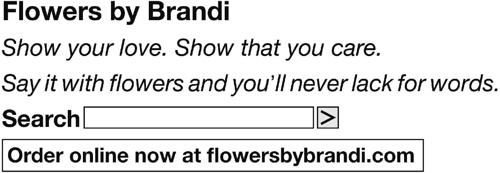
There's nothing like receiving fresh, beautiful flowers. That's especially true on Mother's Day, which is less than two weeks away. Mom may not tell you, but you know flowers will make her happy. Now you can remember her and save money with our special Mother's Day Sale. Simply choose your flowers from ourMother's Day Sale page. And if you order by May 3, the flowers will be delivered on Mother's Day for only $3. That's a discount of $12!
Already have flowers ready for Mother's Day? Come to flowersbybrandi.com for many other great flower and gift ideas. Make your home more beautiful, plan a wedding or other event, fix a broken heart, or just cheer up a friend. Whoever it is, however they're feeling, flowers will brighten their day. So let Flowers by Brandi take care of everything. All you need to do is pick and click. We will do the rest.
Flowers by Brandi ...
When words are not enough.
flowersbybrandi.com
② 次の文が英文の内容と合っていれば○、違っていれば×を選びましょう。 解答はこちら
このウェブサイトから花を届けてもらうことができる。
ROUND2
① 次の英文に、意味の固まりごとにスラッシュを入れましょう。続いて、語注を参考にスラッシュごとの意味を考えてください。
That's especially true on Mother's Day, which is less than two weeks away.
Now you can remember her and save money with our special Mother's Day Sale.
Come to flowersbybrandi.com for many other great flower and gift ideas.
読み方のヒント
Already have flowers ready for Mother's Day? は、You already have flowers ready for Mother's Day? の You を省略した形です。特に会話では、相手が言ったことを聞き返すときに、このような平叙文の形がよく用いられます。
□
語注
□care：気にする、気に掛ける
□lack for 〜：〜を欠く、〜が足りなくなる
□search：検索
□There's nothing like 〜：〜に勝るものはない
□especially：特に、とりわけ
□simply：単に、ただ
□discount：割引
□fix：〜を直す、〜を癒やす
□broken heart：傷ついた心
□cheer up 〜：〜を元気づける
□whoever：誰が〜でも
□however：どんなふうにでも
□brighten：〜を明るくする、〜を輝かせる
□all you need to do is 〜（動詞の原形）：あなたは〜するだけでよい
□click：クリックする
□romantic：ロマンチックな、恋愛の
□occasion：機会、時
② ①の英文にスラッシュを入れた例と訳です。①で自分が考えたスラッシュの位置と意味を、次と比べてみましょう。
That's especially true / on Mother's Day, / which is less than two weeks away. /
それは特に当てはまります 母の日に、 そしてそれはあと２週間足らず先です。
Now you can / remember her and save money with our special Mother's Day Sale. /
今ならあなたはできます 彼女を思い出すことが そしてお金を節約することが 弊社の特別な「母の日セール」で。
Come to flowersbybrandi.com / for many other great flower / and gift ideas.
flowersbybrandi.comに来てください 他にもたくさんある素晴らしい花 そして贈り物のアイデアのために。
③ 英文をもう一度読んで、かかった時間を書き留めてください。
読むのにかかった時間：
ポイント：ROUND 1よりも短い時間で読めるかに挑戦！
④ 次の質問の答えを（A）～（D）から選びましょう。
ROUND3
DL22
① 最後に音声を聞きながら英文を読んでみましょう。
→音声が遅く感じる場合は、「速読用音声」に挑戦！（詳しくはこちら参照）。
ポイント：音声のスピードで読みながら内容を理解できるかに挑戦！
② 次の質問に答えましょう。 解答はこちら
フラワーズ・バイ・ブランディが花を手掛けるイベントの例として、何が挙げられていますか。
解答のヒント
＊R1②、R2③、R3②の問題のヒントは以下の部分です。
There's nothing like receiving fresh, beautiful flowers. That's especially true on Mother's Day, which is less than two weeks away. Mom may not tell you, but you know flowers will make her happy. Now you can remember her and save money with our special Mother's Day Sale.R1Simply choose your flowers from ourMother's Day Sale page.R1R2And if you order by May 3, the flowers will be delivered on Mother's Day for only $3. That's a discount of $12!
Already have flowers ready for Mother's Day? Come to flowersbybrandi.com for many other great flower and gift ideas. Make your home more beautiful,R3plan a wedding or other event, fix a broken heart, or just cheer up a friend. Whoever it is, however they're feeling, flowers will brighten their day. So let Flowers by Brandi take care of everything. All you need to do is pick and click. We will do the rest.
Flowers by Brandi ...
When words are not enough.
flowersbybrandi.com
□
解答
ROUND 1. ○
ROUND 2. （C）
ROUND 3. 結婚式
ROUND 2の選択肢の訳
（A）5月1日
（B）5月2日
（C）5月3日
（D）母の日
□
訳
フラワーズ・バイ・ブランディ
あなたの愛情を示しましょう。あなたが気に掛けているということを示しましょう。
花を添えて言えば、あなたは決して言葉足らずになることはありません。
みずみずしく美しい花をもらうことに勝るものはありません。あと２週間足らずとなった母の日には特にそうです。お母さんは言わないかもしれませんが、花はお母さんを幸せな気持ちにします。今なら、弊社の特別な「母の日セール」で、お母さんのことを思い出し、お金を節約することができます。R1ただ「母の日セール」ページから花をお選びください。R1R2そしてもし5月3日までにご注文いただければ、そのお花はたった3ドルで母の日に配送されます。それは12ドルの割引です。
母の日の花はもう用意できているですって？ flowersbybrandi.com にその他の素晴らしい花や贈り物のアイデアを見に来てください。お家をもっと美しくする、R3結婚式や他のイベントを計画しましょう、傷ついた心を癒やしましょう、またはただ友だちを元気づけましょう。誰であろうと、その人がどんなふうに感じていようと、花は彼らの１日を明るくしてくれます。ですから、フラワーズ・バイ・ブランディに全てお任せください。あなたは選んでクリックするだけでよいのです。あとはわれわれがやります。
フラワーズ・バイ・ブランディ...
言葉では十分でないときには
flowersbybrandi.com へどうぞ
語数：177
難易度：★★☆
メニュー
レストランに行ったつもりで、フルコースの品書きを読んでみましょう。
素材名や調理法など見慣れない単語も登場しますが、料理を簡単に説明した文がほとんどです。
ROUND1
① 時間を計りながら、英文を読んでみましょう。かかった時間を書き留めてください。
読むのにかかった時間：
ポイント：約1分50秒で全て読めるか、挑戦してみよう！
CERES 12TH AVENUE RESTAURANT

Menu
Full Course Meal
First Course
Our meal begins with a light serving of cold shrimp with salad and salted olive oil.
Second Course
Guests may choose between several different soups. The choices include a clear consommé of beef, a seasoned vegetable soup --- our lightest soup, or cream of asparagus soup.
Third Course
Our third course is a small portion of baked salmon with butter sauce and sun-dried tomatoes.
Fourth Course
The fish is followed by your choice of either chicken or beef. The chicken is prepared by a special method of pan-frying with truffle oil. The beef is a filet mignon in the Lyonnaise style.
Fifth Course
The fifth course is our largest plate. It presents strong flavors and a powerful aroma. Ask for a small portion if you are a light eater. This season, we are serving lamb with mint sauce with carrots, wild rice and potatoes.
Sixth Course
We finish with a choice of sweet dishes, served with coffee or tea: Pears in vodka sauce
ROUND2
① 次の英文に、意味の固まりごとにスラッシュを入れましょう。続いて、語注を参考にスラッシュごとの意味を考えてください。
Our meal begins with a light serving of cold shrimp with salad and salted olive oil.
The chicken is prepared by a special method of pan-frying with truffle oil.
This season, we are serving lamb with mint sauce with carrots, wild rice, and potatoes.
語注
□serving：一盛り、一皿
□salted：塩で味付けした、塩漬けの
□olive oil：オリーブ油
□choice：選択肢、候補
□consommé of beef：ビーフコンソメスープ
□seasoned：（香辛料で）味付けされた
□cream of asparagus soup：アスパラガス入りクリームスープ ★cream of 〜 soupで「〜入りクリームスープ」
□a small portion of 〜：少量の〜 ★portion は「一人分の量、一人前」
□salmon：鮭、サーモン
□sun-dried：日干しの、乾燥させた
□your choice of 〜：お好みの〜で
□method：方法、手法
□pan-frying：フライパン焼き、フライパン炒め ★調理法
□truffle：トリュフ
□filet mignon：フィレミニョン ★厚く切ったヒレ肉のステーキ
□Lyonnaise：リヨンの、リヨン風 ★リヨンはフランス南東部の都市
□flavor：風味、味
□aroma：香り、芳香
□light eater：小食な人
□lamb：子羊、ラム肉
□carrot：ニンジン
□wild rice：野生米、ワイルドライス
□sweet dish：デザート
□pear：西洋ナシ
□vodka：ウオツカ
□various：さまざまな
□sorbet：ソルベ ★シャーベットのような氷菓。フランス語
② ①の英文にスラッシュを入れた例と訳です。①で自分が考えたスラッシュの位置と意味を、次と比べてみましょう。
Our meal begins with a light serving of cold shrimp with salad and salted olive oil.
当店の食事は始まります 軽い一皿で 冷たいエビの サラダと塩味のオリーブ油を添えた。
The chicken is prepared by a special method of pan-frying with truffle oil.
鶏肉は調理されます 特別な方法によって フライパン焼きの トリュフオイルで。
This season, we are serving lamb with mint sauce / with carrots, wild rice, and potatoes.
今シーズン、 当店は出しています 「ラム肉のミントソースがけ」を ニンジン、ワイルドライス、そしてポテトを添えて。
③ 英文をもう一度読んで、かかった時間を書き留めてください。
読むのにかかった時間：
ポイント：ROUND 1よりも短い時間で読めるかに挑戦！
④ 次の質問の答えを（A）～（D）から選びましょう。
サーモンの料理が出てくるのは何品目ですか。
（A）The first course
（B）The second course
（C）The third course
（D）The fourth course
Menu
Full Course Meal
First Course
Our meal begins with a light serving of cold shrimp with salad and salted olive oil.
Second Course
Guests may choose between several different soups. The choices include a clear consommé of beef, a seasoned vegetable soup --- our lightest soup, or cream of asparagus soup.
R2Third Course
Our third course is a small portion of baked salmon with butter sauce and sun-dried tomatoes.
Fourth Course
The fish is followed by your choice of either chicken or beef. The chicken is prepared by a special method of pan-frying with truffle oil. The beef is a filet Mignon in the Lyonnaise style.
Fifth Course
The fifth course is our largest plate. It presents strong flavors and a powerful aroma. Ask for a small portion if you are a light eater. This season, we are serving lamb with mint sauce with carrots, wild rice and potatoes.
R1Sixth Course
We finish with a choice of sweet dishes,R3served with coffee or tea:
Pears in vodka sauce
Various fruit ices and sorbets
□
解答
ROUND 1. ○
ROUND 2. （C）
ROUND 3. コーヒーと紅茶
ROUND 2の選択肢の訳
（A）一品目 （B）二品目 （C）三品目 （D）四品目
□
訳
ケレス12番街レストラン
メニュー
フルコース料理
一品目
当店の食事は、サラダと塩味のオリーブ油を添えた、冷たいエビの軽い一皿で始まります。
二品目
お客さまに数種類のスープから選択をしていただきます。選択肢には、澄んだビーフコンソメスープ、味付けされた野菜のスープ──当店で最も軽めのスープです、アスパラガス入りクリームスープがございます。
R2三品目
当店の三品目は少量の焼きサーモンのバターソースと乾燥トマト添えです。
四品目
魚料理の後にはお好みで鶏肉または牛肉が続きます。鶏肉はトリュフオイルで特別なフライパン焼きの方法によって調理されています。牛肉はリヨン風フィレミニョンです。
五品目
五品目は当店最大の料理です。濃厚な風味と力強い香りをご提供します。小食の方は少盛りをお申し付けください。今シーズン、当店はラム肉のミントソースがけにニンジン、ワイルドライス、ポテトを添えてお出ししています。
R1六品目
R3コーヒーまたは紅茶と一緒に、次からお選びいただくデザートで締めくくります：
西洋ナシのウオツカソース煮
さまざまな果物の氷菓とシャーベット
CHAPTER 4
第４章
語数：157
難易度：★☆☆
物語②
テディのおじいちゃん
今回は短い物語を読みます。
終盤での、主人公の心の動きをしっかり捉えてください。
ROUND1
① 時間を計りながら、英文を読んでみましょう。かかった時間を書き留めてください。
読むのにかかった時間：
ポイント：約1分35秒で全て読めるか、挑戦してみよう！
When Teddy was growing up, his parents were both very busy with their jobs, so Teddy spent most of his time with his grandfather. Teddy's grandfather took him to school and helped him with his homework. Teddy was sad that he couldn't spend much time with his parents, but he loved his grandfather very much. When Teddy went off to college, he wrote to his grandfather and his grandfather always wrote back.
Years later, Teddy's grandfather was in a nursing home. He became very old and forgot things easily. He often couldn't remember people. One day, Teddy visited his grandfather, but he didn't remember Teddy. "Isn't he my grandpa anymore?" Teddy felt so sad. Then suddenly his grandfather said to a nurse, "I have to be going now. Teddy is coming home from school. If I'm not there, he gets lonely." "He may not understand I am his grandson, but he is still Teddy's grandpa," Teddy smiled.
② 次の文が英文の内容と合っていれば○、違っていれば×を選びましょう。 解答はこちら
子どものころ、テディの両親はとても忙しかった。
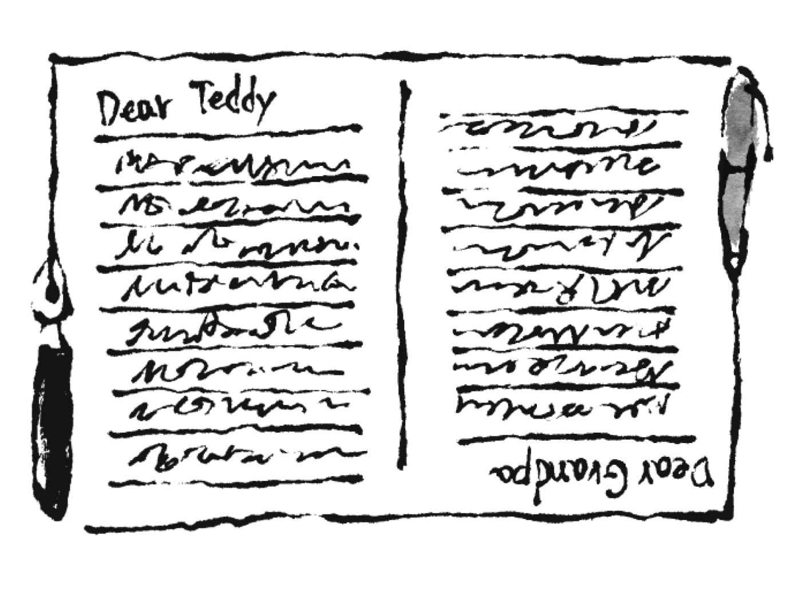
ROUND2
① 次の英文に、意味の固まりごとにスラッシュを入れましょう。続いて、語注を参考にスラッシュごとの意味を考えてください。
Teddy was sad that he couldn't spend much time with his parents, but he loved his grandfather very much.
He became very old and forgot things easily.
"He may not understand I am his grandson, but he is still Teddy's grandpa," Teddy smiled.
語注
□go off to college：大学へ行くために家を出る
□write to ～：～に手紙を書く
□write back：返事を書く
□nursing home：老人ホーム
□grandpa：おじいちゃん ★口語
□anymore：もはや（〜ない） ★否定文、疑問文で用いる
□nurse：看護師
□get lonely：寂しくなる
□grandson：（男子の）孫
② ①の英文にスラッシュを入れた例と訳です。①で自分が考えたスラッシュの位置と意味を、次と比べてみましょう。
Teddy was sad / that he couldn't spend much time / with his parents, but he loved his grandfather very much.
テディは悲しんでいました 彼はあまり多くの時間を過ごすことができなくて 彼の両親と、 でも彼は彼の祖父のことが大好きでした。
He became very old and forgot things easily. /
彼はとても年を取りました そして物事を忘れました 簡単に。
"He may not understand / I am his grandson, / but he is still Teddy's grandpa," / Teddy smiled. /
「彼は理解していないかもしれない 僕が彼の孫だと、 でも彼は今もテディのおじいちゃんだ」と テディはほほ笑みました。
③ 英文をもう一度読んで、かかった時間を書き留めてください。
読むのにかかった時間：
ポイント：ROUND 1よりも短い時間で読めるかに挑戦！
④ 次の質問の答えを（A）～（D）から選びましょう。
祖父を老人ホームに訪ねたとき、テディはなぜ悲しくなったのですか。
（A）His parents were not with him.
（B）His grandfather told him to go home.
（C）His grandfather did not remember him.
（D）He could not see his grandfather.
ROUND3
DL24
① 最後に音声を聞きながら英文を読んでみましょう。
→音声が遅く感じる場合は、「速読用音声」に挑戦！（詳しくはこちら参照）。
ポイント：音声のスピードで読みながら内容を理解できるかに挑戦！
② 次の質問に答えましょう。 解答はこちら
老人ホームで、テディの祖父が話し掛けた相手は誰ですか。
解答のヒント
＊R1②、R2③、R3②の問題のヒントは以下の部分です。
R1When Teddy was growing up, his parents were both very busy with their jobs, so Teddy spent most of his time with his grandfather. Teddy's grandfather took him to school and helped him with his homework. Teddy was sad that he couldn't spend much time with his parents, but he loved his grandfather very much. When Teddy went off to college, he wrote to his grandfather and his grandfather always wrote back.
Years later, Teddy's grandfather was in a nursing home. He became very old and forgot things easily. He often couldn't remember people. One day,R2Teddy visited his grandfather, but he didn't remember Teddy. "Isn't he my grandpa anymore?" Teddy felt so sad. Then suddenlyR3his grandfather said to a nurse, "I have to be going now. Teddy is coming home from school. If I'm not there, he gets lonely." "He may not understand I am his grandson, but he is still Teddy's grandpa," Teddy smiled.
□
解答
ROUND 1. ○
ROUND 2. （C）
ROUND 3. 看護師
ROUND 2の選択肢の訳
（A）両親が一緒ではなかったから。
（B）祖父が彼に帰れと言ったから。
（C）祖父が彼のことを覚えていなかったから。
（D）祖父に会うことができなかったから。
□
訳
R1テディが子どものころ、彼の両親はどちらも仕事で大変忙しかったので、テディはほとんどの時間を祖父と過ごしました。テディの祖父が彼を学校に送ったり、宿題を手伝ってくれたりしたのです。テディは、両親とあまり多くの時間を過ごせないことで悲しみましたが、祖父のことは大好きでした。テディが大学に行くために家を出ても、彼は祖父に手紙を書き、祖父はいつも返事をくれました。
数年後、テディの祖父は老人ホームにいました。彼はとても年を取り、物事を忘れやすくなりました。しばしば人々のことを思い出せないこともありました。ある日、R2テディは祖父の元を訪れましたが、彼はテディのことを覚えていませんでした。「彼はもう僕のおじいちゃんじゃないの？」テディはとても悲しくなりました。すると突然、R3祖父が看護師に言いました。「そろそろおいとましなくては。テディが学校から帰ってくるからね。私が家にいてやらないと、あの子は寂しがるんだ」「彼には僕が自分の孫だと分からないかもしれない、でも彼は今もテディのおじいちゃんなんだ」と、テディはほほ笑みました。
語数：260
難易度：★★★
記事⑤
エリア51
今回挑戦するのは語数も多く、難易度も高い記事です。
数々の都市伝説の舞台となっている米国のミステリースポット、「エリア51」に迫ります。
ROUND1
① 時間を計りながら、英文を読んでみましょう。かかった時間を書き留めてください。
読むのにかかった時間：
ポイント：約2分40秒で全て読めるか、挑戦してみよう！
In 1955, the United States needed a secret place where they could test the U-2 spy airplane. Engineers found the perfect spot. It was a blank area on the map in the empty desert of Nevada, about 100 miles north of Las Vegas. Ever since then, the Air Force has been using the area secretly to test the airplanes of the future. During the 1960s, at night, the dark desert floor would sometimes light up, a strange airplane would come out, take off, and quickly turn its lights off. Then the whole area would go black again a few minutes later.
Those airplanes were often strange-looking, shaped like disks, rockets or flying wings. If you were watching from the far hills, this would seem very strange. And if you believed in UFOs visiting earth, your imagination might run wild! That's exactly what has happened. The area has become known in popular culture as "Area 51," a favorite visiting spot for UFOs from outer space.
Many stories have been told about Area 51. Some are true --- like the testing of strange, powerful jet engines and fuels. Some are probably not true --- like the testing of energy-beam weapons. And some are pure fantasy --- like time travel and meetings with little gray men from outer space.
Spies are also interested in Area 51. For the good of the nation, the Air Force must keep secrets. So Area 51 remains a blank spot on the map. It's a place of mystery that people can fill with their hopes and fears, educated guesses and UFO fantasies.
② 次の文が英文の内容と合っていれば○、違っていれば×を選びましょう。 解答はこちら
エリア51は、地図上では空白になっている。
エリア51の近隣にある名物宿「Little Aʼleʼ Inn」（little alien「小さなエイリアン」に掛けている）の看板。
写真：ZUMAPRESS/アフロ
ROUND2
① 次の英文に、意味の固まりごとにスラッシュを入れましょう。続いて、語注を参考にスラッシュごとの意味を考えてください。
In 1955, the United States needed a secret place where they could test the U-2 spy airplane.
The area has become known in popular culture as "Area 51," a favorite visiting spot for UFOs from outer space.
It's a place of mystery that people can fill with their hopes and fears, educated guesses and UFO fantasies.
読み方のヒント
UFOs visiting earth は「地球を訪れている UFO」の意味です。
□
語注
□U-2 spy airplane：U-2型偵察機 ★米国のスパイ用偵察機
□engineer：技術者、エンジニア
□spot：地域、場所
□blank：空白の、何も書いていない
□empty：空っぽの、人けのない
□desert：砂漠
□Nevada：ネバダ州 ★米国の西部にある州
□ever since then：それ以後ずっと
□Air Force：米国空軍
□secretly：ひそかに、内緒で
□light up：明るくなる、光を発する
□come out：出てくる、現れる
□take off：離陸する、飛び立つ
□turn ～ off：（明かり）を消す、（電源）を切る
□go black：真っ暗になる
□strange-looking：奇妙な外見の
□be shaped like 〜：〜のような形をしている
□disk：円盤
□flying wing：全翼機 ★一般的な航空機にある胴体や尾翼を持たず、主翼のみで機体が構成されている飛行機
□UFO：未確認飛行物体、UFO ★unidentified flying object の略。UFOsは複数形
□run wild：自由に振る舞う、暴れる
□exactly：まさに
□popular culture：大衆文化
□Area 51：エリア51 ★米国空軍の管理下にあるネバダ州南部の一地区
□outer space：宇宙
□fuel：燃料
□energy-beam：エネルギー光線の
□weapon：兵器
□pure：全くの、純然たる
□fantasy：空想、想像
□meeting with 〜：〜との遭遇、〜との出会い
□gray men：灰色の人たち ★多くの目撃情報に登場する通称「グレイ」と呼ばれるタイプの宇宙人。人類より小柄で、灰色の肌と大きな黒い目が特徴
□spy：スパイ ★spies は複数形
□for the good of 〜：〜の利益のために
□nation：国家
□remain：〜のままである
□fill 〜 with ...：〜を...で満たす
□fear：恐れ、恐怖
□educated guess：知識に基づいた推測、根拠のある推測
② ①の英文にスラッシュを入れた例と訳です。①で自分が考えたスラッシュの位置と意味を、次と比べてみましょう。
In 1955, the United States needed a secret place where they could test the U-2 spy airplane.
1955年、 米国は必要としていました 秘密の場所を 彼らがU-2型偵察機を試験できる。
The area has become known in popular culture as "Area 51," a favorite visiting spot for UFOs from outer space.
その地域は知られるようになりました 大衆文化においては 「エリア51」として、 お気に入りの訪問地 UFOにとって 宇宙からの。
It's a place of mystery that people can fill with their hopes and fears, educated guesses and UFO fantasies.
それは場所です 謎の 人々が満たすことのできる 彼らの希望と恐怖で、 知識に基づいた推測で そしてUFOの空想で。
③ 英文をもう一度読んで、かかった時間を書き留めてください。
読むのにかかった時間：
ポイント：ROUND 1よりも短い時間で読めるかに挑戦！
④ 次の質問の答えを（A）～（D）から選びましょう。
エリア51にまつわる話のうち、筆者が真実だと断言しているのはどれですか。
（A）Testing of engines
（B）Testing of weapons
（C）Time travel
（D）Meeting with gray men
ROUND3
DL25
① 最後に音声を聞きながら英文を読んでみましょう。
→音声が遅く感じる場合は、「速読用音声」に挑戦！（詳しくはこちら参照）。
ポイント：音声のスピードで読みながら内容を理解できるかに挑戦！
② 次の質問に答えましょう。 解答はこちら
ネバダの砂漠で、夜に奇妙な現象が目撃されたのはいつごろですか。
解答のヒント
＊R1②、R2③、R3②の問題のヒントは以下の部分です。
In 1955, the United States needed a secret place where they could test the U-2 spy airplane. Engineers found the perfect spot. It was a blank area on the map in the empty desert of Nevada, about 100 miles north of Las Vegas. Ever since then, the Air Force has been using the area secretly to test the airplanes of the future.R3During the 1960s, at night, the dark desert floor would sometimes light up, a strange airplane would come out, take off, and quickly turn its lights off. Then the whole area would go black again a few minutes later.
Those airplanes were often strange-looking, shaped like disks, rockets or flying wings. If you were watching from the far hills, this would seem very strange. And if you believed in UFOs visiting earth, your imagination might run wild! That's exactly what has happened. The area has become known in popular culture as "Area 51," a favorite visiting spot for UFOs from outer space.
Many stories have been told about Area 51.R2Some are true --- like the testing of strange, powerful jet engines and fuels. Some are probably not true --- like the testing of energy-beam weapons. And some are pure fantasy --- like time travel and meetings with little gray men from outer space.
Spies are also interested in Area 51. For the good of the nation, the Air Force must keep secrets.R1So Area 51 remains a blank spot on the map. It's a place of mystery that people can fill with their hopes and fears, educated guesses and UFO fantasies.
□
解答
ROUND 1. ○
ROUND 2. （A）
ROUND 3. 1960年代
ROUND 2の選択肢の訳
（A）エンジンの試験
（B）兵器の試験
（C）時間旅行
（D）灰色の人たちとの遭遇
□
訳
1955年、米国はU-2型偵察機を試験できる秘密の場所を必要としていました。技術者たちは、申し分のない場所を見つけました。それは地図上では空白の地域で、ラスベガスからおよそ100マイル北に位置する、ネバダ州の何もない砂漠の中にありました。それ以降もずっと、米国空軍はその地域を未来の航空機を試験するためにひそかに使っています。R31960年代の間、夜に、暗い砂漠の底が時折明るくなり、奇妙な飛行機が現れ、離陸し、素早く明かりを消すということがありました。そして数分後には一帯が再び真っ暗になるのでした。
エリア51について多く話が語られてきました。R2奇妙で強力なジェットエンジンやジェット燃料の試験のように、一部は本当です。 エネルギー光線兵器の試験のように、一部は恐らく本当ではないでしょう。そして、時間旅行や宇宙からの小柄な灰色の人たちとの遭遇のように、一部は全くの空想です。
スパイたちもまた、エリア51に関心を持っています。国家の利益のために、空軍は秘密を守らなければなりません。R1ですからエリア51は地図の上では空白地帯のままです。それは、人々が希望と恐怖、知識に基づいた推測、UFOの空想で満たすことのできる謎の地なのです。
語数：201
難易度：★★☆
物語③
高校時代の恩師
今回は高校時代の恩師を振り返った少し長めの物語を読みます。
先生は筆者にどのような影響を与えたのでしょうか。
ROUND1
① 時間を計りながら、英文を読んでみましょう。かかった時間を書き留めてください。
読むのにかかった時間：
ポイント：約2分で全て読めるか、挑戦してみよう！
I had a wonderful teacher in high school. She taught history. She was quiet and serious but always had a smile for us. She was the teacher who taught me how to write. She said that when we write about events from the past, we should write an opening, then give the social, political and economic reasons for the events, and then write an ending. I didn't want to do it that way. I would try to write creatively and my essays didn't make much sense.
One day, I said, "OK! I'll try it your way." I wrote a paper about the beginnings of World War II in Europe. I gave the social, political and economic reasons why the war began. My teacher said it was a very good paper. I finally realized that writing is like playing the piano. If you can't play a scale, you can't play anything else. I had to learn how to write a basic paper and from there I could learn how to write things that are fun to read. I'm very glad I had the chance to study with that teacher. Every time I have to write something, I remember her and her smile.
② 次の文が英文の内容と合っていれば○、違っていれば×を選びましょう。 解答はこちら
ここで紹介されているのは英語の先生だ。
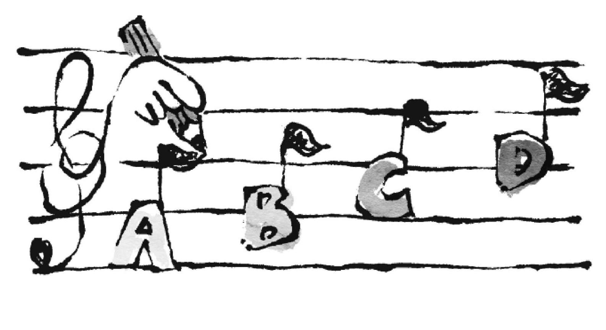
ROUND2
① 次の英文に、意味の固まりごとにスラッシュを入れましょう。続いて、語注を参考にスラッシュごとの意味を考えてください。
She was the teacher who taught me how to write.
I gave the social, political and economic reasons why the war began.
I had to learn how to write a basic paper and from there I could learn how to write things that are fun to read.
語注
□serious：真面目な
□how to write：（文章の）書き方
□social：社会的な
□political：政治的な
□economic：経済的な
□would：〜したものだ ★ここでは過去の習慣を表している
□creatively：独創的に、創造的に
□essay：作文、小論文
□make sense：意味を成す
□paper：論文
□scale：音階 ★If you can't play a scale は「ドレミも弾けないで」ぐらいのニュアンス
□study with 〜：〜から教えを受ける、〜に師事する
② ①の英文にスラッシュを入れた例と訳です。①で自分が考えたスラッシュの位置と意味を、次と比べてみましょう。
She was the teacher who taught me how to write. /
彼女は先生でした 私に教えてくれた 文章の書き方を。
I gave / the social, political and economic reasons why the war began.
私は述べました 社会的、政治的、経済的原因を なぜその戦争が起きたのかという。
I had to learn how to write a basic paper and from there I could learn how to write things that are fun to read.
私は学ばなくてはなりませんでした 基本的な論文の書き方を そしてそこから 私は学ぶことができました ものの書き方を 読んで楽しい。
③ 英文をもう一度読んで、かかった時間を書き留めてください。
読むのにかかった時間：
ポイント：ROUND 1よりも短い時間で読めるかに挑戦！
④ 次の質問の答えを（A）～（D）から選びましょう。
ROUND3
DL26
① 最後に音声を聞きながら英文を読んでみましょう。
→音声が遅く感じる場合は、「速読用音声」に挑戦！（詳しくはこちら参照）。
ポイント：音声のスピードで読みながら内容を理解できるかに挑戦！
② 次の質問に答えましょう。 解答はこちら
筆者は文章を書くことを何に例えていますか。
解答のヒント
＊R1②、R2③、R3②の問題のヒントは以下の部分です。
I had a wonderful teacher in high school.R1She taught history. She was quiet and serious but always had a smile for us. She was the teacher who taught me how to write. She said that when we write about events from the past, we should write an opening, then give the social, political and economic reasons for the events, and then write an ending. I didn't want to do it that way. I would try to write creatively and my essays didn't make much sense.
One day, I said, "OK! I'll try it your way."R2I wrote a paper about the beginnings of World War II in Europe. I gave the social, political and economic reasons why the war began. My teacher said it was a very good paper.R3I finally realized that writing is like playing the piano. If you can't play a scale, you can't play anything else. I had to learn how to write a basic paper and from there I could learn how to write things that are fun to read. I'm very glad I had the chance to study with that teacher. Every time I have to write something, I remember her and her smile.
□
解答
ROUND 1. ×
ROUND 2. （D）
ROUND 3. ピアノを弾くこと
ROUND 2の選択肢の訳
（A）新聞 （B）音楽 （C）自然 （D）戦争
訳
私には、高校時代、素晴らしい先生がいました。R1彼女は歴史を教えていました。 彼女は物静かで真面目でしたが、いつも私たちにほほ笑んでくれました。彼女は私に文章の書き方を教えてくれた先生でした。彼女は、過去の出来事について書くときには、導入部を書き、続いて出来事の社会的、政治的、経済的な原因を述べ、それから結末を書くべきだと言いました。私はそれをそのやり方で書きたくありませんでした。私は独創的に文章を書こうとしたので、私の小論文はあまり意味を成しませんでした。
ある日、私は「分かった！ あなたのやり方でやってみます」と言いました。R2私は欧州での第二次世界大戦の始まりについて論文を書きました。なぜその戦争が起きたのかという社会的、政治的、経済的原因を述べました。先生はそれはとても良い論文だと言いました。R3私は文章を書くことはピアノを弾くようなものだとようやく気が付きました。 音階を弾けなければ、何かほかのものを弾けるわけがありません。私は基本的な論文の書き方を学ばなくてはならず、そしてそこから読んで楽しいものの書き方を学ぶことができました。その先生から教えを受ける機会があって本当に良かったと思っています。何かを書かなくてはならなくなるたびに、私は彼女と彼女のほほ笑みを思い出します。
語数：142
難易度：★☆☆
エッセイ⑤
旅に出よう
今回は海外旅行を勧めるエッセイを読んでみましょう。
海外旅行についてのどんな利点が挙げられているかに注目してください。
ROUND1
① 時間を計りながら、英文を読んでみましょう。かかった時間を書き留めてください。
読むのにかかった時間：
ポイント：約1分25秒で全て読めるか、挑戦してみよう！
If you believe that there is only one way to do things, you should travel. Travel abroad is a way to experience different cultures and also a wonderful form of education. It helps you see yourself and the world in a different way. Of course, it is interesting to see old buildings and the beauties of nature. In museums and zoos, you can see how people used to live and what kinds of animals live in different countries. But when you visit other countries, you can also see how other people live now. You can learn about what they believe and how it is different from your own ideas. You can learn foreign languages, too. If you are lucky, you will make great friends. And travel abroad leaves you with memories that will stay with you for the rest of your life.
② 次の文が英文の内容と合っていれば○、違っていれば×を選びましょう。 解答はこちら
何事にも正しいやり方というのは一つしか存在しない。
ROUND2
① 次の英文に、意味の固まりごとにスラッシュを入れましょう。続いて、語注を参考にスラッシュごとの意味を考えてください。
Travel abroad is a way to experience different cultures and also a wonderful form of education.
You can learn about what they believe and how it is different from your own ideas.
And travel abroad leaves you with memories that will stay with you for the rest of your life.
読み方のヒント
travel は「旅をする」という動詞ですが、の Travel abroadのtravel は「旅、旅行」という意味の名詞です。
□
語注
□travel abroad：海外旅行、国外旅行
□experience：～を経験する、～を体験する
□education：教育
□of course：もちろん
□beauty：美点、長所 ★beauties はその複数形。the beauties of nature は「自然の美しさ」の意味
□for the rest of your life：一生、残りの人生ずっと
② ①の英文にスラッシュを入れた例と訳です。①で自分が考えたスラッシュの位置と意味を、次と比べてみましょう。
Travel abroad is a way to experience different cultures and also a wonderful form of education.
海外旅行は一つの方法です 異文化を体験する そして素晴らしい一形態でもあります 教育の。
You can learn about what they believe and how it is different / from your own ideas.
あなたは知ることができます 彼らが信じることについて そしてそれがどう異なるのかについて あなた自身の考えと。
And travel abroad leaves you / with memories that will stay with you for the rest of your life.
そして海外旅行はあなたに残してくれます 思い出を それはいてくれるでしょう あなたと共に 一生。
③ 英文をもう一度読んで、かかった時間を書き留めてください。
読むのにかかった時間：
ポイント：ROUND 1よりも短い時間で読めるかに挑戦！
④ 次の質問の答えを（A）～（D）から選びましょう。
海外旅行の利点として挙げられていないのは次のどれですか。
（A）You can see how people live there.
（B）You can enjoy shopping.
（C）You can learn foreign languages.
（D）You can make friends.
ROUND3
DL27
① 最後に音声を聞きながら英文を読んでみましょう。
→音声が遅く感じる場合は、「速読用音声」に挑戦！（詳しくはこちら参照）。
ポイント：音声のスピードで読みながら内容を理解できるかに挑戦！
② 次の質問に答えましょう。 解答はこちら
このエッセイによれば、海外旅行で後に残るものとは何ですか。
解答のヒント
＊R1②、R2③、R3②の問題のヒントは以下の部分です。
R1If you believe that there is only one way to do things, you should travel. Travel abroad is a way to experience different cultures and also a wonderful form of education. It helps you see yourself and the world in a different way. Of course, it is interesting to see old buildings and the beauties of nature. In museums and zoos, you can see how people used to live and what kinds of animals live in different countries.R2But when you visit other countries, you can also see how other people live now. You can learn about what they believe and how it is different from your own ideas.R2You can learn foreign languages, too. If you are lucky,R2you will make great friends.R3And travel abroad leaves you with memories that will stay with you for the rest of your life.
□
解答
ROUND 1. ×
ROUND 2. （B）
ROUND 3. 思い出
ROUND 2の選択肢の訳
（A）人々がそこでどのように暮らすのか見ることができる。
（B）買い物を楽しむことができる。
（C）外国語を習うことができる。
（D）友だちを作ることができる。
□
訳
R1もしあなたが物事を行うのに一つの方法しかないと思っているなら、あなたは旅をするべきです。 海外旅行は異文化を体験する一つの方法であり、教育の素晴らしい一形態でもあります。それはあなたが自分自身や世界を違う角度から見る助けになります。もちろん、古い建物や自然の美しさを見物するのは興味深いです。博物館や動物園で、人々がかつてどのように暮らしていたのか、どんな種類の動物が他国に生息しているのかを見ることはできます。R2でも、外国を訪れれば、他の人々が現在どのように暮らしているのかを見ることもできるのです。 彼らが何を信じているのか、それがあなた自身の考えとはどう違っているのかについて知ることができます。R2外国語を習うこともできます。運が良ければ、R2素晴らしい友だちができるでしょう。R3そして海外旅行は、あなたと一生共にある思い出を残してくれます。
語数：264
難易度：★★★
記事⑥
『刑事コロンボ』の魅力
今回は、テレビ史に名を刻む推理ドラマ『刑事コロンボ』（"Columbo"）についての記事を読みます。
世界でファンを獲得したその人気の秘密はどこにあるのでしょうか。
ROUND1
① 時間を計りながら、英文を読んでみましょう。かかった時間を書き留めてください。
読むのにかかった時間：
ポイント：約2分40秒で全て読めるか、挑戦してみよう！
If you watch TV and like murder mysteries, then you probably know "Columbo," a very popular TV detective show. People like Columbo partly because the story is backward. In normal mystery stories, we don't know the answer until the detective does. But a Columbo story begins by showing us the murder. Before Columbo knows, we know who did it, when they did it, where, how, and even why.
The killer is usually rich, powerful, popular and clever. The killer is in control. Columbo is not handsome, powerful or rich. He does not look educated or clever. The killer feels sure that Columbo will give up soon, and tells him lies to make him go away. This is a big mistake.
As Columbo does his job, we begin to see that he's not as confused as he looks. He has hidden strengths. He remembers details. He asks clever questions. He talks a lot, but knows when to say nothing. And he never, ever gives up.
Near the end of the story, just before Columbo catches the killer, he says his most famous line: "Just one more thing ..." He asks the killer a simple, final question about a small detail. The detail is small, but very important. The question shows that Columbo did not give up, and that he is about to solve the mystery.
After being discovered, the killer talks with Columbo. Columbo is no longer acting friendly, polite or confused. He offers a serious final judgment. Now we see all of Columbo's hidden strengths. He is not only quick-thinking and hard-working. He is wise.
② 次の文が英文の内容と合っていれば○、違っていれば×を選びましょう。 解答はこちら
『刑事コロンボ』の人気の一因は、視聴者が刑事より先に犯人を知る点にある。
ピーター・フォーク扮する、コロンボ警部。くたびれたレインコートがトレードマーク。
写真：Jerry Watson/Camera Press/AFLO
ROUND2
① 次の英文に、意味の固まりごとにスラッシュを入れましょう。続いて、語注を参考にスラッシュごとの意味を考えてください。
The killer feels sure that Columbo will give up soon, and tells him lies to make him go away.
He asks the killer a simple, final question about a small detail.
The question shows that Columbo did not give up, and that he is about to solve the mystery.
読み方のヒント
he never, ever gives upのnever(,) everは、それが決してあり得ないということを強調しています。
is no longer acting friendly, polite or confused は「もはや友好的なふりも、礼儀正しいふりも、混乱しているふりもしていない」の意味です。friendly、polite、confused はいずれも形容詞ですが、act＋形容詞で「〜のふりをする」という意味になります。
□
語注
□murder mystery：殺人ミステリー ★murderは「殺人」の意味
□probably：恐らく
□"Columbo"：『刑事コロンボ』（邦題） ★1960年代の終わりから2000年代初めまで制作・テレビ放映された、米国の人気刑事ドラマ。ロサンゼルス市警察殺人課のベテラン刑事、コロンボの活躍を描く
□detective：探偵、刑事
□backward：逆の
□killer：殺人犯
□powerful：力のある ★ここでは特に「権力のある」の意味
□in control：主導権を持って、支配して
□handsome：ハンサムな、顔立ちの良い
□educated：教養がある
□feel sure that ～：～だと確信する、きっと～だと思う
□make 〜 go away：〜を追い返す、〜を追い払う
□as 〜 as ... look：...の見掛け通り〜で ★not が前にあると「...の見掛けほど〜ではない」という意味になる
□confused：混乱した、困惑した
□hidden：隠された、ひそかな
□strength：強さ、力
□detail：詳細、ささいなこと
□say nothing：黙る、黙する
□line：せりふ
□be about to 〜（動詞の原形）：まさに〜しようとしている
□solve：〜を解く、〜を解決する
□no longer ：もはや〜ない
□judgment：判断、判決
□quick-thinking：機転が利く
□hard-working：勤勉な、働き者の
② ①の英文にスラッシュを入れた例と訳です。①で自分が考えたスラッシュの位置と意味を、次と比べてみましょう。
The killer feels sure that Columbo will give up soon, and tells him lies to make him go away.
殺人犯はきっと〜だと思います コロンボはすぐに諦めるだろうと、 そして彼にうそをつきます 彼を追い返すために。
He asks the killer a simple, final question about a small detail. /
彼は殺人犯に尋ねます 簡単な最後の質問を 取るに足らないささいなことについて。
The question shows / that Columbo did not give up, and that he is about to solve the mystery. /
その質問は示しています コロンボが諦めなかったことを、 そして彼がまさにしていることを 謎を解こうと。
③ 英文をもう一度読んで、かかった時間を書き留めてください。
読むのにかかった時間：
ポイント：ROUND 1よりも短い時間で読めるかに挑戦！
④ 次の質問の答えを（A）～（D）から選びましょう。
筆者は、『刑事コロンボ』に登場する殺人犯たちにはどういう人が多いと述べていますか。
（A）Dangerous people
（B）Confused people
（C）Powerful people
（D）Friendly people
ROUND3
DL28
① 最後に音声を聞きながら英文を読んでみましょう。
→音声が遅く感じる場合は、「速読用音声」に挑戦！（詳しくはこちら参照）。
ポイント：音声のスピードで読みながら内容を理解できるかに挑戦！
② 次の質問に答えましょう。 解答はこちら
犯人を追いつめる直前、コロンボは犯人に何についての質問をしますか。
解答のヒント
＊R1②、R2③、R3②の問題のヒントは以下の部分です。
If you watch TV and like murder mysteries, then you probably know "Columbo," a very popular TV detective show.R1People like Columbo partly because the story is backward. In normal mystery stories, we don't know the answer until the detective does. But a Columbo story begins by showing us the murder.R1Before Columbo knows, we know who did it, when they did it, where, how, and even why.
R2The killer is usually rich, powerful, popular and clever. The killer is in control. Columbo is not handsome, powerful or rich. He does not look educated or clever. The killer feels sure that Columbo will give up soon, and tells him lies to make him go away. This is a big mistake.
As Columbo does his job, we begin to see that he's not as confused as he looks. He has hidden strengths. He remembers details. He asks clever questions. He talks a lot, but knows when to say nothing. And he never, ever gives up.
Near the end of the story, just before Columbo catches the killer, he says his most famous line: "Just one more thing ..."R3He asks the killer a simple, final question about a small detail. The detail is small, but very important. The question shows that Columbo did not give up, and that he is about to solve the mystery.
After being discovered, the killer talks with Columbo. Columbo is no longer acting friendly, polite or confused. He offers a serious final judgment. Now we see all of Columbo's hidden strengths. He is not only quick-thinking and hard-working. He is wise.
□
解答
ROUND 1. ○
ROUND 2. （C）
ROUND 3. 取るに足らないささいなこと
ROUND 2の選択肢の訳
（A）危険な人々
（B）混乱した人々
（C）権力のある人々
（D）友好的な人々
□
訳
もしあなたがテレビを見て、殺人ミステリーも好きなら、非常に人気の高いテレビの刑事番組『刑事コロンボ』を恐らくご存じだと思います。R1人々がコロンボを好きな理由の一つは、物語が逆だからです。 通常の推理小説では、私たちは刑事が知るまで、答えを知りません。しかしコロンボの物語は、殺人を見せることで始まります。R1コロンボが知るより先に、私たちは誰がそれを行ったのか、いつしたのか、どこで、どのように、そしてなぜかということさえ知っています。
R2その殺人犯というのは大抵、裕福で、権力があり、評判が良く、賢いのです。 その殺人犯が主導権を握っています。コロンボは二枚目でも、権力があるわけでも、裕福でもありません。教養があるようにも賢くも見えません。殺人犯はきっとコロンボがすぐに諦めるだろうと思い、彼を追い返すためにうそをつきます。これが大きな間違いなのです。
コロンボが自分の仕事をすると、私たちには彼が見掛けほど混乱していないことが分かり始めます。彼には隠された強さがあるのです。彼はささいなことを覚えています。彼は巧みな質問をします。彼はよく話をしますが、黙る時を心得ています。そして、彼は絶対に諦めたりしません。
物語の終わり近く、コロンボが殺人犯を捕らえる直前、彼は最も有名なせりふ「あと一つだけ...」を言います。R3彼は殺人犯に、取るに足らないささいなことについて、簡単な最後の質問をします。 その小さなことが、取るに足らなくても非常に重要なのです。その質問は、コロンボが諦めなかったことと、彼がまさに謎を解こうとしていることを示しています。
見つかった後、殺人犯はコロンボと話します。コロンボはもはや友好的なふりも、礼儀正しいふりも、混乱しているふりもしていません。彼は重大な最終判断を提示します。ようやくわれわれはコロンボの隠された強さの全てを目にします。彼は機転が利き働き者だというだけではありません。彼は賢いのです。
語数：201
難易度：★☆☆
物語④
復活祭のうさぎ
今回読むのは、自らの失敗から学ぶという物語です。
長さはありますが、ストーリーの起承転結をしっかり追っていきましょう。
ROUND1
① 時間を計りながら、英文を読んでみましょう。かかった時間を書き留めてください。
読むのにかかった時間：
ポイント：約2分5秒で全て読めるか、挑戦してみよう！
In the United States, Easter is a holiday when we paint eggs in bright colors. Parents hide the eggs and some candy inside their houses or sometimes outside in the garden. Then their children hunt for the eggs and candy. Adults also often give children presents, like a basket full of sweets or small toys. When I was 7 years old, someone gave me a large, white chocolate Easter rabbit. I loved all kinds of sweet things, especially white chocolate, so I ate most of the rabbit all at once. I ate his ears and then his head and then most of his body. He was delicious, but soon I started to feel bad. My stomach started to hurt and I got very sick.
Now just thinking about white chocolate makes me feel kind of sick. Since then I have never eaten white chocolate again. I learned a very important lesson that day. Because I was greedy, I lost a pleasure in my life. I can think of the perfect saying for this: You can have too much of a good thing. There's nothing wrong with going for things you like in your life, but you should always know your limit.
② 次の文が英文の内容と合っていれば○、違っていれば×を選びましょう。 解答はこちら
復活祭の祝日には、子どもたちが大人からお菓子やおもちゃをもらうことがある。
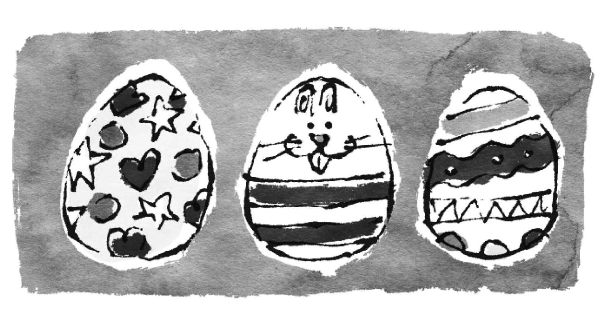
ROUND2
① 次の英文に、意味の固まりごとにスラッシュを入れましょう。続いて、語注を参考にスラッシュごとの意味を考えてください。
In the United States, Easter is a holiday when we paint eggs in bright colors.
Parents hide the eggs and some candy inside their houses or sometimes outside in the garden.
There's nothing wrong with going for things you like in your life, but you should always know your limit.
語注
□Easter：復活祭、イースター ★イエス・キリストの復活を記念するキリスト教の祝祭
□hunt for 〜：〜を探し回る
□a basket full of 〜：かごいっぱいの〜
□Easter rabbit：復活祭うさぎ ★ウサギは多産なことから豊かさの象徴とされる
□at once：一気に、すぐに
□stomach：胃、腹
□greedy：欲張りの、強欲な
□pleasure：喜び、楽しみ
□saying：ことわざ、格言
□You can have too much of a good thing.：過ぎたるは及ばざるがごとし ★ことわざ。素晴らしいものでも多過ぎれば台無しになる、何事もほどほどが肝心といった意味
□go for 〜：〜を求める
② ①の英文にスラッシュを入れた例と訳です。①で自分が考えたスラッシュの位置と意味を、次と比べてみましょう。
In the United States, Easter is a holiday when we paint eggs / in bright colors.
米国では、 復活祭は祭日です 私たちが卵を塗る 鮮やかな色で。
Parents hide / the eggs and some candy inside their houses or sometimes / outside in the garden.
親たちは隠します その卵やお菓子を 彼らの家の中に また時には 外の庭に。
There's nothing wrong / with going for things you like in your life, but you should always know your limit. /
悪いことは何もありません 求めることに あなたの好きなものを 人生において しかしあなたは常に知っておくべきです あなたの限界を。
③ 英文をもう一度読んで、かかった時間を書き留めてください。
読むのにかかった時間：
ポイント：ROUND 1よりも短い時間で読めるかに挑戦！
④ 次の質問の答えを（A）～（D）から選びましょう。
筆者は7歳のとき、復活祭に何をもらいましたか。
（A）A white chocolate rabbit
（B）A dress for Easter
（C）Colored eggs
（D）Toys in a basket
ROUND3
DL29
① 最後に音声を聞きながら英文を読んでみましょう。
→音声が遅く感じる場合は、「速読用音声」に挑戦！（詳しくはこちら参照）。
ポイント：音声のスピードで読みながら内容を理解できるかに挑戦！
② 次の質問に答えましょう。 解答はこちら
筆者が最後にホワイトチョコレートを食べたのはいつですか。
解答のヒント
＊R1②、R2③、R3②の問題のヒントは以下の部分です。
In the United States, Easter is a holiday when we paint eggs in bright colors. Parents hide the eggs and some candy inside their houses or sometimes outside in the garden. Then their children hunt for the eggs and candy.R1Adults also often give children presents, like a basket full of sweets or small toys.R2R3hen I was 7 years old, someone gave me a large, white chocolate Easter rabbit. I loved all kinds of sweet things, especially white chocolate, so I ate most of the rabbit all at once. I ate his ears and then his head and then most of his body. He was delicious, but soon I started to feel bad. My stomach started to hurt and I got very sick.
Now just thinking about white chocolate makes me feel kind of sick.R3Since then I have never eaten white chocolate again. I learned a very important lesson that day. Because I was greedy, I lost a pleasure in my life. I can think of the perfect saying for this： You can have too much of a good thing. There's nothing wrong with going for things you like in your life, but you should always know your limit.
□
解答
ROUND 1. ○
ROUND 2. （A）
ROUND 3. 7歳のとき
ROUND 2の選択肢の訳
（A）ホワイトチョコレートのうさぎ
（B）復活祭のためのドレス
（C）彩色された卵
（D）かごに入ったおもちゃ
□
訳
米国では、復活祭は私たちが卵を鮮やかな色で塗る祭日です。親たちはその卵やあめを家の中や時には外の庭に隠します。それから子どもたちが卵やお菓子を探し回るのです。R1大人たちが、かごいっぱいのお菓子や小さなおもちゃといったプレゼントを子どもたちにくれることもよくあります。R2R3私が7歳のとき、誰かが私に大きなホワイトチョコレートの復活祭うさぎをくれました。 私はあらゆる甘い物、特にホワイトチョコレートが大好きだったので、そのうさぎの大部分を一気に食べました。耳、それから頭、そして体のほとんどを食べました。うさぎはおいしかったのですが、すぐに私は気分が悪くなり始めました。おなかが痛くなってきて、私はとても具合が悪くなりました。
今ではホワイトチョコレートのことを考えるだけで、私は何だか気分が悪くなります。R3それ以来、私はずっとホワイトチョコレートを食べてません。 あの日私はとても重要な教訓を学びました。欲張ったせいで、私は人生の楽しみを失ったのです。これにぴったりなことわざが思い浮かびます。「過ぎたるは及ばざるがごとし」です。人生において好きなものを求めるのは何ら悪いことではありませんが、常に自分の限界を知っておかなくてはなりません。
語数：271
難易度：★★★
記事⑦
大リーグ、幻の完全試合
今回挑戦するのは、2010年、大リーグで起きたある「事件」についての長編記事です。
前半は実況さながらの臨場感、後半は多くの感動を呼んだエピソードを味わいましょう。
ROUND1
① 時間を計りながら、英文を読んでみましょう。かかった時間を書き留めてください。
読むのにかかった時間：
ポイント：約2分45秒で全て読めるか、挑戦してみよう！
On June 2, 2010, baseball fans were watching history being made on the edges of their seats. Detroit Tigers pitcher Armando Galarraga was finishing a "perfect game." That means that nobody on the other team had gotten to first base. If Galarraga could complete the perfect game, it would make him a hero, and leave his name in the history books.
When the game was almost over, batter Jason Donald hit the ball. The first baseman ran after it. Galarraga ran to first base. The ball was thrown to Galarraga. He caught it and stepped on first base before Donald. The fans cheered. Galarraga raised his arms in joy. The perfect game was complete!
So everyone thought. But first base umpire Jim Joyce made his judgment, "Safe!" The "perfect game" was destroyed. Joyce's call was clearly a mistake. Shocked, angry sounds were heard everywhere. They came from fans, from players, and from coaches. Everyone saw that Joyce was wrong.
In the middle of the storm of anger, noise and confusion, Galarraga acted differently from the crowd. He did not complain. He smiled quietly, walked back to his place, and prepared to continue pitching.
Joyce did not try to excuse himself. After the game, in front of reporters, he said his judgment had been wrong, and he apologized. Galarraga expressed no anger: "Nobody's perfect," he said, and then suggested that maybe there are things greater than having his name on the list of perfect-game pitchers. He said it might not be in the history books, but he would still be able to tell his son that he had got a perfect game.
② 次の文が英文の内容と合っていれば○、違っていれば×を選びましょう。 解答はこちら
ガララーガは（当時）タイガースの選手だった。
「祝28アウト」「あれは完全試合だったよ」と、ガララーガ選手へのメッセージを掲げるファン。翌日の試合で。
写真：AP/アフロ
ROUND2
① 次の英文に、意味の固まりごとにスラッシュを入れましょう。続いて、語注を参考にスラッシュごとの意味を考えてください。
On June 2, 2010, baseball fans were watching history being made on the edges of their seats.
In the middle of the storm of anger, noise and confusion, Galarraga acted differently from the crowd.
After the game, in front of reporters, he said his judgment had been wrong, and he apologized.
読み方のヒント
baseball fans were watching history being made は「野球ファンは歴史が作られようとしているのを見守っていた」の意味です。watch 〜 動詞の-ing形（〜が...しているのを見る）の watch が過去進行形になっており、動詞の-ing形の部分が、 being made と受け身の形になっています。
□
語注
□on the edges of their seats：身を乗り出して ★on the edge ofone's seat で「身を乗り出して」
□Detroit Tigers：デトロイト・タイガース ★大リーグの一チーム。本拠地、米ミシガン州デトロイト
□pitcher：投手、ピッチャー
□Armando Galarraga：アーマンド・ガララーガ ★大リーグ、デトロイト・タイガースの投手（当時）。ベネズエラ出身
□in the history books：歴史の本に載って、歴史の本に記録されて ★in the book で「記録されて」の意味
□batter：打者、バッター
□Jason Donald：ジェイソン・ドナルド ★大リーグ、クリーブランド・インディアンズの内野手（当時）
□first baseman：一塁手
□step on 〜：〜を踏む
□cheer：歓声を上げる、声援を送る
□raise his arms：両腕を上げる ★raiseone's arms で「両腕を上げる」の意味
□in joy：喜びで、うれしさのあまり
□umpire：審判員、アンパイア
□Jim Joyce：ジム・ジョイス ★大リーグのベテラン審判員。自らの誤審を認めて謝罪した試合後の会見は、称賛を受けた
□judgment：判定 ★makeone's judgment で「判断を下す」の意味
□be destroyed：壊される、破壊される
□call：判定
□clearly：明らかに
□shocked：驚いた、衝撃を受けた
□coach：コーチ、監督
□see that 〜：〜であると分かる
□in the middle of 〜：〜の真ん中に、〜の真っただ中で
□noise：騒音、雑音 ★ここでは抗議の叫び声や怒号を指す
□confusion：混乱、困惑
□excuse： 〜の弁明をする ★excuseoneself で「弁解する、言い訳する」の意味
□in front of 〜：〜の前で
□reporter：記者
□apologize：誤る、謝罪する
□express：〜を表す、〜を示す
② ①の英文にスラッシュを入れた例と訳です。①で自分が考えたスラッシュの位置と意味を、次と比べてみましょう。
On June 2, 2010, baseball fans were watching history being made on the edges of their seats.
2010年6月2日、 野球ファンは見ていました 歴史が作られようとしているのを 身を乗り出して。
In the middle of the storm of anger, noise and confusion, Galarraga acted differently from the crowd.
嵐の真っただ中 怒り、 叫び声、 そして混乱の、 ガララーガは違った態度で振る舞いました 群衆とは。
After the game, in front of reporters, he said his judgment had been wrong,and he apologized. /
試合の後、 記者たちの前で、 彼は述べました 自分の判定は間違いだったと そして彼は謝罪しました。
③ 英文をもう一度読んで、かかった時間を書き留めてください。
読むのにかかった時間：
ポイント：ROUND 1よりも短い時間で読めるかに挑戦！
④ 次の質問の答えを（A）～（D）から選びましょう。
「セーフ」の判定の直後、ガララーガ選手は何をしましたか。
（A）He expressed his anger.
（B）He walked back to the bench.
（C）He prepared to continue pitching.
（D）He apologized to the crowd.
ROUND3
DL30
① 最後に音声を聞きながら英文を読んでみましょう。
→音声が遅く感じる場合は、「速読用音声」に挑戦！（詳しくはこちら参照）。
ポイント：音声のスピードで読みながら内容を理解できるかに挑戦！
② 次の質問に答えましょう。 解答はこちら
間違いを責めずに許そうという、ガララーガ選手の姿勢が強く表れているのはどんな発言ですか。
解答のヒント
＊R1②、R2③、R3②の問題のヒントは以下の部分です。
On June 2, 2010, baseball fans were watching history being made on the edges of their seats.R1Detroit Tigers pitcher Armando Galarraga was finishing a "perfect game." That means that nobody on the other team had gotten to first base. If Galarraga could complete the perfect game, it would make him a hero, and leave his name in the history books.
When the game was almost over, batter Jason Donald hit the ball. The first baseman ran after it. Galarraga ran to first base. The ball was thrown to Galarraga. He caught it and stepped on first base before Donald. The fans cheered. Galarraga raised his arms in joy. The perfect game was complete!
So everyone thought. But first base umpire Jim Joyce made his judgment, "Safe!" The "perfect game" was destroyed. Joyce's call was clearly a mistake. Shocked, angry sounds were heard everywhere. They came from fans, from players, and from coaches. Everyone saw that Joyce was wrong.
In the middle of the storm of anger, noise and confusion, Galarraga acted differently from the crowd. He did not complain.R2He smiled quietly, walked back to his place, and prepared to continue pitching.
Joyce did not try to excuse himself. After the game, in front of reporters, he said his judgment had been wrong, and he apologized.R3Galarraga expressed no anger: "Nobody's perfect," he said, and then suggested that maybe there are things greater than having his name on the list of perfect-game pitchers. He said it might not be in the history books, but he would still be able to tell his son that he had got a perfect game.
□
解答
ROUND 1. ○
ROUND 2. （C）
ROUND 3. 「完ぺきな人間なんていません」
ROUND 2の選択肢の訳
（A）彼は怒りを表した。
（B）彼はベンチへ歩いて戻った。
（C）投球を続ける準備をした。
（D）群衆に謝罪した。
□
訳
2010年6月2日、野球ファンは歴史が作られようとしているのを身を乗り出して見守っていました。R1デトロイト・タイガースの投手、アーマンド・ガララーガが「完全試合」を達成しようとしていました。それは、相手チームの誰も1塁ベースに達していなかったということです。もしガララーガが完全試合を達成できたら、それにより彼は英雄になり、彼の名前は歴史の本に残ることになります。
試合もほぼ終わりかけたころ、打者のジェイソン・ドナルドが球を打ちました。一塁手が球を追いました。ガララーガは一塁へ走りました。球はガララーガへと投げられました。彼はそれをキャッチし、ドナルドより先に一塁ベースを踏みました。ファンは歓声を上げました。ガララーガは喜びで両腕を上げました。完全試合の達成でした！
誰もが思いました。ところが、一塁塁審のジム・ジョイスは「セーフ！」と判定しました。「完全試合」は打ち砕かれました。ジョイスの判定は明らかに誤りでした。驚き腹を立てた声があちこちで聞かれました。それらはファン、選手たち、コーチたちからのものでした。誰もがジョイスは間違っていると思いました。
怒り、叫び声、混乱の嵐の真っただ中、ガララーガは人々とは違った態度で振る舞いました。彼は文句を言いませんでした。R2彼は静かにほほ笑み、自分の持ち場へ歩いて戻ると、投球を続ける準備をしました。
ジョイスは弁解しようとしませんでした。試合後、記者たちの前で、彼は自分の判定は間違いだったと述べ、謝罪しました。R3ガララーガはまったく怒りを表しませんでした。「完ぺきな人間なんていません」と彼は言い、それから、完全試合を達成した投手のリストに自分の名前が載ることより、もっと重要なことがあるかもしれないと示唆しました。彼は、歴史の本には載っていないかもしれないが、自分は完全試合を達成したことがあると息子には話せるだろう、と言いました。
語数：257
難易度：★★☆
記事⑧
ココと子猫
今回挑戦する記事には、手話（sign language）で人間と「会話」することができるゴリラ、ココが登場します。
クリスマスにねだるほど、ココが夢中になったのは何だったのでしょうか。
ROUND1
① 時間を計りながら、英文を読んでみましょう。かかった時間を書き留めてください。
読むのにかかった時間：
ポイント：約2分35秒で全て読めるか、挑戦してみよう！
For 40 years, scientists at the Gorilla Foundation in California have been studying how gorillas think, feel and behave. One particular gorilla named Koko has learned to "speak" to people in American Sign Language. She can use over 1,000 signs to express her thoughts and feelings. She can also understand about 2,000 words of spoken English.
Koko likes to look at picture books. In particular, she likes stories about cats. In 1983, Koko asked for a kitten as a Christmas present. The scientists gave her a toy cat, but Koko was not happy and signed "sad" over and over again. So in 1984, the scientists gave her a real kitten. Koko named the small, gray kitten All Ball. All Ball was a manx, a type of cat that has no tail. Koko loved the kitten and was very gentle and kind as she took care of it. She acted like All Ball was a baby gorilla. She played with All Ball for about an hour every day. In 1985, Koko and All Ball appeared on the cover ofNational Geographic magazine.
But one day, All Ball got out of the building and was hit and killed by a car. When the scientists told Koko that All Ball was gone, she signed, "bad," "sad" and "cry." And then she signed, "sleep cat." It was heartbreaking, and some people were shocked to learn that animals could have such rich emotions.
Since that time, Koko has chosen other cat companions. She acts like all of them are her own children.
② 次の文が英文の内容と合っていれば○、違っていれば×を選びましょう。 解答はこちら
ココはいくつかの手話を理解することはできるが、使うことはできない。
ROUND2
① 次の英文に、意味の固まりごとにスラッシュを入れましょう。続いて、語注を参考にスラッシュごとの意味を考えてください。
For 40 years, scientists at the Gorilla Foundation in California have been studying how gorillas think, feel and behave.
All Ball was a manx, a type of cat that has no tail.
In 1985, Koko and All Ball appeared on the cover ofNational Geographic magazine.
語注
□foundation：財団法人、基金
□behave：振る舞う、行動する
□sign language：手話
□picture book：絵本
□in particular：特に
□ask for 〜：〜が欲しいと言う、〜を求める
□kitten：子猫
□sign：〜と手話で伝える、〜と手話で表現する
□over and over again：何度も繰り返して
□manx：マンクス ★猫の種類。しっぽが完全に無いか短いのが特徴
□appear：現れる、登場する
□cover：表紙、カバー
□National Geographic magazine 『ナショナル・ジオグラフィック』誌 ★米国の雑誌。地理学、人類学、自然科学などの分野の記事を写真と共に掲載する
□gone：亡くなっている、この世にいない
□heartbreaking：心の痛む、痛ましい
□be shocked to 〜（動詞の原形）：〜して衝撃を受ける
□such：そのような
□emotion：感情
□companion：仲間、連れ
② ①の英文にスラッシュを入れた例と訳です。①で自分が考えたスラッシュの位置と意味を、次と比べてみましょう。
For 40 years, scientists at the Gorilla Foundation in California have been studying how gorillas think, feel and behave.
40年の間、 科学者たちは ゴリラ財団の カリフォルニアにある 研究しています どのようにゴリラが考え、 感じ、 そして振る舞うのかを。
All Ball was a manx, a type of cat that has no tail. /
オールボールはマンクスでした 猫の一種です しっぽを持たない。
In 1985, / Koko and All Ball appeared on the cover ofNational Geographic magazine./
1985年、 ココとオールボールは登場しました 表紙に 『ナショナル・ジオグラフィック』誌の。
③ 英文をもう一度読んで、かかった時間を書き留めてください。
読むのにかかった時間：
ポイント：ROUND 1よりも短い時間で読めるかに挑戦！
④ 次の質問の答えを（A）～（D）から選びましょう。
1983年のクリスマスに、おもちゃの猫をもらったときのココの反応はどうでしたか。
（A）She was excited.
（B）She was unhappy.
（C）She was not interested.
（D）She was afraid.
ROUND3
DL31
① 最後に音声を聞きながら英文を読んでみましょう。
→音声が遅く感じる場合は、「速読用音声」に挑戦！（詳しくはこちら参照）。
ポイント：音声のスピードで読みながら内容を理解できるかに挑戦！
② 次の質問に答えましょう。 解答はこちら
ココは猫たちをどのように見ていると考えられますか。
解答のヒント
＊R1②、R2③、R3②の問題のヒントは以下の部分です。
For 40 years, scientists at the Gorilla Foundation in California have been studying how gorillas think, feel and behave. One particular gorilla named Koko has learned to "speak" to people in American Sign Language.R1She can use over 1,000 signs to express her thoughts and feelings. She can also understand about 2,000 words of spoken English.
Koko likes to look at picture books. In particular, she likes stories about cats. In 1983, Koko asked for a kitten as a Christmas present.R2The scientists gave her a toy cat, but Koko was not happy and signed "sad" over and over again. So in 1984, the scientists gave her a real kitten. Koko named the small, gray kitten All Ball. All Ball was a manx, a type of cat that has no tail. Koko loved the kitten and was very gentle and kind as she took care of it.R3She acted like All Ball was a baby gorilla. She played with All Ball for about an hour every day. In 1985, Koko and All Ball appeared on the cover ofNational Geographic magazine.
But one day, All Ball got out of the building and was hit and killed by a car. When the scientists told Koko that All Ball was gone, she signed, "bad," "sad" and "cry." And then she signed, "sleep cat." It was heartbreaking, and some people were shocked to learn that animals could have such rich emotions.
Since that time, Koko has chosen other cat companions.R3She acts like all of them are her own children.
□
解答
ROUND 1. ×
ROUND 2. （B）
ROUND 3. 自分の子ども（赤ちゃんゴリラ）
ROUND 2の選択肢の訳
（A）彼女は大喜びだった。
（B）彼女は不満だった。
（C）彼女は興味が無かった。
（D）彼女は怖がった。
□
訳
40年の間、カリフォルニア州にあるゴリラ財団の科学者たちは、ゴリラがどのように考え、感じ、振る舞うのかを研究しています。ココという名前のある特別なゴリラは、米国式手話で人々と「話す」ことを覚えました。R1彼女は自分の考えや気持ちを表す1000を超える手話を使うことができます。 彼女は2000語の話される英語を理解することもできます。
ココは絵本を見るのが好きです。特に猫の話が好きです。1983年、ココはクリスマスプレゼントに子猫をねだりました。R2科学者たちは彼女におもちゃの猫を与えましたが、ココは満足せず、「悲しい」と繰り返し手話で表現しました。そこで1984年、科学者たちは彼女に本物の子猫を与えました。ココはその小さな灰色の子猫をオールボールと名付けました。オールボールは、マンクスというしっぽの無い種類の猫でした。ココはその子猫を愛し、子猫の面倒を見るときにはとても丁寧に優しくしました。R3彼女はオールボールが赤ちゃんゴリラであるかのように振る舞いました。 彼女は毎日1時間ほどオールボールと遊びました。1985年、ココとオールボールは『ナショナル・ジオグラフィック』誌の表紙に登場しました。
ところがある日、オールボールは建物から抜け出し、車にはねられて死んでしまいました。科学者たちがココにオールボールはこの世にいないと告げると、彼女は「ひどい」「悲しい」「泣く」と手話で伝えました。それから、「眠る、猫」と手話で表したのです。それは痛ましく、動物がそのような豊かな感情を持ち得るのだと知って衝撃を受ける人もいました。
それ以降も、ココは別の猫のお仲間を選んできました。R3彼女はその全てがわが子であるかのように振る舞っています。
ファイナルテスト
学習の仕上げに、テストに挑戦してみましょう。これまで学んだ成果を試すつもりで取り組んでください。
最後に「記録欄」の結果を比較して、力の伸びを確認してください。
語数：231
難易度：★★☆
［物語］
銀婚式大作戦
両親の銀婚式を子どもたちで盛り上げようと計画する兄と｢私」。
けれども、「子どもたち全員で」となると、1つ問題がありそうです。
DL32
挑戦してみよう
①時間を計りながら英文を読んでみましょう。かかった時間をこちらの「記録欄」のように書き留め、読む速さを割り出してください。続いて②の問題に答えましょう。余裕のある人は音声も聞いてください。
My older brother Roy called me and suggested we children do something special for our parents' wedding anniversary this year. It would be their 25th anniversary. Roy told me his idea of making some special travel arrangements for them. I immediately liked the idea, but then realized a possible problem. If we children had to work together, I would have to talk to my teenage brother Eric.
Eric was the type of teenager you have probably heard about: he always shut himself in his room when he was at home. I was pretty sure that he was just sitting in front of his computer all the time. I couldn't even remember the last time I had talked with him. I didn't feel like knocking on his door and talking to him, so I sent him an email instead. To my surprise, he replied in minutes. His email included some possible travel plans. He said in the email, "There's not much I can do in terms of money, so I'll handle all the research and arrange everything on the Internet."
When we presented the travel plans to our parents, Eric was out. He had escaped, I thought. Roy gave them the tickets and a travel guide. Mother cried. And when I added that Eric had created the beautiful guide all by himself, I noticed my father also had tears in his eyes.
② 次の問題の答えを（A）～（D）から選んでください。
旅行案内を作ったのは誰ですか。
（A）Roy
（B）Eric
（C）Father
（D）Mother
語注
□suggest：～を提案する ★特にアメリカ英語では suggest に続く節に動詞の原形が用いられる。ここでも、suggested に続く節（we ～ this year）の動詞は do と原形で用いられている
□wedding anniversary：結婚記念日
□arrangement：準備、手配 ★make an arrangement で「手配をする」の意味
□immediately：すぐに、即座に
□realize：～に気が付く
□possible：可能性がある、あり得る
□teenage：10代の、ティーンエージャーの
□teenager：10代の若者、ティーンエージャー
□probably：恐らく
□shut ～ in ...：～を...に閉じこめる ★shutoneself in 〜で「〜に閉じこもる」の意味。文中のshut は過去形
□be pretty sure ～：～にまず間違いないと思う
□all the time：ずっと
□feel like -ing：～したい気がする
□knock on ～：～をノックする、～をたたく
□instead：その代わりに
□to my surprise：驚いたことに
□reply：返事をする、返信をする
□in minutes：数分後に
□include：～を含める ★ここでは his emailが主語なので、「彼のメールには～があった」という意味
□There's not much I can do：私にできることはあまりない
□in terms of ～：～の面では
□handle：～を担当する
□research：調査、調べ物
□arrange：～を手配する
□present：～贈呈する、～を提示する
□escape：逃げる
□travel guide：旅行案内
□add that ～：～だと言い足す、～だと付け加える
□create：～を作る
□all by himself：彼独りで ★all byoneselfで「独力で、自分だけで」の意味
□notice ～：～であることに気が付く
□tear：涙 ★have tears inone's eyes で「目をうるませる、目に涙をためている」の意味
訳 ＊②の解答のヒントは、以下の下線部です。
兄のロイが私に電話をしてきて、今年はわれわれ子どもたちで何か特別なことを両親の結婚記念日のためにしようと提案しました。それは彼らの25回目の記念日になるのでした。ロイは、彼らのために何か特別な旅行の手配をするという彼の考えを話してくれました。私はすぐにその考えを気に入りましたが、その後、ある起こり得る問題に気が付きました。もしわれわれ子どもたちが一緒に取り組まなくてはならないのなら、私はティーンエージャーの弟、エリックと話さなくてはなりません。
エリックは、あなたも恐らく聞いたことがあるであろうタイプのティーンエージャーでした。つまり家にいるときは常に部屋に閉じこもっていました。彼はずっとコンピューターの前に座っているだけに違いないと私は思っていました。私は最後に彼と口をきいたのがいつだったのか、思い出すことさえできませんでした。私は彼の部屋のドアをノックする気になれなかったので、代わりに彼にメールを送りました。驚いたことに、彼は数分後に返事をしてきました。彼のメールには、いくつか可能性のある旅行プランがありました。彼はそのメールの中で、「お金の面ではできることはあまりないから、僕は全ての調べ物を担当して、全てをインターネットで手配するよ」と言いました。
私たちが両親にその旅行計画を贈呈するとき、エリックは外出していました。彼は逃げたのだと私は思いました。ロイが彼らにチケットと旅行案内を渡しました。母さんは泣きました。そしてエリックがその美しい案内を一人で作ったのだと私が付け加えたとき、私は、父さんも目をうるませていることに気が付きました。
②の解答のヒント
＊②の解答のヒントは、以下の下線部です。
My older brother Roy called me and suggested we children do something special for our parents' wedding anniversary this year. It would be their 25th anniversary. Roy told me his idea of making some special travel arrangements for them. I immediately liked the idea, but then realized a possible problem. If we children had to work together, I would have to talk to my teenage brother Eric.
Eric was the type of teenager you have probably heard about: he always shut himself in his room when he was at home. I was pretty sure that he was just sitting in front of his computer all the time. I couldn't even remember the last time I had talked with him. I didn't feel like knocking on his door and talking to him, so I sent him an email instead. To my surprise, he replied in minutes. His email included some possible travel plans. He said in the email, "There's not much I can do in terms of money, so I'll handle all the research and arrange everything on the Internet."
When we presented the travel plans to our parents, Eric was out. He had escaped, I thought. Roy gave them the tickets and a travel guide. Mother cried. And when I added thatEric had created the beautiful guide all by himself, I noticed my father also had tears in his eyes.
□
②の解答
（B）
選択肢の訳
（A）ロイ
（B）エリック
（C）父さん
（D）母さん
LEVEL 1＆2
全単語リスト
本書の英文はアルクが編集した「標準語彙水準12000」（Standard Vocabulary List：略称SVL12000）*のLEVEL 1（入門レベルの1000語）とLEVEL 2（初級レベルの1000語）をベースに書かれています。ここではその全単語をアルファベット順に掲載します。
1：LEVEL 1の単語
2：LEVEL 2の単語
＊「標準語彙水準SVL 12000」は日本人の英語学習者にとって有用な英単語1万2000語を選び出し、基礎から上級へと12のレベルに区分した語彙リストです。
A
1 □ a
2 □ ability1 □ able1 □ about1 □ above2 □ abroad2 □ absent2 □ accent2 □ accept2 □ accident2 □ account1 □ across1 □ act
2 □ action2 □ active2 □ activity2 □ actor2 □ actress2 □ actual2 □ actually2 □ add
2 □ address2 □ admire2 □ adult2 □ adventure2 □ advice2 □ advise1 □ afraid1 □ after1 □ afternoon2 □ afterward1 □ again1 □ against1 □ age
2 □ agency2 □ agent1 □ ago
2 □ agree2 □ ah
2 □ ahead2 □ aim
1 □ air
2 □ airline1 □ airplane1 □ airport1 □ album2 □ alive1 □ all
2 □ allow2 □ almond1 □ almost1 □ alone1 □ along2 □ alphabet1 □ already1 □ also1 □ always1 □ am
1 □ among2 □ amount1 □ an
1 □ and
2 □ angel2 □ anger1 □ angry1 □ animal2 □ announce1 □ another1 □ answer2 □ ant
2 □ anxious1 □ any
1 □ anybody1 □ anyone1 □ anything2 □ anyway2 □ anywhere2 □ apart1 □ apartment2 □ appear2 □ appearance1 □ apple2 □ apply2 □ approach1 □ April2 □ apron1 □ are
2 □ area1 □ arm
2 □ army1 □ around2 □ arrange2 □ arrangement2 □ arrival1 □ arrive1 □ art
1 □ artist1 □ as
2 □ aside1 □ ask
2 □ asleep2 □ assist1 □ at
1 □ attack2 □ attend2 □ attention2 □ audience1 □ August1 □ aunt2 □ automobile1 □ autumn2 □ awake2 □ aware1 □ away2 □ awful
B
1 □ baby1 □ back2 □ backward2 □ bacon1 □ bad
2 □ badly1 □ bag
1 □ bake1 □ baker2 □ balance1 □ ball2 □ balloon1 □ banana2 □ band1 □ bank2 □ bar
2 □ base1 □ baseball2 □ basic1 □ basket1 □ basketball1 □ bat
1 □ bath1 □ bathroom2 □ battle2 □ bay
1 □ be
2 □ beach2 □ bean2 □ bear2 □ beard2 □ beat1 □ beautiful2 □ beautifully2 □ beauty1 □ because1 □ become1 □ bed
1 □ bedroom2 □ bee
1 □ beef1 □ been2 □ beer1 □ before1 □ begin1 □ beginning2 □ behave1 □ behind1 □ believe1 □ bell2 □ belong1 □ below2 □ belt1 □ bench2 □ bend1 □ beside1 □ best1 □ better1 □ between2 □ beyond1 □ bicycle1 □ big
1 □ bike2 □ bill1 □ bird2 □ birth1 □ birthday2 □ bit
1 □ black1 □ blackboard2 □ blame2 □ blanket2 □ blind2 □ block2 □ blood1 □ blow1 □ blue2 □ board1 □ boat1 □ body2 □ boil2 □ bone1 □ book2 □ bookshop2 □ bookstore1 □ boot2 □ boring1 □ born2 □ borrow2 □ boss1 □ both1 □ bottle2 □ bottom2 □ bow
2 □ bowl1 □ box
1 □ boy
2 □ boyfriend2 □ brain2 □ brake2 □ branch2 □ brave1 □ bread1 □ break1 □ breakfast2 □ breath2 □ breathe2 □ brick1 □ bridge2 □ bright2 □ brilliant1 □ bring2 □ broad2 □ broadcast2 □ broken1 □ brother1 □ brown2 □ brush1 □ build1 □ building2 □ burn2 □ burst1 □ bus
2 □ bush1 □ business2 □ businessman1 □ busy1 □ but
1 □ butter2 □ butterfly2 □ button1 □ buy
1 □ by
1 □ bye
C
2 □ cab
2 □ cable1 □ cafe2 □ cage1 □ cake1 □ calendar1 □ call1 □ camera1 □ camp2 □ campus1 □ can
2 □ candle1 □ candy1 □ cap
2 □ capital1 □ captain1 □ car
1 □ card2 □ care1 □ careful2 □ carefully2 □ carpenter1 □ carry1 □ case2 □ cash2 □ cast2 □ castle1 □ cat
1 □ catch2 □ cause2 □ ceiling2 □ cent1 □ center2 □ centimeter2 □ central2 □ century1 □ certain2 □ certainly2 □ chain1 □ chair1 □ chalk2 □ champion1 □ chance1 □ change2 □ chapter2 □ character2 □ charge1 □ cheap2 □ check2 □ cheek2 □ cheer1 □ cheese2 □ cherry2 □ chest1 □ chicken1 □ chief1 □ child1 □ children1 □ chocolate2 □ choice1 □ choose1 □ Christmas1 □ church2 □ cigar2 □ cigarette2 □ cinema1 □ circle2 □ citizen1 □ city2 □ claim1 □ class1 □ classmate1 □ classroom1 □ clean2 □ cleaning1 □ clear2 □ clearly2 □ clerk1 □ clever1 □ climb2 □ clinic1 □ clock1 □ close2 □ cloth1 □ clothes1 □ cloud1 □ cloudy1 □ club2 □ coal2 □ coast1 □ coat2 □ cocoa1 □ coffee2 □ coin1 □ cold2 □ collect2 □ collection1 □ college1 □ color2 □ colorful1 □ come2 □ comfort2 □ comfortable2 □ comic2 □ common2 □ companion1 □ company2 □ compare2 □ complain2 □ complete2 □ completely2 □ computer2 □ concert2 □ condition2 □ contain2 □ content2 □ continue2 □ control2 □ conversation1 □ cook1 □ cookie2 □ cooking1 □ cool2 □ copy2 □ corn1 □ corner2 □ correct2 □ cost2 □ cotton1 □ could1 □ count1 □ country2 □ couple2 □ courage2 □ course2 □ court2 □ cousin1 □ cover1 □ cow
2 □ cowboy2 □ crash2 □ crazy2 □ cream2 □ create2 □ creation2 □ crew2 □ cross2 □ crowd2 □ crowded2 □ crown1 □ cry
2 □ culture1 □ cup
2 □ curtain2 □ curve2 □ custom2 □ customer1 □ cut
2 □ cycle
D
1 □ dad
1 □ daddy2 □ daily2 □ damage1 □ dance2 □ dancer2 □ dancing2 □ danger1 □ dangerous2 □ dare1 □ dark1 □ date1 □ daughter1 □ day
1 □ dead2 □ deaf2 □ deal1 □ dear1 □ death1 □ December1 □ decide2 □ decision1 □ deep2 □ deeply2 □ defend2 □ defense2 □ degree1 □ delicious2 □ deliver2 □ demand2 □ dentist2 □ deny1 □ department2 □ depend2 □ depth2 □ describe2 □ desert2 □ design2 □ designer1 □ desk2 □ destroy2 □ detail2 □ develop2 □ dial2 □ diamond1 □ diary1 □ dictionary1 □ did
1 □ die
2 □ difference1 □ different1 □ difficult2 □ difficulty2 □ dig
1 □ dinner2 □ direct2 □ direction2 □ directly1 □ dirty2 □ disappear2 □ discount1 □ discover2 □ discuss2 □ discussion2 □ disease1 □ dish2 □ disk2 □ dislike2 □ distance2 □ distant2 □ district2 □ divide1 □ do
1 □ doctor1 □ does1 □ dog
1 □ doll1 □ dollar1 □ door2 □ double2 □ doubt1 □ down2 □ downstairs2 □ downtown2 □ dozen2 □ drama1 □ draw1 □ dream1 □ dress2 □ drill1 □ drink2 □ drinking1 □ drive1 □ driver1 □ drop2 □ drown2 □ drug2 □ drunk1 □ dry
1 □ during2 □ dust2 □ duty
E
1 □ each1 □ ear
1 □ early2 □ earn2 □ earring1 □ earth2 □ easily1 □ east1 □ easy1 □ eat
2 □ edge2 □ educate2 □ education2 □ effect2 □ effort1 □ egg
1 □ eight1 □ eighteen2 □ eighteenth2 □ eighth2 □ eightieth1 □ eighty1 □ either2 □ elbow2 □ elder2 □ electric2 □ electricity1 □ elephant2 □ elevator1 □ eleven2 □ eleventh1 □ else2 □ empty1 □ end
2 □ ending2 □ enemy2 □ energy2 □ engine2 □ engineer1 □ enjoy1 □ enough1 □ enter2 □ entrance2 □ envelope2 □ equal2 □ eraser2 □ error2 □ escape2 □ especially1 □ even1 □ evening2 □ event1 □ ever1 □ every1 □ everybody2 □ everyday1 □ everyone1 □ everything1 □ everywhere2 □ exact2 □ exactly2 □ examination2 □ examine2 □ example2 □ excellent2 □ except2 □ exciting1 □ excuse2 □ exercise2 □ exist2 □ exit2 □ expect2 □ expensive2 □ experience2 □ explain2 □ express1 □ eye
F
1 □ face1 □ fact1 □ factory2 □ fail2 □ fair1 □ fall2 □ false2 □ familiar1 □ family1 □ famous2 □ fan
1 □ far
2 □ fare1 □ farm1 □ farmer2 □ fashion1 □ fast1 □ fat
1 □ father2 □ fault2 □ favor2 □ favorite2 □ fax
2 □ fear1 □ February2 □ feed1 □ feel1 □ feeling2 □ fellow2 □ female2 □ fence2 □ festival1 □ few
1 □ field1 □ fifteen2 □ fifteenth2 □ fifth2 □ fiftieth1 □ fifty1 □ fight2 □ figure2 □ fill1 □ film2 □ final2 □ finally1 □ find1 □ fine1 □ finger1 □ finish1 □ fire2 □ firm1 □ first1 □ fish2 □ fisherman2 □ fishing2 □ fit
1 □ five2 □ fix
2 □ flag1 □ flat2 □ flight2 □ float2 □ flood1 □ floor2 □ flow1 □ flower1 □ fly
2 □ follow2 □ following1 □ food1 □ fool2 □ foolish1 □ foot1 □ football1 □ for
2 □ force2 □ foreign2 □ foreigner1 □ forest2 □ forever1 □ forget2 □ forgive1 □ fork2 □ form2 □ formal2 □ former2 □ fortieth2 □ fortunate1 □ forty2 □ forward1 □ four1 □ fourteen2 □ fourteenth2 □ fourth1 □ fox
1 □ free2 □ freedom2 □ freeze1 □ fresh1 □ Friday1 □ friend1 □ friendly2 □ friendship1 □ frog1 □ from1 □ front1 □ fruit2 □ fuel1 □ full1 □ fun
1 □ funny2 □ furniture2 □ further1 □ future
G
2 □ gain1 □ game2 □ garage1 □ garden1 □ gas
2 □ gate2 □ gather2 □ general2 □ generally2 □ gentle1 □ gentleman1 □ get
2 □ ghost2 □ giant2 □ gift1 □ girl2 □ girlfriend1 □ give1 □ glad1 □ glass1 □ glove1 □ go
1 □ goal1 □ god
1 □ gold1 □ golden1 □ golf1 □ gone1 □ good1 □ goodbye2 □ gorilla2 □ grade2 □ grammar2 □ grand2 □ granddaughter1 □ grandfather2 □ grandma1 □ grandmother2 □ grandpa2 □ grandson2 □ grape2 □ grapefruit1 □ grass2 □ grateful1 □ gray1 □ great2 □ greatly2 □ greatness1 □ green2 □ greeting1 □ ground1 □ group1 □ grow2 □ guard2 □ guess1 □ guest1 □ guide1 □ guitar1 □ gun
2 □ gym
H
2 □ habit1 □ hair2 □ hairbrush2 □ haircut1 □ half2 □ hall2 □ ham
2 □ hamburger2 □ hammer1 □ hand2 □ handkerchief2 □ handle2 □ handsome2 □ hang1 □ happen2 □ happily1 □ happiness1 □ happy2 □ harbor1 □ hard2 □ hardly2 □ harm1 □ has
1 □ hat
2 □ hate1 □ have1 □ he
1 □ head2 □ headache2 □ health1 □ healthy1 □ hear1 □ heart2 □ heat2 □ heaven1 □ heavy2 □ height2 □ helicopter2 □ hell1 □ hello1 □ help2 □ helpful1 □ her
1 □ here2 □ hero1 □ hers2 □ herself2 □ hey
1 □ hi
2 □ hide1 □ high2 □ highly2 □ hiking1 □ hill1 □ him
2 □ himself2 □ hire1 □ his
1 □ history1 □ hit
1 □ hobby1 □ hold1 □ hole1 □ holiday2 □ holy1 □ home2 □ homeroom1 □ homework1 □ honest1 □ honey2 □ hook1 □ hope1 □ horse1 □ hospital2 □ host1 □ hot
1 □ hotel1 □ hour1 □ house1 □ how
2 □ however2 □ human1 □ hundred1 □ hungry2 □ hunt1 □ hurry1 □ hurt1 □ husband
I
1 □ I
1 □ ice
1 □ idea1 □ if
1 □ ill
2 □ illness2 □ image2 □ imagination2 □ imagine2 □ immediate2 □ immediately2 □ importance1 □ important2 □ impossible2 □ impression2 □ improve1 □ in
2 □ inch2 □ include2 □ industry2 □ inform2 □ information2 □ ink
2 □ insect1 □ inside2 □ instead2 □ intelligent2 □ intend1 □ interest1 □ interested1 □ interesting2 □ international1 □ into2 □ introduce2 □ invitation1 □ invite2 □ iron1 □ is
1 □ island1 □ it
1 □ its
2 □ itself
J
2 □ jacket1 □ jam
1 □ January2 □ jazz2 □ jeans2 □ jet
1 □ job
1 □ join1 □ joke2 □ journey1 □ joy
2 □ judge1 □ juice1 □ July1 □ jump1 □ June2 □ jungle1 □ junior1 □ just
K
1 □ keep1 □ key
1 □ kick1 □ kid
1 □ kill2 □ kilo2 □ kilogram2 □ kilometer1 □ kind1 □ king1 □ kiss1 □ kitchen1 □ knee1 □ knife2 □ knock1 □ know2 □ knowledge
L
2 □ labor2 □ lack1 □ lady1 □ lake2 □ lamp1 □ land1 □ language1 □ large1 □ last1 □ late1 □ later1 □ laugh2 □ law
2 □ lawyer2 □ lay
2 □ lazy2 □ lead2 □ leader1 □ leaf1 □ learn2 □ least2 □ leather1 □ leave1 □ left1 □ leg
2 □ lemon2 □ lend2 □ length2 □ less1 □ lesson1 □ let
1 □ letter1 □ level1 □ library2 □ lie
1 □ life2 □ lift1 □ light1 □ like2 □ likely2 □ limit1 □ line1 □ lion1 □ lip
1 □ list1 □ listen1 □ little1 □ live2 □ load2 □ local2 □ lock2 □ locker2 □ lonely1 □ long1 □ look1 □ lose2 □ lot
2 □ loud1 □ love2 □ lovely1 □ low
2 □ luck1 □ lucky1 □ lunch
M
1 □ machine2 □ mad
1 □ magazine2 □ magic1 □ mail2 □ main1 □ make2 □ maker2 □ male2 □ mama1 □ man
2 □ manage2 □ manager2 □ mankind2 □ manner1 □ many1 □ map
1 □ March2 □ march2 □ mark1 □ market2 □ married1 □ marry2 □ mass1 □ master2 □ match2 □ mate2 □ material2 □ mathematics1 □ matter1 □ may
1 □ May
2 □ maybe1 □ me
1 □ meal1 □ mean2 □ meaning2 □ measure1 □ meat2 □ medal2 □ medical2 □ medicine1 □ meet1 □ meeting2 □ melon2 □ melt1 □ member1 □ memory1 □ men
2 □ mention2 □ menu2 □ merry2 □ message2 □ metal1 □ meter2 □ method1 □ middle1 □ midnight2 □ might2 □ mild1 □ mile1 □ milk2 □ millimeter2 □ million1 □ mind1 □ mine1 □ minute1 □ mirror1 □ miss1 □ Miss1 □ mistake2 □ mix
2 □ model2 □ modern2 □ moment1 □ Monday1 □ money1 □ monkey2 □ monster1 □ month2 □ monthly2 □ mood1 □ moon1 □ more1 □ morning2 □ mosquito1 □ most1 □ mother2 □ motor1 □ mountain1 □ mouse1 □ mouth1 □ move2 □ movement1 □ movie1 □ Mr
1 □ Mrs
1 □ Ms
1 □ much2 □ mud
2 □ murder1 □ museum1 □ music2 □ musical1 □ musician1 □ must1 □ my
2 □ myself2 □ mystery
N
1 □ nail1 □ name1 □ narrow2 □ nation2 □ national2 □ native1 □ natural2 □ naturally2 □ nature2 □ navy1 □ near2 □ nearly2 □ neat1 □ necessary1 □ neck2 □ necklace1 □ need2 □ needle1 □ neighbor2 □ neither2 □ nephew2 □ nervous2 □ nest2 □ net
1 □ never1 □ new
1 □ news1 □ newspaper1 □ next1 □ nice2 □ niece1 □ night1 □ nine1 □ nineteen2 □ nineteenth2 □ ninetieth1 □ ninety2 □ ninth1 □ no
2 □ noble1 □ nobody2 □ nod
1 □ noise2 □ noisy1 □ none1 □ noon2 □ nor
2 □ normal1 □ north1 □ nose1 □ not
1 □ note1 □ notebook1 □ nothing2 □ notice1 □ November1 □ now
2 □ nowhere1 □ number1 □ nurse2 □ nut
O
2 □ object2 □ occasion2 □ ocean1 □ o'clock1 □ October1 □ of
1 □ off
2 □ offer1 □ office2 □ officer2 □ official1 □ often1 □ oh
1 □ oil
1 □ OK
1 □ old
1 □ on
1 □ once1 □ one
2 □ oneself2 □ onion1 □ only1 □ open2 □ opera2 □ opinion2 □ opposite1 □ or
1 □ orange1 □ order1 □ other2 □ ought1 □ our
1 □ ours2 □ ourselves1 □ out
1 □ outside2 □ oven1 □ over2 □ owe
2 □ own
2 □ owner
P
2 □ pack2 □ package1 □ page2 □ pain2 □ painful1 □ paint2 □ painter2 □ painting1 □ pair2 □ pajamas2 □ palace2 □ pan
2 □ panda1 □ pants2 □ papa1 □ paper2 □ parade2 □ pardon1 □ parent1 □ park1 □ part2 □ particular2 □ partly1 □ party1 □ pass2 □ passage2 □ passenger2 □ passport1 □ past2 □ path2 □ patient2 □ pattern2 □ pause1 □ pay
2 □ pea
2 □ peace2 □ peaceful2 □ peach2 □ peak2 □ peanut2 □ pearl1 □ pen
1 □ pencil1 □ people2 □ pepper1 □ percent2 □ perfect2 □ perform1 □ perhaps2 □ period2 □ permit1 □ person2 □ personal1 □ pet
1 □ phone1 □ photograph2 □ photographer1 □ piano1 □ pick1 □ picnic1 □ picture2 □ pie
1 □ piece1 □ pig
2 □ pillow1 □ pilot2 □ pin
2 □ pineapple1 □ pink1 □ pipe2 □ pizza1 □ place2 □ plain1 □ plan1 □ plane2 □ planet1 □ plant2 □ plastic2 □ plate2 □ platform1 □ play2 □ player2 □ pleasant1 □ please2 □ pleased2 □ pleasure2 □ plenty1 □ pocket2 □ poem2 □ poet1 □ point2 □ poison2 □ pole1 □ police1 □ policeman2 □ policy2 □ polish2 □ polite2 □ pond1 □ pool1 □ poor1 □ popular1 □ pork2 □ port2 □ position2 □ positive2 □ possibility2 □ possible1 □ post1 □ pot
1 □ potato1 □ pound2 □ pour2 □ powder1 □ power2 □ powerful2 □ practical1 □ practice2 □ praise2 □ pray2 □ precious2 □ prefer2 □ prepare1 □ present2 □ president2 □ press1 □ pretty2 □ prevent1 □ price2 □ pride2 □ priest2 □ prince2 □ princess2 □ print2 □ prison2 □ prisoner2 □ private2 □ prize2 □ probably2 □ problem2 □ process2 □ produce2 □ product2 □ professional2 □ professor2 □ profit2 □ program2 □ progress1 □ promise2 □ proof2 □ proper2 □ propose2 □ protect2 □ protection1 □ proud2 □ prove2 □ provide2 □ public2 □ publish1 □ pull2 □ punish2 □ pupil2 □ pure2 □ purple2 □ purpose2 □ purse1 □ push1 □ put
2 □ puzzle
Q
1 □ quarter1 □ queen1 □ question1 □ quick1 □ quickly1 □ quiet2 □ quietly2 □ quite2 □ quiz
R
1 □ rabbit1 □ race2 □ racket1 □ radio2 □ rail2 □ railroad2 □ railway1 □ rain2 □ rainbow1 □ rainy2 □ raise2 □ rank2 □ rapid2 □ rat
2 □ rate2 □ rather2 □ raw
1 □ reach1 □ read2 □ reader1 □ ready1 □ real2 □ realize1 □ really2 □ reason2 □ reasonable1 □ receive2 □ recently2 □ record2 □ recover1 □ red
2 □ regard2 □ regular2 □ remain1 □ remember2 □ remove2 □ repair2 □ repeat2 □ reply2 □ report2 □ reporter2 □ request2 □ reserve2 □ respect2 □ responsible2 □ rest1 □ restaurant2 □ result1 □ return2 □ ribbon1 □ rice1 □ rich1 □ ride1 □ right1 □ ring1 □ rise1 □ river1 □ road1 □ robot1 □ rock1 □ rocket2 □ role2 □ roll1 □ roof1 □ room2 □ root1 □ rope1 □ rose2 □ rough1 □ round2 □ route2 □ row
2 □ royal1 □ rule2 □ ruler2 □ rumor1 □ run
2 □ runner2 □ rush
S
1 □ sad
1 □ safe2 □ safety2 □ sail2 □ sailing2 □ sailor1 □ salad2 □ salary1 □ sale1 □ salt1 □ same1 □ sand1 □ sandwich1 □ Saturday2 □ sauce1 □ save1 □ say
2 □ saying1 □ scene1 □ school2 □ schoolboy2 □ schoolgirl1 □ science2 □ scientific2 □ scientist2 □ score2 □ scream1 □ sea
1 □ season1 □ seat1 □ second1 □ secret2 □ secretary1 □ see
1 □ seem1 □ sell2 □ seller1 □ send2 □ sense2 □ sentence2 □ separate1 □ September2 □ serious2 □ servant2 □ serve2 □ service1 □ set
1 □ seven1 □ seventeen2 □ seventeenth2 □ seventh2 □ seventieth1 □ seventy1 □ several2 □ sex
2 □ shade2 □ shadow1 □ shake1 □ shall2 □ shampoo1 □ shape2 □ share1 □ sharp1 □ she
1 □ sheep2 □ sheet1 □ shine1 □ ship1 □ shirt2 □ shock1 □ shoe2 □ shoot1 □ shop1 □ shopping2 □ shore1 □ short2 □ shot1 □ should1 □ shoulder2 □ shout1 □ show1 □ shower2 □ shrimp1 □ shut1 □ sick1 □ side2 □ sight1 □ sign2 □ signal2 □ silence1 □ silent2 □ silk2 □ silly1 □ silver2 □ similar1 □ simple1 □ since1 □ sing1 □ singer2 □ single2 □ sink2 □ sir
1 □ sister1 □ sit
1 □ six
1 □ sixteen2 □ sixteenth2 □ sixth2 □ sixtieth1 □ sixty1 □ size2 □ skate2 □ skating1 □ ski
1 □ skiing1 □ skin2 □ skirt1 □ sky
1 □ sleep1 □ sleepy2 □ slide2 □ slip1 □ slow1 □ slowly1 □ small1 □ smell1 □ smile1 □ smoke1 □ smoker1 □ smoking2 □ smooth1 □ snake1 □ snow1 □ so
1 □ soap1 □ soccer2 □ social2 □ society2 □ sock1 □ soda2 □ sofa1 □ soft2 □ soldier2 □ solid2 □ solve1 □ some1 □ somebody1 □ someone1 □ something1 □ sometimes2 □ somewhere1 □ son
1 □ song1 □ soon1 □ sorry2 □ sort1 □ sound1 □ soup1 □ south1 □ space2 □ spaghetti2 □ spare1 □ speak1 □ speaker2 □ speaking1 □ special2 □ speech1 □ speed2 □ spell2 □ spelling1 □ spend2 □ spider2 □ spirit2 □ spoken1 □ spoon1 □ sport2 □ spot2 □ spread1 □ spring1 □ square2 □ stage2 □ stair1 □ stamp1 □ stand2 □ standard1 □ star1 □ start2 □ state1 □ station1 □ stay2 □ steak2 □ steal2 □ steam2 □ steel1 □ step2 □ stereo2 □ stick1 □ still2 □ stomach1 □ stone1 □ stop1 □ store2 □ storm1 □ story1 □ straight1 □ strange2 □ stranger2 □ straw2 □ strawberry2 □ stream1 □ street2 □ strength2 □ stretch2 □ strike1 □ strong2 □ struggle1 □ student1 □ study2 □ stuff2 □ stupid2 □ style2 □ subject1 □ subway2 □ succeed2 □ success2 □ successful1 □ such2 □ sudden1 □ suddenly2 □ suffer1 □ sugar2 □ suggest1 □ suit2 □ suitcase1 □ summer1 □ sun
2 □ sundae1 □ Sunday2 □ sunlight2 □ sunset2 □ sunshine2 □ super1 □ supermarket2 □ supper2 □ support1 □ sure2 □ surely1 □ surprise2 □ surprised2 □ swallow2 □ swan2 □ sweat2 □ sweater1 □ sweet1 □ swim2 □ swing1 □ switch2 □ symbol2 □ system
T
1 □ table2 □ tail1 □ take1 □ talk1 □ tall1 □ tape1 □ taste2 □ tax
1 □ taxi1 □ tea
1 □ teach1 □ teacher1 □ team2 □ tear2 □ teen2 □ teenage2 □ teenager1 □ telephone1 □ television1 □ tell2 □ temple1 □ ten
1 □ tennis1 □ tent2 □ tenth2 □ term2 □ terrible1 □ test2 □ text1 □ textbook1 □ than1 □ thank1 □ that1 □ the
2 □ theater1 □ their1 □ theirs1 □ them2 □ themselves1 □ then1 □ there1 □ these1 □ they1 □ thick2 □ thief1 □ thin1 □ thing1 □ think2 □ thinking1 □ third2 □ thirsty1 □ thirteen2 □ thirteenth2 □ thirtieth1 □ thirty1 □ this1 □ those1 □ though2 □ thought1 □ thousand1 □ three2 □ throat1 □ through1 □ throw2 □ thumb1 □ Thursday1 □ ticket1 □ tie
1 □ tiger2 □ tight1 □ till1 □ time2 □ tiny2 □ tip
2 □ tire1 □ tired2 □ title1 □ to
2 □ tobacco1 □ today1 □ toe
1 □ together1 □ toilet1 □ tomato1 □ tomorrow2 □ ton
1 □ tongue1 □ tonight1 □ too
2 □ tool1 □ tooth2 □ toothbrush2 □ toothpaste1 □ top
2 □ topic2 □ total1 □ touch2 □ tour2 □ tourist1 □ toward1 □ towel1 □ tower1 □ town1 □ toy
2 □ track2 □ trade2 □ traffic1 □ train2 □ training1 □ travel1 □ tree2 □ trick1 □ trip1 □ trouble2 □ truck1 □ true2 □ trumpet2 □ trust2 □ truth1 □ try
2 □ tube1 □ Tuesday2 □ tulip2 □ tummy1 □ tunnel2 □ turkey1 □ turn2 □ twelfth1 □ twelve2 □ twentieth1 □ twenty2 □ twice2 □ twin1 □ two
1 □ type
U
1 □ umbrella2 □ unable1 □ uncle1 □ under1 □ understand2 □ understanding2 □ underwear2 □ unhappy2 □ uniform2 □ university2 □ unless1 □ until1 □ up
1 □ upon2 □ upper2 □ upstairs1 □ us
1 □ use
2 □ used1 □ useful1 □ usual1 □ usually
V
1 □ vacation2 □ valley2 □ valuable2 □ value1 □ vegetable1 □ very1 □ video1 □ videotape2 □ view1 □ village2 □ violent2 □ violet1 □ violin1 □ visit1 □ visitor2 □ vocabulary1 □ voice2 □ volleyball2 □ vote
W
1 □ wait2 □ waiter2 □ waitress1 □ wake1 □ walk2 □ walker1 □ wall1 □ want1 □ war
1 □ warm2 □ warn2 □ warning1 □ was
1 □ wash2 □ waste1 □ watch1 □ water1 □ wave1 □ way
1 □ we
1 □ weak2 □ wealth1 □ wear2 □ weather2 □ wedding1 □ Wednesday1 □ week1 □ weekend2 □ weekly2 □ weigh2 □ weight1 □ welcome1 □ well1 □ were1 □ west2 □ western1 □ wet
1 □ what2 □ wheel1 □ when1 □ where2 □ whether1 □ which1 □ while2 □ whiskey1 □ white1 □ who
2 □ whole1 □ whom1 □ whose1 □ why
1 □ wide1 □ wife1 □ wild1 □ will2 □ willing2 □ win
1 □ wind1 □ window1 □ wine2 □ wing1 □ winter2 □ wipe2 □ wire1 □ wise2 □ wish1 □ with2 □ within1 □ without2 □ wolf1 □ woman2 □ wonder1 □ wonderful1 □ wood2 □ wooden2 □ wool1 □ word1 □ work2 □ worker1 □ world2 □ worried1 □ worry2 □ worse1 □ worst2 □ worth1 □ would1 □ write2 □ writer2 □ writing1 □ wrong
Y
1 □ yard2 □ yeah1 □ year1 □ yellow1 □ yes
1 □ yesterday2 □ yet
1 □ you
1 □ young1 □ your1 □ yours2 □ yourself2 □ yourselves2 □ youth
Z
2 □ zero1 □ zoo
究極の英語リーディング Vol.2
（電子書籍版）
発行日：2015年10月1日（Ver.1.0）
企画・編集：株式会社アルク 英語出版編集部
英文作成：Braven Smillie、Eda Sterner Kaneko 英文校正：Peter Branscombe、Margaret Stalker 表紙デザイン：岡 優太郎（synchro design tokyo）
イラスト：金井 淳
ナレーション：Howard Colefield、Carolyn Miller 録音・編集：株式会社巧芸創作
電子書籍制作：株式会社ジェイ エスキューブ
発行者：平本照麿
発行所：株式会社アルク
〒168-8611 東京都杉並区永福2-54-12
Email：csss@alc.co.jp Website：http://www.alc.co.jp/
製品サポート：http://home.alc.co.jp/db/owa/usersupport/
・本書は『究極の英語リーディング Vol.2』（2015年1月初刷発行）を基に制作した電子書籍版です。
・本書の全部または一部の無断転載を禁じます。著作権法上で認められた場合を除いて、本書からのコピーを禁じます。
©2015 ALC PRESS INC. / Atsushi Kanai
PC：9580332
ISBN：9784757423442